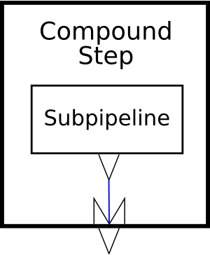

This specification describes the syntax and semantics of XProc 2.0: An XML Pipeline Language, a language for describing operations to be performed on XML documents.This specification describes the syntax and semantics of XProc 2.0: An XML Pipeline Language, a language for describing operations to be performed on documents.This specification describes the syntax and semantics of XProc 2.0: An XML Pipeline Language, a language for describing operations to be performed on XML documents.
An XML Pipeline specifies a sequence of operations to be performed on zero or more XML documents. Pipelines generally accept zero or more XML documents as input and produce zero or more XML documents as output. Pipelines are made up of simple steps which perform atomic operations on XML documents and constructs similar to conditionals, iteration, and exception handlers which control which steps are executed.
Status of this Document
This document is an editor's draft that has no official standing.
This section describes the status of this document at the time of its publication. Other documents may supersede this document. A list of current W3C publications and the latest revision of this technical report can be found in the W3C technical reports index at http://www.w3.org/TR/.
An XML Pipeline specifies a sequence of operations to be performed on a collection of XML input documents. Pipelines take zero or more XML documents as their input and produce zero or more XML documents as their output.
A pipeline consists of steps. Like pipelines, steps take zero or more XML documents as their inputs and produce zero or more XML documents as their outputs. The inputs of a step come from the web, from the pipeline document, from the inputs to the pipeline itself, or from the outputs of other steps in the pipeline. The outputs from a step are consumed by other steps, are outputs of the pipeline as a whole, or are discarded.A pipeline consists of steps. Like pipelines, steps take zero or more documents as their inputs and produce zero or more documents as their outputs. The inputs of a step come from the web, from the pipeline document, from the inputs to the pipeline itself, or from the outputs of other steps in the pipeline. The outputs from a step are consumed by other steps, are outputs of the pipeline as a whole, or are discarded.A pipeline consists of steps. Like pipelines, steps take zero or more XML documents as their inputs and produce zero or more XML documents as their outputs. The inputs of a step come from the web, from the pipeline document, from the inputs to the pipeline itself, or from the outputs of other steps in the pipeline. The outputs from a step are consumed by other steps, are outputs of the pipeline as a whole, or are discarded.
There are three kinds of steps: atomic steps, compound steps, and multi-container steps. Atomic steps carry out single operations and have no substructure as far as the pipeline is concerned. Compound steps and multi-container steps control the execution of other steps, which they include in the form of one or more subpipelines.
This specification defines a standard library, Section 7, “Standard Step Library”, of steps. Pipeline implementations may support additional types of steps as well.
Figure 1. A simple, linear XInclude/Validate pipeline
This is a pipeline that consists of two atomic steps, XInclude and Validate with XML Schema. The pipeline itself has two inputs, “source” (a source document) and “schemas” (a sequence of W3C XML Schemas). The XInclude step reads the pipeline input “source” and produces a result document. The Validate with XML Schema step reads the pipeline input “schemas” and the result of the XInclude step and produces its own result document. The result of the validation, “result”, is the result of the pipeline. (For consistency across the step vocabulary, the standard input is usually named “source” and the standard output is usually named “result”.)
The pipeline document determines how the steps are connected together inside the pipeline, that is, how the output of one step becomes the input of another.
The example in Example 1, “A simple, linear XInclude/Validate pipeline” is very verbose. It makes all of the connections seen in the figure explicit. In practice, pipelines do not have to be this verbose. XProc supports defaults for many common cases:
If you use p:pipeline instead of p:declare-step, the “source” input port and “result” output port are implicitly declared for you.
Where inputs and outputs are connected between sequential sibling steps, they do not have to be made explicit.
The heart of this example is the conditional. The “choose” step evaluates an XPath expression over a test document. Based on the result of that expression, one or another branch is run. In this example, each branch consists of a single validate step.
This example, like the preceding, relies on XProc defaults for simplicity. It is always valid to write the fully explicit form if you prefer.
The media type for pipeline documents is application/xml. Often, pipeline documents are identified by the extension .xpl.
In this specification the words must, must not, should, should not, may and recommended are to be interpreted as described in [RFC 2119].
2 Pipeline Concepts
[Definition: A pipeline is a set of connected steps, with outputs of one step flowing into inputs of another.] A pipeline is itself a step and must satisfy the constraints on steps. Connections between steps occur where the input of one step is connected to the output of another.
The result of evaluating a pipeline (or subpipeline) is the result of evaluating the steps that it contains, in an order consistent with the connections between them. A pipeline must behave as if it evaluated each step each time it is encountered. Unless otherwise indicated, implementations must not assume that steps are functional (that is, that their outputs depend only on their inputs and options) or side-effect free.
The pattern of connections between steps will not always completely determine their order of evaluation. The evaluation order of steps not connected to one another is implementation-dependent.
2.1 Steps
[Definition: A step is the basic computational unit of a pipeline.] A typical step has zero or more inputs, from which it receives XML documents to process, zero or more outputs, to which it sends XML document results, and can have options.[Definition: A step is the basic computational unit of a pipeline.] A typical step has zero or more inputs, from which it receives documents to process, zero or more outputs, to which it sends document results, and can have options.[Definition: A step is the basic computational unit of a pipeline.] A typical step has zero or more inputs, from which it receives XML documents to process, zero or more outputs, to which it sends XML document results, and can have options.
[Definition: An atomic step is a step that performs a unit of XML processing, such as XInclude or transformation, and has no internal subpipeline. ] Atomic steps carry out fundamental XML operations and can perform arbitrary amounts of computation, but they are indivisible. An XSLT step, for example, performs XSLT processing; a Validate with XML Schema step validates one input with respect to some set of XML Schemas, etc.
There are many types of atomic steps. The standard library of atomic steps is described in Section 7, “Standard Step Library”, but implementations may provide others as well. It is implementation-defined what additional step types, if any, are provided. Each use, or instance, of an atomic step invokes the processing defined by that type of step. A pipeline may contain instances of many types of steps and many instances of the same type of step.
Compound steps, on the other hand, control and organize the flow of documents through a pipeline, reconstructing familiar programming language functionality such as conditionals, iterators and exception handling. They contain other steps, whose evaluation they control.
[Definition: A compound step is a step that contains a subpipeline.] That is, a compound step differs from an atomic step in that its semantics are at least partially determined by the steps that it contains.
Finally, there are two “multi-container steps”: p:choose and p:try. [Definition: A multi-container step is a step that contains several alternate subpipelines. ] Each subpipeline is identified by a non-step wrapper element: p:when and p:otherwise in the case of p:choose, p:group and p:catch in the case of p:try.
The output of a multi-container step is the output of exactly one of its subpipelines. In this sense, a multi-container step functions like a compound step. However, evaluating a multi-container step may involve evaluating, or partially evaluating, more than one of its subpipelines. It's possible for steps in a partially evaluated pipeline to have side effects that are visible outside the processor, even if the final output of the multi-container step is the result of some other subpipeline. For example, a web server might record that some interaction was performed, or a file on the local file system might have been modified.
[Definition: A compound step or multi-container step is a container for the steps directly within it or within non-step wrappers directly within it.][Definition: The steps that occur directly within, or within non-step wrappers directly within, a step are called that step's contained steps. In other words, “container” and “contained steps” are inverse relationships.][Definition: The ancestors of a step, if it has any, are its container and the ancestors of its container.]
[Definition: Sibling steps (and the connections between them) form a subpipeline.][Definition: The last step in a subpipeline is its last step in document order.]
User-defined pipelines (identified with pfx:user-pipeline in the preceding syntax summary) are atomic. A pipeline declaration may contain a subpipeline, but the invocation of that pipeline is atomic and does not contain a subpipeline.
Steps have “ports” into which inputs and outputs are connected. Each step has a number of input ports and a number of output ports; a step can have zero input ports and/or zero output ports. (All steps have an implicit output port for reporting errors that must not be declared.) The names of all ports on each step must be unique on that step (you can't have two input ports named “source”, nor can you have an input port named “schema” and an output port named “schema”).
A Step may have zero or more options, all with unique names.
All of the different instances of steps (atomic or compound) in a pipeline can be distinguished from one another by name. If the pipeline author does not provide a name for a step, a default name is manufactured automatically.
2.1.1 Step names
The name attribute on any step can be used to give it a name. The name must be unique within its scope, see Section 3.2, “Scoping of Names”.
If the pipeline author does not provide an explicit name, the processor manufactures a default name. All default names are of the form “!1.m.n…” where “m” is the position (in the sense of counting sibling elements) of the step's highest ancestor element within the pipeline document or library which contains it, “n” is the position of the next-highest ancestor, and so on, including both steps and non-step wrappers. For example, consider the pipeline in Example 3, “A validate and transform pipeline”. The p:pipeline step has no name, so it gets the default name “!1”; the p:choose gets the name “!1.1”; the first p:when gets the name “!1.1.1”; the p:otherwise gets the name “!1.1.2”, etc. If the p:choose had a name, it would not have received a default name, but it would still have been counted and its first p:when would still have been “!1.1.1”.
Providing every step in the pipeline with an interoperable name has several benefits:
It allows implementers to refer to all steps in an interoperable fashion, for example, in error messages.
Pragmatically, we say that readable ports are identified by a step name/port name pair. By manufacturing names for otherwise anonymous steps, we include implicit connections without changing our model.
In a valid pipeline that runs successfully to completion, the manufactured names aren't visible (except perhaps in debugging or logging output).
Note
The format for defaulted names does not conform to the requirements of an NCName. This is an explicit design decision; it prevents pipelines from using the defaulted names on p:pipe elements. If an explicit connection is required, the pipeline author must provide an explicit name for the step.
2.2 Documents
An XProc pipeline processes documents. [Definition: A document is a representation and its [Media Types].]. [Definition: A representation is a data structure used by an XProc processor to refer to the actual document content.]
Documents have associated with them a set of properties. The properties are key/value pairs. [Definition: The document properties are exposed to the XProc pipeline as a map (map(xs:string, xs:string)).] The document properties must always include a “content-type” key which identifies the [Media Types] of the representation. Other properties may also be present, including user defined properties.
In order to be consistent with the XPath data model, all general and external parsed entities must be fully expanded in XML documents; they must not contain any representation of [Infoset] [unexpanded entity reference information items].
The level of support for typed values in XDM instances in an XProc pipeline is implementation-defined.
Although some steps can read and write non-XML resources, what flows between steps through input ports and output ports are exclusively XML documents or sequences of XML documents.
For the purposes of this specification, an XML document is an [Infoset]. Implementations are free to transmit Infosets as sequences of characters, sequences of events, object models, or any other representation that preserves the necessary Infoset properties (see Section 3, “Infoset Conformance”).
Most steps in this specification manipulate XML documents, or portions of XML documents. In these cases, we speak of changing elements, attributes, or nodes without prejudice to the actual representation used by an implementation.
An implementation may make it possible for a step to produce non-XML output (through channels other than a named output port)—for example, writing a PDF document to a URI—but that output cannot flow through the pipeline. Similarly, one can imagine a step that takes no pipeline inputs, reads a non-XML file from a URI, and produces an XML output. But the non-XML data cannot arrive on an input port to a step.
It is a dynamic error (err:XD0001) if a non-XML resource is produced on a step output or arrives on a step input.
The common case is that each step has one or more inputs and one or more outputs. Figure 3, “An atomic step” illustrates symbolically an atomic step with two inputs and one output.Most steps have one or more inputs and one or more outputs. Figure 3, “An atomic step” illustrates symbolically an atomic step with two inputs and one output.The common case is that each step hasMost steps have one or more inputs and one or more outputs. Figure 3, “An atomic step” illustrates symbolically an atomic step with two inputs and one output.
Figure 3. An atomic step
All atomic steps are defined by a p:declare-step. The declaration of an atomic step type defines the input ports, output ports, and options of all steps of that type. For example, every p:validate-with-xml-schema step has two inputs, named “source” and “schema”, one output named “result”, and the same set of options.
Like atomic steps, top level, user-defined pipelines also have declarations. The situation is slightly more complicated for the other compound steps because they don't have separate declarations; each instance of the compound step serves as its own declaration. On these compound steps, the number and names of the outputs can be different on each instance of the step.
Figure 4, “A compound step” illustrates symbolically a compound step with one subpipeline and one output. As you can see from the diagram, the output from the compound step comes from one of the outputs of the subpipeline within the step.

Figure 4. A compound step
[Definition: The input ports declared on a step are its declared inputs.][Definition: The output ports declared on a step are its declared outputs.] When a step is used in a pipeline, it is connected to other steps through its inputs and outputs.
When a step is used, all of the declared inputs of the step must be connected. Each input can be connected to:When a step is used, all of the declared inputs of the step must be connected. Each connection binds the input to a data source that may be from a variety of sources (see Section 2.5, “Connections”). It is a static error (err:XS0003) if any declared input is not connected.When a step is used, all of the declared inputs of the step must be connected. Each input can be connected to:connection binds the input to a data source that may be from a variety of sources (see Section 2.5, “Connections”). It is a static error (err:XS0003) if any declared input is not connected.
The output port of some other step.
A fixed, inline document or sequence of documents.
A document read from a URI.
One of the inputs declared on one of its ancestors.
A special port provided by an ancestor compound step, for example, “current” in a p:for-each or p:viewport.
When an input accepts a sequence of documents, the documents can come from any combination of these locations.
The declared outputs of a step are only connected when they are used by another step or expression. Usually, this connection is made in reverse where the use of the output describes the connection (see Section 2.5, “Connections”).
The primary output port of a step must be connected. It is a static error (err:XS0005) if the primary output port of any step is not connected. Other outputs can remain unconnected. Any documents produced on an unconnected output port are discarded.The primary output port of a step must be connected to some consumer. It is a static error (err:XS0005) if the primary output port of any step is not connected. Other outputs can remain unconnected. Any documents produced on an unconnected output port are discarded.The primary output port of a step must be connected to some consumer. It is a static error (err:XS0005) if the primary output port of any step is not connected. Other outputs can remain unconnected. Any documents produced on an unconnected output port are discarded.
Output ports on compound steps have a dual nature: from the perspective of the compound step's siblings, its outputs are just ordinary outputs and must be connected as described above. From the perspective of the subpipeline inside the compound step, they are inputs into which something may be connected.Output ports on compound steps have a dual nature: from the perspective of the compound step's siblings, its outputs are just ordinary outputs and can be connected the sames other declared outputs. From the perspective of the subpipeline inside the compound step, they are inputs into which something may be connected to produce the output of the compound step.Output ports on compound steps have a dual nature: from the perspective of the compound step's siblings, its outputs are just ordinary outputs and must be connected as described abovecan be connected the sames other declared outputs. From the perspective of the subpipeline inside the compound step, they are inputs into which something may be connected to produce the output of the compound step.
Within a compound step, the declared outputs of the step can be connected to:
A fixed, inline document or sequence of documents.
A document read from a URI.
If a (non-primary) output port of a compound step is left unconnected, it produces an empty sequence of documents from the perspective of its siblings.Within a compound step, the declared outputs of the step can be connected to any of the various available outputs of contained steps in combination with other inputs (see Section 2.5, “Connections”). If a (non-primary) output port of a compound step is left unconnected, it produces an empty sequence of documents from the perspective of its siblings.Within a compound step, the declared outputs of the step can be connected to any of the various available outputs of contained steps in combination with other inputs (see Section 2.5, “Connections”). If a (non-primary) output port of a compound step is left unconnected, it produces an empty sequence of documents from the perspective of its siblings.
Each input and output on a step is declared to accept or produce either a single document or a sequence of documents. It is not an error to connect a port that is declared to produce a sequence of documents to a port that is declared to accept only a single document. It is, however, an error if the former step actually produces more than one document at run time.
It is also not an error to connect a port that is declared to produce a single document to a port that is declared to accept a sequence. A single document is the same as a sequence of one document.
An output port may have more than one connection: it may be connected to more than one input port, more than one of its container's output ports, or both. At runtime this will result in distinct copies of the output.
[Definition: The signature of a step is the set of inputs, outputs, and options that it is declared to accept.] The declaration for a step provides a fixed signature which all its instances share.
[Definition: A step matches its signature if and only if it specifies an input for each declared input, it specifies no inputs that are not declared, it specifies an option for each option that is declared to be required, and it specifies no options that are not declared.] In other words, every input and required option must be specified and only inputs and options that are declared may be specified. Options that aren't required do not have to be specified.[Definition: A step matches its signature if and only if it specifies an input for each declared input, it specifies no inputs that are not declared, it specifies an option for each option that is declared to be required, and it specifies no options that are not declared.] In other words, every input and required option must be specified and only inputs and options that are declared may be specified. Options that aren't required do not have to be specified.[Definition: A step matches its signature if and only if it specifies an input for each declared input, it specifies no inputs that are not declared, it specifies an option for each option that is declared to be required, and it specifies no options that are not declared.] In other words, every input and required option must be specified and only inputs and options that are declared may be specified. Options that aren't required do not have to be specified.
Steps may also produce error, warning, and informative messages. These messages are captured and provided on the error port inside of a p:catch. Outside of a try/catch, the disposition of error messages is implementation-dependent. Steps may also produce error, warning, and informative messages. These messages are captured and provided on the error port inside of a p:catch. Outside of a try/catch, the disposition of error messages is implementation-dependent. Steps may also produce error, warning, and informative messages. These messages are captured and provided on the error port inside of a p:catch. Outside of a try/catch, the disposition of error messages is implementation-dependent.
How inputs are connected to XML documents outside the pipeline is implementation-defined. In order to be consistent with the XPath data model, all general and external parsed entities in such documents must be fully expanded; they must not contain any representation of [Infoset] [unexpanded entity reference information items].How inputs are connected to documents outside the pipeline is implementation-defined.How inputs are connected to XML documents outside the pipeline is implementation-defined. In order to be consistent with the XPath data model, all general and external parsed entities in such documents must be fully expanded; they must not contain any representation of [Infoset] [unexpanded entity reference information items].
How pipeline outputs are connected to XML documents outside the pipeline is implementation-defined.How pipeline outputs are connected to documents outside the pipeline is implementation-defined.How pipeline outputs are connected to XML documents outside the pipeline is implementation-defined.
Input ports may specify a cointent type, or list of content types, that they accept. If an input port provides a set of acceptable content types, it is a dynamic error (err:XD1003) if an input document that arrives on the port has a content type not in that set.
2.2.12.3.1 External Documents
It's common for some of the documents used in processing a pipeline to be read from URIs. Sometimes this occurs directly, for example with a p:document element. Sometimes it occurs indirectly, for example if an implementation allows the URI of a pipeline input to be specified on the command line or if an p:xslt step encounters an xsl:import in the stylesheet that it is processing. It's also common for some of the documents produced in processing a pipeline to be written to locations which have, or at least could have, a URI.
The process of dereferencing a URI to retrieve a document is often more interesting than it seems at first. On the web, it may involve caches, proxies, and various forms of indirection. Resolving a URI locally may involve resolvers of various sorts and possibly appeal to implementation-dependent mechanisms such as catalog files.The process of dereferencing a URI to retrieve a document is often more interesting than it seems at first. On the web, it may involve caches, proxies, and various forms of indirection. Resolving a URI locally may involve resolvers of various sorts and possibly appeal to implementation-dependent mechanisms such as catalog files.The process of dereferencing a URI to retrieve a document is often more interesting than it seems at first. On the web, it may involve caches, proxies, and various forms of indirection. Resolving a URI locally may involve resolvers of various sorts and possibly appeal to implementation-dependent mechanisms such as catalog files.
In XProc, the situation is made even more interesting by the fact that many intermediate results produced by steps in the pipeline have base URIs. Whether (and when and how) or not the intermediate results that pass between steps are ever written to a filesystem is implementation-dependent.In XProc, the situation is made even more interesting by the fact that many intermediate results produced by steps in the pipeline have base URIs. Whether (and when and how) or not the intermediate results that pass between steps are ever written to a filesystem is implementation-dependent.In XProc, the situation is made even more interesting by the fact that many intermediate results produced by steps in the pipeline have base URIs. Whether (and when and how) or not the intermediate results that pass between steps are ever written to a filesystem is implementation-dependent.
In Version 1.0 of XProc, how (or if) implementers provide local resolution mechanisms and how (or if) they provide access to intermediate results by URI is implementation-defined. In Version 2.0 of XProc, how (or if) implementers provide local resolution mechanisms and how (or if) they provide access to intermediate results by URI is implementation-defined. In Version 1.02.0 of XProc, how (or if) implementers provide local resolution mechanisms and how (or if) they provide access to intermediate results by URI is implementation-defined.
Version 1.02.0 of XProc does not require implementations to guarantee that multiple attempts to dereference the same URI always produce consistent results.
Note
On the one hand, this is a somewhat unsatisfying state of affairs because it leaves room for interoperability problems. On the other, it is not expected to cause such problems very often in practice.
If these problems arise in practice, implementers are encouraged to use the existing extension mechanisms to give users the control needed to circumvent them. Should such mechanisms become widespread, a standard mechanism could be added in some future version of the language.
2.2.2 Non-XML Documents
XProc is designed to allow pipeline authors to specify how an XML document, or sequence of XML documents, flows through a series of steps. For the most part, non-XML documents are considered out-of-scope.
However, to be useful, XProc pipelines must interact with the real world where non-XML documents (HTML documents, raster images, non-XML encodings of data, etc.) are a fact of life.
Accordingly, some pipelines may need to access non-XML documents and some non-XML documents may “leak” into pipelines. XProc provides a limited set of tools for processing these documents. In particular, XProc offers the ability to turn some “almost-XML” documents into XML and to allow some non-XML documents to flow quietly through the pipeline.
It is not a goal of XProc that it should be a general-purpose pipeline language for manipulating arbitrary, non-XML resources.
There are two standard ways that a non-XML document may enter a pipeline: directly through p:data or as the result of performing an p:http-request step. Loading non-XML data with a computed URI requires the p:http-request step. Implementors are encouraged to support the file: URI scheme so that users can load local data from computed URIs.
In either case, non-XML documents are converted into text or are base64-encoded, depending on their content type and character encoding. The result is an XML document that consists of a document element containing either escaped text or base64-encoded text. This document can be processed like any other XML document.
The p:unescape-markup step can be used to (attempt to) convert a non-XML document into XML. Well-formed XML that just happens to be represented with escaped markup can always be recovered. For other media types, the ability to construct XML and the precise mechanisms used to make the markup well-formed are implementation-defined.
XProc provides no standard means to save encoded data in its unencoded binary form. Implementors may provide extension methods to allow the p:store step to save the binary data. For example, an implementation might provide a ext:binary serialization method that decoded base64 encoded data before saving it:
As a convenience for pipeline authors, each step may have one input port designated as the primary input port and one output port designated as the primary output port.
[Definition: If a step has a document input port which is explicitly marked “primary='true'”, or if it has exactly one document input port and that port is not explicitly marked “primary='false'”, then that input port is the primary input port of the step.] If a step has a single input port and that port is explicitly marked “primary='false'”, or if a step has more than one input port and none is explicitly marked as the primary, then the primary input port of that step is undefined. A step can have at most one primary input port.
[Definition: If a step has a document output port which is explicitly marked “primary='true'”, or if it has exactly one document output port and that port is not explicitly marked “primary='false'”, then that output port is the primary output port of the step.] If a step has a single output port and that port is explicitly marked “primary='false'”, or if a step has more than one output port and none is explicitly marked as the primary, then the primary output port of that step is undefined. A step can have at most one primary output port.
The special significance of primary input and output ports is that they are connected automatically by the processor if no explicit connection is given. Generally speaking, if two steps appear sequentially in a subpipeline, then the primary output of the first step will automatically be connected to the primary input of the second.
Additionally, if a compound step has no declared outputs and the last step in its subpipeline has an unconnected primary output, then an implicit primary output port will be added to the compound step (and consequently the last step's primary output will be connected to it). This implicit output port has no name. It inherits the sequence property of the port connected to it. This rule does not apply to p:declare-step; step declarations must provide explicit names for all of their outputs.
2.42.5 Connections
Steps are connected together by their input ports and output ports. It is a static error (err:XS0001) if there are any loops in the connections between steps: no step can be connected to itself nor can there be any sequence of connections through other steps that leads back to itself.
[Definition: A connection associates an input or output port with some data source.] Such a connection represents a binding between the port's name and the data source as described by various locations, inline expressions, or readable ports.
An input port can be connected to:
The output port of some other step.
A fixed, inline document or sequence of documents.
A document read from a URI.
One of the inputs declared on one of its ancestors.
A special port provided by an ancestor compound step, for example, “current” in a p:for-each or p:viewport.
When an input accepts a sequence of documents, the documents can come from any combination of these locations.
In contrast, output ports are connected when they are referenced by another input port, declared output or other expression and may be connected to:
As with an input, the output can be a sequence of documents constructed from any combination of the above.
An output port may have multiple consumers and this results in multiple connections. A subset of these connections are the input port connections for various sibling or contained steps.
Within the context of a compound step, the declared outputs of the compound step must describe their connections. The set of possibilities for this connection is exactly the same set as for any other input port within the current environment.
2.4.12.5.1 Namespace Fixup on Outputs
XProc processors are expected, and sometimes required, to perform namespace fixup. Unless the semantics of a step explicitly says otherwise:
The in-scope namespaces associated with a node (even those that are inherited from namespace bindings that appear among its ancestors in the document in which it appears initially) are assumed to travel with that node.
Changes to one part of a tree (wrapping or unwrapping a node or renaming an element, for example) do not change the in-scope namespaces associated with the descendants of the node so changed.
As a result, some steps can produce XML documents which have no direct serialization (because they include nodes with conflicting or missing namespace declarations, for example). [Definition: To produce a serializable XML document, the XProc processor must sometimes add additional namespace nodes, perhaps even renaming prefixes, to satisfy the constraints of Namespaces in XML. This process is referred to as namespace fixup.]
Implementors are encouraged to perform namespace fixup before passing documents between steps, but they are not required to do so. Conversely, an implementation which does serialize between steps and therefore must perform such fixups, or reject documents that cannot be serialized, is also conformant.
Except where the semantics of a step explicitly require changes, processors are required to preserve the information in the documents and fragments they manipulate. In particular, the information corresponding to the [Infoset] properties [attributes], [base URI], [children], [local name], [namespace name], [normalized value], [owner], and [parent]must be preserved.
The information corresponding to [prefix], [in-scope namespaces], [namespace attributes], and [attribute type]should be preserved, with changes to the first three only as required for namespace fixup. In particular, processors are encouraged to take account of prefix information in creating new namespace bindings, to minimize negative impact on prefixed names in content.
Except for cases which are specifically called out in Section 7, “Standard Step Library”, the extent to which namespace fixup, and other checks for outputs which cannot be serialized, are performed on intermediate outputs is implementation-defined.Except for cases which are specifically called out in Section 7, “Standard Step Library”, the extent to which namespace fixup, and other checks for outputs which cannot be serialized, are performed on intermediate outputs is implementation-defined.Except for cases which are specifically called out in Section 7, “Standard Step Library”, the extent to which namespace fixup, and other checks for outputs which cannot be serialized, are performed on intermediate outputs is implementation-defined.
Whenever an implementation serializes pipeline contents, for example for pipeline outputs, logging, or as part of steps such as p:store or p:http-request, it is a dynamic error if that serialization could not be done so as to produce a document which is both well-formed and namespace-well-formed, as specified in XML and Namespaces in XML, regardless of what serialization method, if any, is called for.
2.52.6 Environment
[Definition: The environment is a context-dependent collection of information available within subpipelines.] Most of the information in the environment is static and can be computed for each subpipeline before evaluation of the pipeline as a whole begins. The in-scope bindings have to be calculated as the pipeline is being evaluated.
The environment consists of:
A set of readable ports. [Definition: The readable ports are a set of step name/port name pairs.] Inputs and outputs can only be connected to readable ports.
A default readable port. [Definition: The default readable port, which may be undefined, is a specific step name/port name pair from the set of readable ports.]
A set of in-scope bindings. [Definition: The in-scope bindings are a set of name-value pairs, based on option and variable bindings.]
[Definition: The empty environment contains no readable ports, an undefined default readable port and no in-scope bindings.]
Otherwise, the default readable port is unchanged.
The names and values from each p:variable present at the beginning of the container are added, in document order, to the in-scope bindings. A new binding replaces an old binding with the same name. See Section 5.7.1, “p:variable” for the specification of variable evaluation.
When a pipeline is invoked by a processor, an initial environment is constructed. [Definition: An initial environment is a connection for each of the readable ports and a set of option bindings used to construct the in-scope bindings.] This environment is used in place of the empty environment that might have otherwise been provided.
An invoked pipeline's initial environment is different from the environment constructed for the sub-pipeline of a declared step. The initial environment is constructed for the initial invocation of the pipeline by the processor by the outside application. Steps that are subsequently invoked construct an environment as specified in Section 5.8.2, “Declaring pipelines”.
When constructing an initial environment, an implementation is free to provide any set of mechanisms to construct connections for the input ports of the invoked step. These mechanisms are not limited to the variety of mechnisms described within this specification. Any extensions are implementation defined.
The set of in-scope bindings are constructed from a set of option name/value pairs. Each option value can be a simple string value, a specific data type instance (e.g. xs:dateTime), or a more complex value like a map item. How these values are specified is implementation defined.
2.62.7 XPaths in XProc
XProc uses XPath as an expression language. XPath expressions are evaluated by the XProc processor in several places: on compound steps, to compute the default values of options and the values of variables; on atomic steps, to compute the actual values of options.
XPath expressions are also passed to some steps. These expressions are evaluated by the implementations of the individual steps.
This distinction can be seen in the following example:
The select expression on the variable “home” is evaluated by the XProc processor. The value of the variable is “http://example.com/docs”.
The href option of the p:load step is evaluated by the XProc processor. The actual href option received by the step is simply the string literal “http://example.com/docs/document.xml”. (The select expression on the source input of the p:split-sequence step is also evaluated by the XProc processor.)
The XPath expression “@role='chapter'” is passed literally to the test option on the p:split-sequence step. That's because the nature of the p:split-sequence is that it evaluates the expression. Only some options on some steps expect XPath expressions.
The XProc processor evaluates all of the XPath expressions in select attributes on variables, options, and inputs, in match attributes on p:viewport, and in test attributes on p:when steps.
2.6.12.7.1 Processor XPath Context
When the XProc processor evaluates an XPath expression using XPath, unless otherwise indicated by a particular step, it does so with the following static context:
XPath 1.0 compatibility mode
False
Statically known namespaces
The namespace declarations in-scope for the containing element.
Default element/type namespace
The null namespace.
Default function namespace
The [XPath 2.0] function namespace. Function names that do not contain a colon always refer to the default function namespace, any in-scope binding for the default namespace does not apply. This specification does not provide a mechanism to override the default function namespace.
In-scope schema definitions
A basic XPath 2.0 XProc processor includes the following named type definitions in its in-scope schema definitions:
All the primitive atomic types defined in [W3C XML Schema: Part 2], with the exception of xs:NOTATION. That is: xs:string, xs:boolean, xs:decimal, xs:double, xs:float, xs:date, xs:time, xs:dateTime, xs:duration, xs:QName, xs:anyURI, xs:gDay, xs:gMonthDay, xs:gMonth, xs:gYearMonth, xs:gYear, xs:base64Binary, and xs:hexBinary.
The types xs:anyType, xs:anySimpleType, xs:yearMonthDuration, xs:dayTimeDuration, xs:anyAtomicType, xs:untyped, and xs:untypedAtomic defined in [XQuery 1.0 and XPath 2.0 Data Model (XDM)].
In-scope variables
The union of the in-scope specified options and variables are available as variable bindings to the XPath processor.
Note
An option that has neither a specified value nor a default value will not appear as an in-scope variable. Consequently, an attempt to refer to that variable will raise an error.
Implementation-defined but must include the Unicode code point collation. The version of Unicode supported is implementation-defined, but it is recommended that the most recent version of Unicode be used. Implementation-defined but must include the Unicode code point collation. The version of Unicode supported is implementation-defined, but it is recommended that the most recent version of Unicode be used. Implementation-defined but must include the Unicode code point collation. The version of Unicode supported is implementation-defined, but it is recommended that the most recent version of Unicode be used.
Default collation
Unicode code point collation.
Base URI
The base URI of the element on which the expression occurs.
Statically known documents
None.
Statically known collections
None.
And the following dynamic context:
context item
The document node of a document. The document is either specified with a connection or is taken from the default readable port. It is a dynamic error (err:XD0008) if a document sequence appears where a document to be used as the context node is expected. A document. The document is either specified with a connection or is taken from the default readable port. It is a dynamic error (err:XD0008) if a document sequence appears where a document to be used as the context node is expected. The document node of a documentA document. The document is either specified with a connection or is taken from the default readable port. It is a dynamic error (err:XD0008) if a document sequence appears where a document to be used as the context node is expected.
The result of evaluating an expression when the context node has a non-XML content type is implementation-defined.
If there is no explicit connection and there is no default readable port then the context node is undefined.
context position and context size
The context position and context size are both “1”.
Variable values
The union of the in-scope options and variables are available as variable bindings to the XPath processor.
The set of available documents (those that may be retrieved with a URI) is implementation-dependent.The set of available documents (those that may be retrieved with a URI) is implementation-dependent.The set of available documents (those that may be retrieved with a URI) is implementation-dependent.
When a step evaluates an XPath expression using XPath 2.0, unless otherwise indicated by a particular step, it does so with the following static context:
XPath 1.0 compatibility mode
False
Statically known namespaces
The namespace declarations in-scope for the containing element or made available through p:namespaces.
Default element/type namespace
The null namespace.
Default function namespace
The [XPath 2.0] function namespace. Function names that do not contain a colon always refer to the default function namespace, any in-scope binding for the default namespace does not apply. This specification does not provide a mechanism to override the default function namespace.
The set of available documents (those that may be retrieved with a URI) is implementation-dependent.The set of available documents (those that may be retrieved with a URI) is implementation-dependent.The set of available documents (those that may be retrieved with a URI) is implementation-dependent.
Available collections
None.
Default collection
None.
Note
Some steps may also provide for implementation-defined or implementation-dependent amendments to the contexts. Those amendments are in addition to any specified by XProc.
2.72.8 XPath Extension Functions
The XProc processor must support the additional functions described in this section in XPath expressions evaluated by the processor.
2.7.12.8.1 System Properties
XPath expressions within a pipeline document can interrogate the processor for information about the current state of the pipeline. Various aspects of the processor are exposed through the p:system-property function in the pipeline namespace:
p:system-property($property as xs:string) as xs:string
The $property string must have the form of a QName; the QName is expanded into a name using the namespace declarations in scope for the expression. It is a dynamic error (err:XD0015) if the specified QName cannot be resolved with the in-scope namespace declarations. The p:system-property function returns the string representing the value of the system property identified by the QName. If there is no such property, the empty string must be returned.
Implementations must provide the following system properties, which are all in the XProc namespace:
p:episode
Returns a string which should be unique for each invocation of the pipeline processor. In other words, if a processor is run several times in succession, or if several processors are running simultaneously, each invocation of each processor should get a distinct value from p:episode.
Returns a string which identifies the current language, for example, for message localization purposes. The exact format of the language string is implementation-defined but should be consistent with the xml:lang attribute.Returns a string which identifies the current language, for example, for message localization purposes. The exact format of the language string is implementation-defined but should be consistent with the xml:lang attribute.Returns a string which identifies the current language, for example, for message localization purposes. The exact format of the language string is implementation-defined but should be consistent with the xml:lang attribute.
p:product-name
Returns a string containing the name of the implementation, as defined by the implementer. This should normally remain constant from one release of the product to the next. It should also be constant across platforms in cases where the same source code is used to produce compatible products for multiple execution platforms.
p:product-version
Returns a string identifying the version of the implementation, as defined by the implementer. This should normally vary from one release of the product to the next, and at the discretion of the implementer it may also vary across different execution platforms.
p:vendor
Returns a string which identifies the vendor of the processor.
p:vendor-uri
Returns a URI which identifies the vendor of the processor. Often, this is the URI of the vendor's web site.
p:version
Returns the version(s) of XProc implemented by the processor as a space-separated list. For example, a processor that supports XProc 1.0 would return “1.0”; a processor that supports XProc 1.0 and 2.0 would return “1.0 2.0”; a processor that supports only XProc 2.0 would return “2.0”.
p:xpath-version
Returns the version(s) of XPath implemented by the processor for evaluating XPath expressions on XProc elements. The result is a space-separated list of versions supported. For example, a processor that only supports XPath 2.0 would return “2.0”; a processor that supports XPath 2.0 and XPath 3.0 could return “2.0 3.0”; a processor that supports only XPath 2.0 would return “2.0”.
p:psvi-supported
Returns true if the implementation supports passing PSVI annotations between steps, false otherwise.
Implementations may support additional system properties but such properties must be in a namespace and must not be in the XProc namespace.
2.7.22.8.2 Step Available
The p:step-available function reports whether or not a particular type of step is understood by the processor.
p:step-available($step-name as xs:string) as xs:boolean
The $step-type string must have the form of a QName; the QName is expanded into a name using the namespace declarations in-scope for the expression. The p:step-available function returns true if and only if the processor knows how to evaluate steps of the specified type.
2.7.32.8.3 Value Available
The p:value-available function reports whether or not a particular in-scope option has a value.
p:value-available($option-name as xs:string) as xs:boolean
p:value-available($option-name as xs:string, $fail-if-unknown as xs:boolean) as xs:boolean
The $option-name string must have the form of a QName; the QName is expanded into a name using the namespace declarations in-scope for the expression. The p:value-available function returns true if and only if the name specified is the name of an in-scope binding and the binding has a value. It is a dynamic error (err:XD0033) if the name specified is not the name of an in-scope option or variable.
In the two-argument form, it is not an error to specify a name that is not the name of an in-scope option or variable if $fail-if-unknown is false; the function simply returns false. The semantics of the two-argument form when $fail-if-unknown is true are precisely the same as the single argument form.
If the path option is specified in the call to ex:dir-list, then the first p:when clause will be evaluated and the specified value will be used. If the option is not specified, then the p:otherwise clause will be evaluated and "." will be used instead.
2.7.42.8.4 Iteration Position
Both p:for-each and p:viewport process a sequence of documents. The iteration position is the position of the current document in that sequence: the first document has position 1, the second 2, etc. The p:iteration-position function returns the iteration position of the nearest ancestor p:for-each or p:viewport.
Both p:for-each and p:viewport process a sequence of documents. The iteration size is the total number of documents in that sequence. The p:iteration-size function returns the iteration size of the nearest ancestor p:for-each or p:viewport.
p:iteration-size() as xs:integer
If there is no p:for-each or p:viewport among the ancestors of the element on which the expression involving p:iteration-size occurs, it returns 1.
2.7.62.8.6 Version Available
Returns true if and only if the processor supports the version specified.
p:version-available($version as xs:decimal) as xs:boolean
A version 1.0 processor will return true() when p:version-available(1.0) is evaluated.
2.7.72.8.7 XPath Version Available
Returns true if and only if the processor supports the XPath version specified.
p:xpath-version-available($version as xs:decimal) as xs:boolean
A processor that supports XPath 2.0 will return true() when p:xpath-version-available(2.0) is evaluated.
2.7.82.8.8 Make Map
XProc uses maps to pass parameters to steps. Sometimes it is convenient to represent these maps as XML documents. This function reads such an XML document and produces a map.
p:make-map($param-set as item()) as map(xs:QName,item())
The map returned contains (exclusively) the parameters that are represented by the $param-set item.
Only c:param children of the c:param-set element are considered, all other nodes are ignored. The parameters represented by those c:param children are added to the map that is returned. It is a dynamic error (err:XD1002) if any of the c:param elements are invalid.
Note
Must tie down what “valid” means wrt the c:param element.
p:document-properties($doc as document-node()) as map(xs:string,xs:string)
The map returned contains (exclusively) the document properties associated with the $doc specified.
2.7.92.8.10 Other XPath Extension Functions
It is implementation-defined if the processor supports any other XPath extension functions. Additional extension functions, if any, must not use any of the XProc namespaces. It is implementation-defined if the processor supports any other XPath extension functions. Additional extension functions, if any, must not use any of the XProc namespaces. It is implementation-defined if the processor supports any other XPath extension functions. Additional extension functions, if any, must not use any of the XProc namespaces.
2.82.9 PSVIs in XProc
XML documents flow between steps in an XProc pipeline. Section 3, “Infoset Conformance” identifies the properties of those documents that must be available. Implementations may also have the ability to pass PSVI annotations between steps.
Whether or not the pipeline processor supports passing PSVI annotations between steps is implementation-defined. The exact PSVI properties that are preserved when documents are passed between steps is implementation-defined.Whether or not the pipeline processor supports passing PSVI annotations between steps is implementation-defined. The exact PSVI properties that are preserved when documents are passed between steps is implementation-defined.Whether or not the pipeline processor supports passing PSVI annotations between steps is implementation-defined. The exact PSVI properties that are preserved when documents are passed between steps is implementation-defined.
A pipeline can use the p:psvi-supported system property to determine whether or not PSVI properties can be passed between steps.
A pipeline can assert that PSVI support is required with the psvi-required attribute:
On a p:pipeline or p:declare-step, psvi-required indicates whether or not the declared step requires PSVI support. It is a dynamic error (err:XD0022) if a processor that does not support PSVI annotations attempts to invoke a step which asserts that they are required.
On a p:library, the psvi-required attribute provides a default value for all of its p:pipeline and p:declare-stepchildren that do not specify a value themselves.
Many of the steps that an XProc pipeline can use are transformative in nature. The p:delete step, for example, can remove elements and attributes; the p:label-elements step can add attributes; etc. If PSVI annotations were always preserved, the use of such steps could result in documents that were inconsistent with their schema annotations.
In order to avoid these inconsistencies, most steps must not produce PSVI annotated results even when PSVI passing is supported.
If PSVI passing is supported, the following constraints apply:
Implementations must faithfully transmit any PSVI properties produced on step outputs to the steps to which they are connected.
When only a subset of the input is processed by a step (because a select expression appears on an input port or a match expression is used to process only part of the input), any PSVI annotations that appear on the selected input must be preserved in the resulting documents passed to the step.
Note that ID/IDREF constraints, and any other whole-document constraints, may not be satisfied within the selected portion, irrespective of what its PSVI properties claim.
If an output of a compound step is connected to an output which includes PSVI properties, those properties must be preserved on the output of the compound step, except for the output of p:viewport which must not contain any PSVI properties.
If an implementation supports XPath 2.0, the data model constructed with which to evaluate XPath expressions and match patterns should take advantage of as much PSVI information as possible.
Except as specified above, or in the descriptions of individual steps, implementations must not include PSVI properties in the outputs of steps defined by this specification. It is implementation-defined what PSVI properties, if any, are produced by extension steps.Except as specified above, or in the descriptions of individual steps, implementations must not include PSVI properties in the outputs of steps defined by this specification. It is implementation-defined what PSVI properties, if any, are produced by extension steps.Except as specified above, or in the descriptions of individual steps, implementations must not include PSVI properties in the outputs of steps defined by this specification. It is implementation-defined what PSVI properties, if any, are produced by extension steps.
A processor that supports passing PSVI properties between steps is always free to do so. Even if psvi-required="false" is explicitly specified, it is not an error for a step to produce a result that includes additional PSVI properties, provide it does not violate the constraints above.
2.10 Value Templates
2.10.1 Attribute Value Templates
[Definition: An attribute value template is FIXME: the obvious concept from XSLT.]
2.10.2 Text Value Templates
[Definition: A text value template is FIXME: the obvious concept from XSLT 3.0.]
2.92.11 Variables
Variables are name/value pairs. Pipeline authors can create variables to hold computed values.
[Definition: A variable is a name/value pair. The name must be an expanded name. The value may be any XDM value.]
Variables and options share the same scope and may shadow each other.
2.102.12 Options
Some steps accept options. Options are name/value pairs, like variables. Unlike variables, the value of an option can be changed by the caller.
[Definition: An option is a name/value pair. The name must be an expanded name. The value may be any XDM value.]
[Definition: The options declared on a step are its declared options.] Option names are always expressed as literal values, pipelines cannot construct option names dynamically.
[Definition: The options on a step which have specified values, either because a p:with-option element specifies a value or because the declaration included a default value, are its specified options.]
How outside values are specified for pipeline options on the pipeline initially invoked by the processor is implementation-defined. In other words, the command line options, APIs, or other mechanisms available to specify such options values are outside the scope of this specification.How outside values are specified for pipeline options on the pipeline initially invoked by the processor is implementation-defined. In other words, the command line options, APIs, or other mechanisms available to specify such options values are outside the scope of this specification.How outside values are specified for pipeline options on the pipeline initially invoked by the processor is implementation-defined. In other words, the command line options, APIs, or other mechanisms available to specify such options values are outside the scope of this specification.
Some steps require a set of name/value pairs for the operations they perform. For example, an author may specify parameters to an XSLT transformation or external variables to an XQuery. Such values are passed to the step via an option that requires a map item value [XSLT 3.0] . The map item contains the mapping of between the names and the values whose interpretation is specific to the step.
2.112.13 Security Considerations
An XProc pipeline may attempt to access arbitrary network resources: steps such as p:load and p:http-request can attempt to read from an arbitrary URI; steps such as p:store can attempt to write to an arbitrary location; p:exec can attempt to execute an arbitrary program. Note, also, that some steps, such as p:xslt and p:xquery, include extension mechanisms which may attempt to execute arbitrary code.
In some environments, it may be inappropriate to provide the XProc pipeline with access to these resources. In a server environment, for example, it may be impractical to allow pipelines to store data. In environments where the pipeline cannot be trusted, allowing the pipeline to access arbitrary resources or execute arbitrary code may be a security risk.
It is a dynamic error (err:XD0021) for a pipeline to attempt to access a resource for which it has insufficient privileges or perform a step which is forbidden. Which steps are forbidden, what privileges are needed to access resources, and under what circumstances these security constraints apply is implementation-dependent. It is a dynamic error (err:XD0021) for a pipeline to attempt to access a resource for which it has insufficient privileges or perform a step which is forbidden. Which steps are forbidden, what privileges are needed to access resources, and under what circumstances these security constraints apply is implementation-dependent. It is a dynamic error (err:XD0021) for a pipeline to attempt to access a resource for which it has insufficient privileges or perform a step which is forbidden. Which steps are forbidden, what privileges are needed to access resources, and under what circumstances these security constraints apply is implementation-dependent.
Steps in a pipeline may call themselves recursively which could result in pipelines which will never terminate.
A conformant XProc processor may limit the resources available to any or all steps in a pipeline. A conformant implementation may raise dynamic errors, or take any other corrective action, for any security problems that it detects.
2.122.14 Versioning Considerations
A pipeline author may identify the version of XProc for which a particular pipeline was authored by setting the version attribute. The version attribute can be specified on p:declare-step, p:pipeline, or p:library. If specified, the value of the version attribute must be a xs:decimal. It is a static error (err:XS0063) if the value of the version attribute is not a xs:decimal.
The version of XProc defined by this specification is “1.0”.
A pipeline author must identify the version of XProc on the document element of a pipeline document. It is a static error (err:XS0062) if a required version attribute is not present.
The version identified applies to the element on which the version attribute appears and all of its descendants, unless or until another version is explicitly identified.
When a processor encounters an explicit version (other than a version which it implements), it proceeds in backwards- or forwards-compatible mode.
2.12.12.14.1 Backwards-compatible Mode
If the processor encounters a request for a previous version of XProc (e.g., if a "2.0" processor encounters an explicit request for the "1.0" language), it must process the pipeline as if it was a processor for the requested version: it must enforce the semantics of the requested version, it must report steps not known in that version as errors, etc. It is a static error (err:XS0060) if the processor encounters an explicit request for a previous version of the language and it is unable to process the pipeline using those semantics.
2.12.22.14.2 Forwards-compatible Mode
If the processor encounters an explicit version which it does not recognize, it processes the pipeline in forwards-compatible mode. Forwards-compatible mode relaxes several static errors, turning them into dynamic errors so that a pipeline author can write a pipeline which conditionally uses new language features.
In forwards-compatible mode:
On any element in the XProc namespace, unrecognized attributes (other than extension attributes) are ignored.
On any step in the XProc namespace, unknown options are ignored.
If a step in the XProc namespace includes an unknown input port with an explicit connection, the connection is treated normally for the purpose of computing the dependencies in the pipeline but it is otherwise ignored. Unknown input ports must not be treated as primary input ports; it will always be an error if they are used but not explicitly connected.
If a step in the pipeline includes an explicit connection to an unknown output port on a step in the XProc namespace, the connection is treated normally for the purpose of computing the dependencies in the pipeline. An empty sequence of documents must appear on that connection.
As a consequence of the rules above, future specifications must not change the semantics of existing step types without changing their names. Although they may add new input and output ports, such changes should be done with care; they should in some sense be limited to ancillary inputs and outputs and they must not be primary input ports.
2.12.2.12.14.2.1 Examples
In forwards-compatible mode, it is not a static error to encounter the following step:
The processor will simply ignore the “ancillary” port.
Suppose that XProc version 2.0 changes the definition of the p:xslt step so that it has an additional output port, messages. Then consider the following pipeline:
When run by a "2.0" or later processor, it will count the documents that appear on the messages port. When run by a “1.0” processor in forwards-compatible mode, the binding to the “messages” port is not a static error. Dynamically, the "1.0" processor will always produce a count of zero, because an empty sequence of documents will always appear on the messages port.
3 Syntax Overview
This section describes the normative XML syntax of XProc. This syntax is sufficient to represent all the aspects of a pipeline, as set out in the preceding sections. [Definition: XProc is intended to work equally well with [XML 1.0] and [XML 1.1]. Unless otherwise noted, the term “XML” refers equally to both versions.][Definition: Unless otherwise noted, the term Namespaces in XML refers equally to [Namespaces 1.0] and [Namespaces 1.1].]Support for pipeline documents written in XML 1.1 and pipeline inputs and outputs that use XML 1.1 is implementation-defined. This section describes the normative XML syntax of XProc. This syntax is sufficient to represent all the aspects of a pipeline, as set out in the preceding sections. [Definition: XProc is intended to work equally well with [XML 1.0] and [XML 1.1]. Unless otherwise noted, the term “XML” refers equally to both versions.][Definition: Unless otherwise noted, the term Namespaces in XML refers equally to [Namespaces 1.0] and [Namespaces 1.1].]Support for pipeline documents written in XML 1.1 and pipeline inputs and outputs that use XML 1.1 is implementation-defined. This section describes the normative XML syntax of XProc. This syntax is sufficient to represent all the aspects of a pipeline, as set out in the preceding sections. [Definition: XProc is intended to work equally well with [XML 1.0] and [XML 1.1]. Unless otherwise noted, the term “XML” refers equally to both versions.][Definition: Unless otherwise noted, the term Namespaces in XML refers equally to [Namespaces 1.0] and [Namespaces 1.1].]Support for pipeline documents written in XML 1.1 and pipeline inputs and outputs that use XML 1.1 is implementation-defined.
Elements in a pipeline document represent the pipeline, the steps it contains, the connections between those steps, the steps and connections contained within them, and so on. Each step is represented by an element; a combination of elements and attributes specify how the inputs and outputs of each step are connected and how options are passed.
Conceptually, we can speak of steps as objects that have inputs and outputs, that are connected together and which may contain additional steps. Syntactically, we need a mechanism for specifying these relationships.
Containment is represented naturally using nesting of XML elements. If a particular element identifies a compound step then the step elements that are its immediate children form its subpipeline.
The connections between steps are expressed using names and references to those names.
Six kinds of things are named in XProc:
Step types,
Steps,
Input ports),
Output ports,
Options and variables
3.1 XProc Namespaces
There are three namespaces associated with XProc:
http://www.w3.org/ns/xproc
The namespace of the XProc XML vocabulary described by this specification; by convention, the namespace prefix “p:” is used for this namespace.
http://www.w3.org/ns/xproc-step
The namespace used for documents that are inputs to and outputs from several standard and optional steps described in this specification. Some steps, such as p:http-request and p:store, have defined input or output vocabularies. We use this namespace for all of those documents. The conventional prefix “c:” is used for this namespace.
http://www.w3.org/ns/xproc-error
The namespace used for errors. The conventional prefix “err:” is used for this namespace.
This specification also makes use of the prefix “xs:” to refer to the [W3C XML Schema: Part 1] namespace http://www.w3.org/2001/XMLSchema.
3.2 Scoping of Names
Names are used to identify step types, steps, ports, options and variables. Step types, options, and variables are named with QNames. Steps and ports are named with NCNames. The scope of a name is a measure of where it is available in a pipeline. [Definition: If two names are in the same scope, we say that they are visible to each other. ]
The scope of the names of the step types is the pipeline in which they are declared, including any declarations imported from libraries via p:import. Nested pipelines inherit the step types in scope for their parent.
Any types that are in the scope of any p:library that is imported.
All the step types in a pipeline or library must have unique names: it is a static error (err:XS0036) if any step type name is built-in and/or declared or defined more than once in the same scope.
The scope of the names of the steps themselves is determined by the environment of each step. In general, the name of a step, the names of its sibling steps, the names of any steps that it contains directly, the names of its ancestors, and the names of the siblings of its ancestors are all in a common scope. All steps in the same scope must have unique names: it is a static error (err:XS0002) if two steps with the same name appear in the same scope.
The scope of an input or output port name is the step on which it is defined. The names of all the ports on any step must be unique.
Taken together, these uniqueness constraints guarantee that the combination of a step name and a port name uniquely identifies exactly one port on exactly one in-scope step.
The scope of option and variable names is determined by where they are declared. When an option is declared with p:option (or a variable with p:variable), unless otherwise specified, its scope consists of the sibling elements that follow its declaration and the descendants of those siblings. It is a static error (err:XS0004) if an option or variable declaration duplicates the name of any other option or variable in the same environment. That is, no option or variable may lexically shadow another option or variable with the same name.
3.3 Base URIs and xml:base
When a relative URI appears in an option value, the base URI against which it must be made absolute is the base URI of the p:option element. If an option value is specified using a syntactic shortcut, the base URI of the step on which the shortcut attribute appears must be used. In general, whenever a relative URI appears, its base URI is the base URI of the nearest ancestor element.
The pipeline author can control the base URIs of elements within the pipeline document with the xml:base attribute. The xml:base attribute may appear on any element in a pipeline and has the semantics outlined in [XML Base].
3.4 Unique identifiers
A pipeline author can provide a globally unique identifier for any element in a pipeline with the xml:id attribute.
The xml:id attribute may appear on any element in a pipeline and has the semantics outlined in [xml:id].
[Definition: A document is specified by URI if it is referenced with a URI.] The href attribute on the p:document or p:data element is used to refer to documents by URI.[Definition: A document is specified by URI if it is referenced with a URI.] The href attribute on the p:document element is used to refer to documents by URI.[Definition: A document is specified by URI if it is referenced with a URI.] The href attribute on the p:documentor p:dataelement is used to refer to documents by URI.
In this example, the input to the p:identity step named “otherstep” comes from “http://example.com/input.xml”.
[Definition: A document is specified by source if it references a specific port on another step.] The step and port attributes on the p:pipe element are used for this purpose.
In this example, the “source” input to the p:xinclude step named “expand” comes from the “result” port of the step named “otherstep”.
See the description of p:pipe for a complete description of the ports that can be connected.
Specified inline
[Definition: An inline document is specified directly in the body of the element to which it connects.] The content of the p:inline element is used for this purpose.
In this example, the “stylesheet” input to the XSLT step named “xform” comes from the content of the p:input element itself.
Inline documents are considered “quoted”. The pipeline processor passes them literally to the port, even if they contain elements from the XProc namespace or other namespaces that would have other semantics outside of the p:inline.
Specified explicitly empty
[Definition: An empty sequence of documents is specified with the p:empty element.]
In this example, the “source” input to the XSLT 2.0 step named “generate” is explicitly empty:
If you omit the connection on a primary input port, a connection to the default readable port will be assumed. Making the connection explicitly empty guarantees that the connection will be to an empty sequence of documents.
Note that a p:input or p:output element may contain more than one p:pipe, p:document, p:data, or p:inline element. If more than one connection is provided, then the specified sequence of documents is made available on that port in the same order as the connections.Note that a p:input or p:output element may contain more than one p:pipe, p:document, or p:inline element. If more than one connection is provided, then the specified sequence of documents is made available on that port in the same order as the connections.Note that a p:input or p:output element may contain more than one p:pipe, p:document, p:data, or p:inline element. If more than one connection is provided, then the specified sequence of documents is made available on that port in the same order as the connections.
3.6 Documentation
Pipeline authors may add documentation to their pipeline documents with the p:documentation element. Except when it appears as a descendant of p:inline, the p:documentation element is completely ignored by pipeline processors, it exists simply for documentation purposes. If a p:documentation is provided as a descendant of p:inline, it has no special semantics, it is treated literally as part of the document to be provided on that port. The p:documentation element has no special semantics when it appears in documents that flow through the pipeline.
Pipeline processors that inspect the contents of p:documentation elements and behave differently on the basis of what they find are not conformant. Processor extensions must be specified with p:pipeinfo.
3.7 Processor annotations
Pipeline authors may add annotations to their pipeline documents with the p:pipeinfo element. The semantics of p:pipeinfo elements are implementation-defined. Processors should specify a way for their annotations to be identified, perhaps with extension attributes.Pipeline authors may add annotations to their pipeline documents with the p:pipeinfo element. The semantics of p:pipeinfo elements are implementation-defined. Processors should specify a way for their annotations to be identified, perhaps with extension attributes.Pipeline authors may add annotations to their pipeline documents with the p:pipeinfo element. The semantics of p:pipeinfo elements are implementation-defined. Processors should specify a way for their annotations to be identified, perhaps with extension attributes.
Where p:documentation is intended for human consumption, p:pipeinfo elements are intended for processor consumption. A processor might, for example, use annotations to identify some particular aspect of an implementation, to request additional, perhaps non-standard features, to describe parallelism constraints, etc.
When a p:pipeinfo appears as a descendant of p:inline, it has no special semantics; in that context it must be treated literally as part of the document to be provided on that port. The p:pipeinfo element has no special semantics when it appears in documents that flow through the pipeline.
3.8 Extension attributes
[Definition: An element from the XProc namespace may have any attribute not from the XProc namespace, provided that the expanded-QName of the attribute has a non-null namespace URI. Such an attribute is called an extension attribute.]
The presence of an extension attribute must not cause the connections between steps to differ from the connections that would arise in the absence of the attribute. They must not cause the processor to fail to signal an error that would be signaled in the absence of the attribute.
A processor which encounters an extension attribute that it does not implement must behave as if the attribute was not present.
3.9 Conditional Element Exclusion
Any element in the XProc namespace may have a use-when attribute which must contain an XPath expression that can be evaluated statically. If the attribute is present and the effective boolean value of the expression is false, then the element and all of its descendants are effectively excluded from the pipeline document. If a node is effectively excluded, the processor must behave as if the element was not present in the document.
Elements that are not in the XProc namespace may also have a use-when attribute, but the attribute must be in the XProc namespace. The semantics of a p:use-when attribute on an element not in the XProc namespace are the same as the semantics of a use-when attribute on an element in the XProc namespace.
Conditional element exclusion occurs before any static analysis of the pipeline.
Note
The effective exclusion of use-when processing occurs after XML parsing and has no effect on well-formedness or validation errors which will be reported in the usual way. Note also that use-when is not performed when it occurs on the descendant of a p:inline element.
For the purposes of evaluating a use-when expression, the context node, position, and size are all undefined. No in-scope bindings are available. There are no readable ports. There are no available documents or available collections.
There are some additional restrictions on the XPath extension functions that are available in a use-when expression:
The p:episode system property should not be used. The value of the p:episode system property in a use-when expression is implementation-dependent.The p:episode system property should not be used. The value of the p:episode system property in a use-when expression is implementation-dependent.The p:episode system property should not be used. The value of the p:episode system property in a use-when expression is implementation-dependent.
The p:step-available function cannot be used to test for the availability of extension steps (because the libraries that declare them may not have been imported). The results of testing for steps not in the XProc namespace in a use-when expression are implementation-dependent.The p:step-available function cannot be used to test for the availability of extension steps (because the libraries that declare them may not have been imported). The results of testing for steps not in the XProc namespace in a use-when expression are implementation-dependent.The p:step-available function cannot be used to test for the availability of extension steps (because the libraries that declare them may not have been imported). The results of testing for steps not in the XProc namespace in a use-when expression are implementation-dependent.
The steps available and possibly other aspects of the expression may depend on the version specified for a pipeline, see Section 2.12, “Versioning Considerations”. For example, in a “1.0” pipeline, the processor should not report that “2.0” steps are available.The steps available and possibly other aspects of the expression may depend on the version specified for a pipeline, see Section 2.14, “Versioning Considerations”. For example, in a “1.0” pipeline, the processor should not report that “2.0” steps are available.The steps available and possibly other aspects of the expression may depend on the version specified for a pipeline, see Section 2.122.14, “Versioning Considerations”. For example, in a “1.0” pipeline, the processor should not report that “2.0” steps are available.
It is a static error (err:XS0061) if a use-when expression refers to the context or attempts to refer to any documents or collections.
3.10 Syntax Summaries
The description of each element in the pipeline namespace is accompanied by a syntactic summary that provides a quick overview of the element's syntax:
The content model fragments in these tableaux are presented in a simple, compact notation. In brief:
A name represent exactly one occurrence of an element with that name.
Parentheses are used for grouping.
Elements or groups separated by a comma (“,”) represent an ordered sequence: a followed by b followed by c: (a,b,c).
Elements or groups separated by a vertical bar (“|”) represent a choice: a or b or c: (a | b | c).
Elements or groups separated by an ampersand (“&”) represent an unordered sequence: a and b and c, in any order: (a & b & c).
An element or group followed by a question mark (“?”) is optional; it may or may not occur but if it occurs it can occur only once.
An element or group followed by an asterisk (“*”) is optional and may be repeated; it may or may not occur and if it occurs it can occur any number of times.
An element or group followed by a plus (“+”) is required and may be repeated; it must occur at least once, and it can occur any number of times.
For clarity of exposition, some attributes and elements are elided from the summaries:
An xml:id attribute is allowed on any element. It has the semantics of [xml:id].
An xml:base attribute is allowed on any element. It has the semantics of [XML Base].
The types given for attributes should be understood as follows:
ID, NCName, NMTOKEN, NMTOKENS, anyURI, boolean, integer, string: As per [W3C XML Schema: Part 2] including whitespace normalization as appropriate.
QName: With whitespace normalization as per [W3C XML Schema: Part 2] and according to the following definition: In the context of XProc, a QName is almost always a QName in the Namespaces in XML sense. Note, however, that p:option values can get their namespace declarations in a non-standard way (with p:namespaces) and QNames that have no prefix are always in no-namespace, irrespective of the default namespace.
PrefixList: As a list with [item type]NMTOKEN, per [W3C XML Schema: Part 2], including whitespace normalization.
XPathExpression, XSLTMatchPattern: As a string per [W3C XML Schema: Part 2], including whitespace normalization, and the further requirement to be a conformant Expression per [XPath 2.0] or Match pattern per [XSLT 2.0].
It is a dynamic error (err:XD0028) if any attribute value does not satisfy the type required for that attribute.
It is a static error (err:XS0044) if any element in the XProc namespace or any step has element children other than those specified for it by this specification. In particular, the presence of atomic steps for which there is no visible declaration may raise this error.
It is a static error (err:XS0037) if any step directly contains text nodes that do not consist entirely of whitespace.
It is a dynamic error (err:XD0019) if any option value does not satisfy the type required for that option.
It is a dynamic error (err:XD0012) if any attempt is made to dereference a URI where the scheme of the URI reference is not supported. Implementations are encouraged to support as many schemes as is practical and, in particular, they should support both the file: and http(s): schemes. The set of URI schemes actually supported is implementation-defined. It is a dynamic error (err:XD0012) if any attempt is made to dereference a URI where the scheme of the URI reference is not supported. Implementations are encouraged to support as many schemes as is practical and, in particular, they should support both the file: and http(s): schemes. The set of URI schemes actually supported is implementation-defined. It is a dynamic error (err:XD0012) if any attempt is made to dereference a URI where the scheme of the URI reference is not supported. Implementations are encouraged to support as many schemes as is practical and, in particular, they should support both the file: and http(s): schemes. The set of URI schemes actually supported is implementation-defined.
It is a dynamic error (err:XD0030) if a step is unable or incapable of performing its function. This is a general error code for “step failed” (e.g., if the input isn't of the expected type or if attempting to process the input causes the implementation to abort). Users and implementers who create extension steps are encouraged to use this code for general failures.
In most steps which use a select expression or match pattern, any kind of node can be identified by the expression or pattern. However, some expressions and patterns on some steps are only applicable to some kinds of nodes (e.g., it doesn't make sense to speak of adding attributes to a comment!).
It is a dynamic error (err:XC0023) if a select expression or match pattern returns a node type that is not allowed by the step.
If an XProc processor can determine statically that a dynamic error will always occur, it may report that error statically provided that the error does not occur among the descendants of a p:try. Dynamic errors inside a p:trymust not be reported statically. They must be raised dynamically so that p:catch processing can be performed on them.
4 Steps
This section describes the core steps of XProc.
Several of the steps defined in this specification refer to other, evolving XML technologies (XSLT, XQuery, XSL-FO, etc.). Where this specification identifies a specific version of a technology, implementers must implement the specified version or any subsequent edition or version that is backwards compatible. At user option, they may support other, incompatible versions or extensions.
4.1 p:pipeline
A p:pipeline declares a pipeline that can be evaluated by an XProc processor. It encapsulates the behavior of a subpipeline. Its children declare inputs, outputs, and options that the pipeline exposes and identify the steps in its subpipeline. (A p:pipeline is a simplified form of step declaration.)
All p:pipeline pipelines have an implicit primary input port named “source” and an implicit primary output port named “result”. Any input or output ports that the p:pipeline declares explicitly are in addition to those ports and may not be declared primary.
Viewed from the outside, a p:pipeline is a black box which performs some calculation on its inputs and produces its outputs. From the pipeline author's perspective, the computation performed by the pipeline is described in terms of contained steps which read the pipeline's inputs and produce the pipeline's outputs.
The version attribute identifies the version of XProc for which this pipeline was authored. If the p:pipeline has no ancestors in the XProc namespace, then it must have a version attribute. See Section 2.12, “Versioning Considerations”.The version attribute identifies the version of XProc for which this pipeline was authored. If the p:pipeline has no ancestors in the XProc namespace, then it must have a version attribute. See Section 2.14, “Versioning Considerations”.The version attribute identifies the version of XProc for which this pipeline was authored. If the p:pipeline has no ancestors in the XProc namespace, then it must have a version attribute. See Section 2.122.14, “Versioning Considerations”.
If a pipeline does not have a type then that pipeline cannot be invoked as a step.
The p:pipeline element is just a simplified form of step declaration. A document that reads:
A for-each is specified by the p:for-each element. It is a compound step that processes a sequence of documents, applying its subpipeline to each document in turn.
When a pipeline needs to process a sequence of documents using a subpipeline that only processes a single document, the p:for-each construct can be used as a wrapper around that subpipeline. The p:for-each will apply that subpipeline to each document in the sequence in turn.
The result of the p:for-each is a sequence of documents produced by processing each individual document in the input sequence. If the p:for-each has one or more output ports, what appears on each of those ports is the sequence of documents that is the concatenation of the sequence produced by each iteration of the loop on the port to which it is connected. If the iteration source for a p:for-each is an empty sequence, then the subpipeline is never run and an empty sequence is produced on all of the outputs.
The p:iteration-source is an anonymous input: its connection provides a sequence of documents to the p:for-each step. If no iteration sequence is explicitly provided, then the iteration source is read from the default readable port.
The processor provides each document, one at a time, to the subpipeline represented by the children of the p:for-each on a port named current.
For each declared output, the processor collects all the documents that are produced for that output from all the iterations, in order, into a sequence. The result of the p:for-each on that output is that sequence of documents.
Note that outputs declared for a p:for-each serve a dual role. Inside the p:for-each, they are used to read results from the subpipeline. Outside the p:for-each, they provide the aggregated results.
The sequence attribute on a p:output inside a p:for-each only applies inside the step. From the outside, all of the outputs produce sequences.
In the case where no XPath expression that must be evaluated by the processor makes any reference to p:iteration-size, its value does not actually have to be calculated (and the entire input sequence does not, therefore, need to be buffered so that its size can be calculated before processing begins).
4.2.2 Example
A p:for-each might accept a sequence of chapters as its input, process each chapter in turn with XSLT, a step that accepts only a single input document, and produce a sequence of formatted chapters as its output.
The //chapter elements of the document are selected. Each chapter is transformed into HTML and XSL Formatting Objects using an XSLT step. The resulting HTML and FO documents are aggregated together and appear on the html-results and fo-results ports, respectively, of the chapters step itself.
4.3 p:viewport
A viewport is specified by the p:viewport element. It is a compound step that processes a single document, applying its subpipeline to one or more subtrees of the document.
The result of the p:viewport is a copy of the original document where the selected subtrees have been replaced by the results of applying the subpipeline to them.
The p:viewport-source is an anonymous input: its connection provides a single document to the p:viewport step. If no document is explicitly provided, then the viewport source is read from the default readable port. It is a dynamic error (err:XD0003) if the viewport source does not provide exactly one document.
The match attribute specifies an XSLT match pattern. Each matching node in the source document is wrapped in a document node, as necessary, and provided, one at a time, to the viewport's subpipeline on a port named current. The base URI of the resulting document that is passed to the subpipeline is the base URI of the matched element or document. It is a dynamic error (err:XD0010) if the match expression on p:viewport does not match an element or document.
After a match is found, the entire subtree rooted at that match is processed as a unit. No further attempts are made to match nodes among the descendants of any matched node.
What appears on the output from the p:viewport will be a copy of the input document where each matching node is replaced by the result of applying the subpipeline to the subtree rooted at that node. In other words, if the match pattern matches a particular element then that element is wrapped in a document node and provided on the current port, the subpipeline in the p:viewport is evaluated, and the result that appears on the output port replaces the matched element.
If no documents appear on the output port, the matched element will effectively be deleted. If exactly one document appears, the contents of that document will replace the matched element. If a sequence of documents appears, then the contents of each document in that sequence (in the order it appears in the sequence) will replace the matched element.
The output of the p:viewport itself is a single document that appears on a port named “result”. Note that the semantics of p:viewport are special. The output port in the p:viewport is used only to access the results of the subpipeline. The output of the step itself appears on a port with the fixed name “result” that is never explicitly declared.
In the case where no XPath expression that must be evaluated by the processor makes any reference to p:iteration-size, its value does not actually have to be calculated (and the entire input sequence does not, therefore, need to be buffered so that its size can be calculated before processing begins).
4.3.2 Example
A p:viewport might accept an XHTML document as its input, add an hr element at the beginning of all div elements that have the class value “chapter”, and return an XHTML document that is the same as the original except for that change.
The nodes which match h:div[@class='chapter'] in the input document are selected. An hr is inserted as the first child of each h:div and the resulting version replaces the original h:div. The result of the whole step is a copy of the input document with a horizontal rule as the first child of each selected h:div.
4.4 p:choose
A choose is specified by the p:choose element. It is a multi-container step that selects exactly one of a list of alternative subpipelines based on the evaluation of XPath expressions.
A p:choose has no inputs. It contains an arbitrary number of alternative subpipelines, exactly one of which will be evaluated.
The list of alternative subpipelines consists of zero or more subpipelines guarded by an XPath expression, followed optionally by a single default subpipeline.
The p:choose considers each subpipeline in turn and selects the first (and only the first) subpipeline for which the guard expression evaluates to true in its context. If there are no subpipelines for which the expression evaluates to true, the default subpipeline, if it was specified, is selected.
After a subpipeline is selected, it is evaluated as if only it had been present.
The outputs of the p:choose are taken from the outputs of the selected subpipeline. The p:choose has the same number of outputs as the selected subpipeline with the same names. If the selected subpipeline has a primary output port, the port with the same name on the p:choose is also a primary output port.
In order to ensure that the output of the p:choose is consistent irrespective of the subpipeline chosen, each subpipeline must declare the same number of outputs with the same names. If any of the subpipelines specifies a primary output port, each subpipeline must specify exactly the same output as primary. It is a static error (err:XS0007) if two subpipelines in a p:choose declare different outputs.
As a convenience to authors, it is not an error if some subpipelines declare outputs that can produce sequences and some do not. Each output of the p:choose is declared to produce a sequence if that output is declared to produce a sequence in any of its subpipelines.
The p:choose can specify the context node against which the XPath expressions that occur on each branch are evaluated. The context node is specified as a connection in the p:xpath-context. If no explicit connection is provided, the default readable port is used. If the context node is connected to p:empty, or is unconnected and the default readable port is undefined, the context item is undefined.
Each conditional subpipeline is represented by a p:when element. The default branch is represented by a p:otherwise element.
4.4.1 p:xpath-context
A p:xpath-context element specifies the context node against which an XPath expression will be evaluated. When it appears in a p:when, it specifies the context for that p:when’s test attribute. When it appears in p:choose, it specifies the default context for all of the p:when elements in that p:choose.
Only one connection is allowed and it works the same way that connections work on a p:input. No select expression is allowed. It is a dynamic error (err:XD0005) if more than one document appears on the connection for the xpath-context.
The p:xpath-context element only provides the context node. The namespace bindings, in-scope variables, and other aspects of the context come from the element on which the XPath expression occurs.
If the context node is connected to p:empty, or is unconnected and the default readable port is undefined, the context item is undefined.
4.4.2 p:when
A when specifies one subpipeline guarded by a test expression.
Each p:when branch of the p:choose has a test attribute which must contain an XPath expression. That XPath expression's effective boolean value is the guard for the subpipeline contained within that p:when.
The p:when can specify a context node against which its test expression is to be evaluated. That context node is specified as a connection for the p:xpath-context. If no context is specified on the p:when, the context of the p:choose is used.
4.4.3 p:otherwise
An otherwise specifies the default branch; the subpipeline selected if no test expression on any preceding p:when evaluates to true.
A group is specified by the p:group element. In a p:try, it is a non-step wrapper, everywhere else, it is a compound step. A group encapsulates the behavior of its subpipeline.
A try/catch is specified by the p:try element. It is a multi-container step that isolates a subpipeline, preventing any dynamic errors that arise within it from being exposed to the rest of the pipeline.
The p:group represents the initial subpipeline and the recovery (or “catch”) pipeline is identified with a p:catch element.
The p:try step evaluates the initial subpipeline and, if no errors occur, the outputs of that pipeline are the outputs of the p:try step. However, if any errors occur, the p:try abandons the first subpipeline, discarding any output that it might have generated, and evaluates the recovery subpipeline.
If the recovery subpipeline is evaluated, the outputs of the recovery subpipeline are the outputs of the p:try step. If the recovery subpipeline is evaluated and a step within that subpipeline fails, the p:try fails.
The outputs of the p:try are taken from the outputs of the initial subpipeline or the recovery subpipeline if an error occurred in the initial subpipeline. The p:try has the same number of outputs as the selected subpipeline with the same names. If the selected subpipeline has a primary output port, the port with the same name on the p:try is also a primary output port.
In order to ensure that the output of the p:try is consistent irrespective of whether the initial subpipeline provides its output or the recovery subpipeline does, both subpipelines must declare the same number of outputs with the same names. If either of the subpipelines specifies a primary output port, both subpipelines must specify exactly the same output as primary. It is a static error (err:XS0009) if the p:group and p:catch subpipelines declare different outputs.
As a convenience to authors, it is not an error if an output port can produce a sequence in the initial subpipeline but not in the recovery subpipeline, or vice versa. Each output of the p:try is declared to produce a sequence if that output is declared to produce a sequence in either of its subpipelines.
A pipeline author can cause an error to occur with the p:error step.
The recovery subpipeline of a p:try is identified with a p:catch:
What appears on the error output port is an error document. The error document may contain messages generated by steps that were part of the initial subpipeline. Not all messages that appear are indicative of errors; for example, it is common for all xsl:message output from the XSLT component to appear on the error output port. It is possible that the component which fails may not produce any messages at all. It is also possible that the failure of one component may cause others to fail so that there may be multiple failure messages in the document.
4.6.1 The Error Vocabulary
In general, it is very difficult to predict error behavior. Step failure may be catastrophic (programmer error), or it may be the result of user error, resource failures, etc. Steps may detect more than one error, and the failure of one step may cause other steps to fail as well.
The p:try/p:catch mechanism gives pipeline authors the opportunity to process the errors that caused the p:try to fail. In order to facilitate some modicum of interoperability among processors, errors that are reported on the error output port of a p:catchshould conform to the format described here.
4.6.1.1 c:errors
The error vocabulary consists of a root element, c:errors which contains zero or more c:error elements.
The name and type attributes identify the name and type, respectively, of the step which failed.
The code is a QName which identifies the error. For steps which have defined error codes, this is an opportunity for the step to identify the error in a machine-processable fashion. Many steps omit this because they do not include the concept of errors identified by QNames.
If the error was caused by a specific document, or by the location of some erroneous construction in a specific document, the href, line, column, and offset attributes identify this location. Generally, the error location is identified either with line and column numbers or with an offset from the beginning of the document, but not usually both.
The content of the c:error element is any well-formed XML. Specific steps, or specific implementations, may provide more detail about the format of the content of an error message.
It is not an error for steps to generate non-standard error output as long as it is well-formed.
4.6.2 Example
A pipeline might attempt to process a document by dispatching it to some web service. If the web service succeeds, then those results are passed to the rest of the pipeline. However, if the web service cannot be contacted or reports an error, the p:catch step can provide some sort of default for the rest of the pipeline.
In addition to the six step types described in the preceding sections, XProc provides a standard library of atomic step types. The full vocabulary of standards steps is described in Section 7, “Standard Step Library”.
All of the standard, atomic steps are invoked in the same way:
Where “p:atomic-step” must be in the XProc namespace and must be declared in either the standard library for the XProc version supported by the processor or explicitly imported by the surrounding pipeline (see Section 2.12, “Versioning Considerations”). Where “p:atomic-step” must be in the XProc namespace and must be declared in either the standard library for the XProc version supported by the processor or explicitly imported by the surrounding pipeline (see Section 2.14, “Versioning Considerations”). Where “p:atomic-step” must be in the XProc namespace and must be declared in either the standard library for the XProc version supported by the processor or explicitly imported by the surrounding pipeline (see Section 2.122.14, “Versioning Considerations”).
4.8 Extension Steps
Pipeline authors may also have access to additional steps not defined or described by this specification. Atomic extension steps are invoked just like standard steps:
Extension steps must not be in the XProc namespace and there must be a visible step declaration at the point of use (see Section 3.2, “Scoping of Names”).
If the relevant step declaration has no subpipeline, then that step invokes the declared atomic step, which the processor must know how to perform. These steps are implementation-defined extensions.
If the relevant step declaration has a subpipeline, then that step runs the declared subpipeline. These steps are user- or implementation-defined extensions. Pipelines can refer to themselves (recursion is allowed), to pipelines defined in imported libraries, and to other pipelines in the same library if they are in a library.
It is a static error (err:XS0010) if a pipeline contains a step whose specified inputs, outputs, and options do not match the signature for steps of that type.
It is a dynamic error (err:XD0017) if the running pipeline attempts to invoke a step which the processor does not know how to perform.
Namespace qualified attributes on a step are extension attributes. Attributes, other than name, that are not namespace qualified are treated as a syntactic shortcut for specifying the value of an option. In other words, the following two steps are equivalent:
The first step uses the standard p:with-option syntax:
Note that there are significantThere are some limitations to this shortcut syntax:
It only applies to option names that are not in a namespace.
It only applies to option names that are not otherwise used on the step, such as “name”.
It can only be used to specify a constant value. Options that are computed at runtime must be written using the longer form.
It can only be used to specify a constant value. Options that are computed at runtime must be written using the longer form.
If the option value includes curly braces, it is treated as an attribute value template. The context node for attribute value templates in an option shortcut value comes from the default readable port for the step on which they occur. If there is no such port, the context node is undefined.
The syntactic shortcuts apply equally to standard atomic steps and extension atomic steps.
5 Other pipeline elements
5.1 p:input
A p:input identifies an input port for a step. In some contexts, p:input declares that a port with the specified name exists and identifies the properties of that port. In other contexts, it provides a connection for a port declared elsewhere. And in some contexts, it does both.
The declaration of an input identifies the name of the port, whether or not the port accepts a sequence, whether or not the port is a primary input port, and may provide a default connection for the port.The declaration of an input identifies the name of the port, whether or not the port accepts a sequence, whether or not the port is a primary input port, what content types it accepts, and may provide a default connection for the port.The declaration of an input identifies the name of the port, whether or not the port accepts a sequence, whether or not the port is a primary input port, what content types it accepts, and may provide a default connection for the port.
The port attribute defines the name of the port. It is a static error (err:XS0011) to identify two ports with the same name on the same step.
The sequence attribute determines whether or not a sequence of documents is allowed on the port. If sequence is not specified, or has the value false, then it is a dynamic error (err:XD0006) unless exactly one document appears on the declared port.
The primary attribute is used to identify the primary input port. An input port is a primary input port if primary is specified with the value true or if the step has only a single input port and primary is not specified. It is a static error (err:XS0030) to specify that more than one input port is the primary.
The content-types attribute lists one or more (space separated) content types that this input port will accept. A content type must be of the form “type/subtype+ext” where any of type, subtype, and ext can be specified as “*” meaning “any”. The “+ext” is optional. Here are some examples of content types for matching:
text/plain, plain text documents
text/*, any kind of text document.
*/*+xml, any XML content type.
*/*, any content type.
If a connection is provided in the declaration, then select may be used to select a portion of the input identified by the p:empty, p:document, p:data, or p:inline elements in the p:input. This select expression applies only if the default connection is used. If an explicit connection is provided by the caller, then the default select expression is ignored.If a connection is provided in the declaration, then select may be used to select a portion of the input identified by the p:empty, p:document, or p:inline elements in the p:input. This select expression applies only if the default connection is used. If an explicit connection is provided by the caller, then the default select expression is ignored.If a connection is provided in the declaration, then select may be used to select a portion of the input identified by the p:empty, p:document, p:data, or p:inline elements in the p:input. This select expression applies only if the default connection is used. If an explicit connection is provided by the caller, then the default select expression is ignored.
Note
The p:pipe element is explicitly excluded from a declaration because it would make the default value of an input dependent on the execution of some part of the pipeline. Default values are designed so that they can be computed statically.
On a p:declare-step for an atomic step, the p:input simply declares the input port. It is a static error (err:XS0042) to attempt to provide a connection for an input port on the declaration of an atomic step.
A select expression may also be provided with a connection. The select expression, if specified, applies the specified XPath select expression to the document(s) that are read. Each selected node is wrapped in a document (unless it is a document) and provided to the input port. In other words,A select expression may also be provided with a connection. The select expression, if specified, applies the specified XPath select expression to the document(s) that are read. Each selected node is wrapped in a document (unless it is a document) and provided to the input port. In other words,A select expression may also be provided with a connection. The select expression, if specified, applies the specified XPath select expression to the document(s) that are read. Each selected node is wrapped in a document (unless it is a document) and provided to the input port. In other words,
provides a sequence of zero or more documents, one for each html:div in http://example.org/input.html. (Note that in the case of nested html:div elements, this may result in the same content being returned in several documents.)
A select expression can equally be applied to input read from another step. This input:
provides a sequence of zero or more documents, one for each html:div in the document (or each of the documents) that is read from the result port of the step named origin.
The base URI of the document that results from a select expression is the base URI of the matched element or document. It is a dynamic error (err:XD0016) if the select expression on a p:input returns atomic values or anything other than element or document nodes (or an empty sequence).
An input declaration may include a default connection. If no connection is provided for an input port which has a default connection, then the input is treated as if the default connection appeared.
A default connection does not satisfy the requirement that a primary input port is automatically connected by the processor, nor is it used when no default readable port is defined. In other words, a p:declare-step or a p:pipeline can define defaults for all of its inputs, whether they are primary or not, but defining a default for a primary input usually has no effect. It's never used by an atomic step since the step, when it's called, will always connect the primary input port to the default readable port (or cause a static error). The only case where it has value is on a p:pipeline when that pipeline is invoked directly by the processor. In that case, the processor must use the default connection if no external connection is provided for the port.A default connection does not satisfy the requirement that a primary input port is automatically connected by the processor, nor is it used when no default readable port is defined. In other words, a p:declare-step or a p:pipeline can define defaults for all of its inputs, whether they are primary or not, but defining a default for a primary input usually has no effect. It's never used by an atomic step since the step, when it's called, will always connect the primary input port to the default readable port (or cause a static error). The only case where it has value is on a p:pipeline when that pipeline is invoked directly by the processor. In that case, the processor must use the default connection if no external connection is provided for the port.A default connection does not satisfy the requirement that a primary input port is automatically connected by the processor, nor is it used when no default readable port is defined. In other words, a p:declare-step or a p:pipeline can define defaults for all of its inputs, whether they are primary or not, but defining a default for a primary input usually has no effect. It's never used by an atomic step since the step, when it's called, will always connect the primary input port to the default readable port (or cause a static error). The only case where it has value is on a p:pipeline when that pipeline is invoked directly by the processor. In that case, the processor must use the default connection if no external connection is provided for the port.
5.2 p:iteration-source
A p:iteration-source identifies input to a p:for-each.
Only one connection is allowed and it works the same way that connections work on a p:input. It is a dynamic error (err:XD0003) unless exactly one document appears on the p:viewport-source. No select expression is allowed.
5.4 p:output
A p:output identifies an output port, optionally connecting an input for it, if necessary.
The port attribute defines the name of the port. It is a static error (err:XS0011) to identify two ports with the same name on the same step.
An output declaration can indicate if a sequence of documents is allowed to appear on the declared port. If sequence is specified with the value true, then a sequence is allowed. If sequence is not specified on p:output, or has the value false, then it is a dynamic error (err:XD0007) if the step does not produce exactly one document on the declared port.
The primary attribute is used to identify the primary output port. An output port is a primary output port if primary is specified with the value true or if the step has only a single output port and primary is not specified. It is a static error (err:XS0014) to identify more than one output port as primary.
If a connection is provided for a p:output, documents are read from that connection and those documents form the output that is written to the output port. In other words, placing a p:document inside a p:output causes the processor to read that document and provide it on the output port. It does not cause the processor to write the output to that document.
5.5 p:log
A p:log element is a debugging aid. It associates a URI with a specific output port on a step:
<p:log port = NCName href? = anyURI />
The semantics of p:log are that it writes to the specified IRI whatever document or documents appear on the specified port. If the href attribute is not specified, the location of the log file or files is implementation-defined.The semantics of p:log are that it writes to the specified IRI whatever document or documents appear on the specified port. If the href attribute is not specified, the location of the log file or files is implementation-defined.The semantics of p:log are that it writes to the specified IRI whatever document or documents appear on the specified port. If the href attribute is not specified, the location of the log file or files is implementation-defined.
How each document or sequence of documents is represented in a p:log is implementation-defined. Pipelines are not expected to be able to consume their own logging output. The ability of a step to read the p:log output of some former step is implementation-dependent. How each document or sequence of documents is represented in a p:log is implementation-defined. Pipelines are not expected to be able to consume their own logging output. The ability of a step to read the p:log output of some former step is implementation-dependent. How each document or sequence of documents is represented in a p:log is implementation-defined. Pipelines are not expected to be able to consume their own logging output. The ability of a step to read the p:log output of some former step is implementation-dependent.
It is a static error (err:XS0026) if the port specified on the p:log is not the name of an output port on the step in which it appears or if more than one p:log element is applied to the same port.
Implementations may, at user option, ignore all p:log elements.
Note
This element represents a potential security risk: running unexamined 3rd-party pipelines could result in vital system resources being overwritten.
5.6 p:serialization
The p:serialization element allows the user to request serialization properties on a p:pipeline output.
If the pipeline processor serializes the output on the specified port, it must use the serialization options specified. If the processor is not serializing (if, for example, the pipeline has been called from another pipeline), then the p:serializationmust be ignored. The processor may reject statically a pipeline that requests serialization options that it cannot provide.
The default value of any serialization options not specified on a particular p:serialization element is implementation-defined. The allowed options are defined by [Serialization]. It is a dynamic error (err:XD0020) if the combination of serialization options specified or defaulted is not allowed. Implementations must check that all of the specified serialization options are allowed if they serialize the specified output. If the specified output is not being serialized (because it is being returned as the result of a call from within another pipeline, for example) implementations may but are not required to check that the specified options are allowed.The default value of any serialization options not specified on a particular p:serialization element is implementation-defined. The allowed options are defined by [Serialization]. It is a dynamic error (err:XD0020) if the combination of serialization options specified or defaulted is not allowed. Implementations must check that all of the specified serialization options are allowed if they serialize the specified output. If the specified output is not being serialized (because it is being returned as the result of a call from within another pipeline, for example) implementations may but are not required to check that the specified options are allowed.The default value of any serialization options not specified on a particular p:serialization element is implementation-defined. The allowed options are defined by [Serialization]. It is a dynamic error (err:XD0020) if the combination of serialization options specified or defaulted is not allowed. Implementations must check that all of the specified serialization options are allowed if they serialize the specified output. If the specified output is not being serialized (because it is being returned as the result of a call from within another pipeline, for example) implementations may but are not required to check that the specified options are allowed.
It is a static error (err:XS0039) if the port specified on the p:serialization is not the name of an output port on the pipeline in which it appears or if more than one p:serialization element is applied to the same port.
5.7 Variables and Options
Variables and options provide a mechanism for pipeline authors to construct temporary results and hold onto them for reuse.
Variables are created in compound steps and, like XSLT variables, are single assignment, though they may be shadowed by subsequent declarations of other variables with the same name.
Options can be declared on atomic or compound steps. The value of an option can be specified by the caller invoking the step. Any value specified by the caller takes precedence over any default value specified in the declaration.
5.7.1 p:variable
A p:variable declares a variable and associates a value with it. Variable declarations may optionally specify the type of the variable using an XPath Sequence Type.
The name of the variable must be a QName. If it does not contain a prefix then it is in no namespace. It is a static error (err:XS0028) to declare an option or variable in the XProc namespace.
The variable's value is specified with a select attribute. The select attribute must be specified. The content of the select attribute is an XPath expression which will be evaluated to provide the value of the variable.
If a select expression is given, it is evaluated as an XPath expression using the appropriate context as described in Section 2.6, “XPaths in XProc”, for the enclosing container, with the addition of bindings for all preceding-sibling p:variable and p:option elements.If a select expression is given, it is evaluated as an XPath expression using the appropriate context as described in Section 2.7, “XPaths in XProc”, for the enclosing container, with the addition of bindings for all preceding-sibling p:variable and p:option elements.If a select expression is given, it is evaluated as an XPath expression using the appropriate context as described in Section 2.62.7, “XPaths in XProc”, for the enclosing container, with the addition of bindings for all preceding-sibling p:variable and p:option elements.
The type of the value may be specified in the as attribute using an XPath Sequence Type[citation needed]. If an atomic type, or sequence of atomic types, is specified, the value provided for the option will be atomized according to the standard XPath rules. It is a dynamic error (err:XD1001) if the computed value does not match the specified sequence type.
Since all in-scope bindings are present in the Processor XPath Context as variable bindings, select expressions may refer to the value of in-scope bindings by variable reference. If a variable reference uses a QName that is not the name of an in-scope binding, an XPath evaluation error will occur.
If a select expression is given, the readable ports available for document connections are the readable ports in the environment inherited by the first step in the surrounding container's contained steps. However, in order to avoid ordering paradoxes, it is a static error (err:XS0019) for a variable's document connection to refer to the output port of any step in the surrounding container's contained steps.
If a select expression is given but no document connection is provided, the implicit connection is to the default readable port in the environment inherited by the first step in the surrounding container's contained steps. If there is no default readable port, the connection is treated as if p:empty was specified.
It is a dynamic error (err:XD0008) if a sequence of more than one document appears on the connection for a p:variable. If p:empty is given or implied as the document connection, the context item is undefined. It is a dynamic error (err:XD0026) if the select expression makes reference to the context node, size, or position when the context item is undefined.
5.7.2 p:option
A p:option declares an option and may associate a default value with it. The p:option tag can only be used in a p:declare-step or a p:pipeline (which is a syntactic abbreviation for a step declaration).
The name of the option must be a QName. If it does not contain a prefix then it is in no namespace. It is a static error (err:XS0028) to declare an option or variable in the XProc namespace.
It is a static error (err:XS0004) to declare two or more options on the same step with the same name.
An option may declare its type. The type is specified in the as attribute using an XPath Sequence Type[citation needed]. If an atomic type, or sequence of atomic types, is specified, the value provided for the option will be atomized according to the standard XPath rules. It is a dynamic error (err:XD1001) if the computed value does not match the specified sequence type.
An option may be declared as required. If an option is required, it is a static error (err:XS0018) to invoke the step without specifying a value for that option.
If an option is not declared to be required, it may be given a default value. The value is specified with a select attribute.
If a select attribute is specified, its content is an XPath expression which will be evaluated to provide the value of the option, which may differ from one instance of the step type to another.
The select expression is only evaluated when its actual value is needed by an instance of the step type being declared. In this case, it is evaluated as described in Section 5.7.3, “p:with-option” except that
The context item is undefined.
the variable bindings consist only of bindings for options whose declaration precedes the p:option itself in the surrounding step signature;
the in-scope namespaces are the in-scope namespaces of the p:option itself.
It is a static error (err:XS0017) to specify that an option is both requiredand has a default value.
It is a dynamic error (err:XD0026) if the select expression makes reference to the context node, size, or position.
Regardless of the implicit type of the expression, the value is an xs:untypedAtomic.
5.7.3 p:with-option
A p:with-option provides an actual value for an option when a step is invoked.
The name of the option must be a QName. If it does not contain a prefix then it is in no namespace. It is a static error (err:XS0031) to use an option name in p:with-option if the step type being invoked has not declared an option with that name. (This error does not apply for steps in the XProc namespace when the processor is operating in forwards-compatible mode.)
It is a static error (err:XS0004) to include more than one p:with-option with the same option name as part of the same step invocation.
The actual value is specified with a select attribute. The select attribute must be specified. The value of the select attribute is an XPath expression which will be evaluated to provide the value of the variable.
The type of the value may be specified in the as attribute using an XPath Sequence Type[citation needed]. If an atomic type, or sequence of atomic types, is specified, the value provided for the option will be atomized according to the standard XPath rules. It is a dynamic error (err:XD1001) if the computed value does not match the specified sequence type.
All in-scope bindings for the step instance itself are present in the Processor XPath Context as variable bindings, so select expressions may refer to any option or variable bound in those in-scope bindings by variable reference. If a variable reference uses a QName that is not the name of an in-scope binding or preceding sibling option, an XPath evaluation error will occur.
If a select expression is used but no document connection is provided, the implicit connection is to the default readable port. If there is no default readable port, the connection is treated as if p:empty was specified.
It is a dynamic error (err:XD0008) if a sequence of more than one document appears on the connection for a p:with-option. If p:empty is given or implied as the document connection, the context item is undefined. It is a dynamic error (err:XD0026) if the select expression makes reference to the context node, size, or position when the context item is undefined.
5.7.4 Namespaces on variables and options
Variable and option values carry with them not only their literal or computed string value but also a set of namespaces. To see why this is necessary, consider the following step:
The p:delete step will delete elements that match the expression “html:div”, but that expression can only be correctly interpreted if there's a namespace binding for the prefix “html” so that binding has to travel with the option.
The default namespace bindings associated with a variable or option value are computed as follows:
If the select attribute was used to specify the value and it consisted of a single VariableReference (per [XPath 2.0]), then the namespace bindings from the referenced option or variable are used.
If the select attribute was used to specify the value and it evaluated to a node-set, then the in-scope namespaces from the first node in the selected node-set (or, if it's not an element, its parent) are used.
Otherwise, the in-scope namespaces from the element providing the value are used. (For options specified using syntactic shortcuts, the step element itself is providing the value.)
The default namespace is never included in the namespace bindings for a variable or option value. Unqualified names are always in no-namespace.
Unfortunately, in more complex situations, there may be no single variable or option that can reliably be expected to have the correct set of namespace bindings. Consider this pipeline:
In this case, the match option passed to the p:delete step needs both the namespace binding of “h” specified in the ex:delete-in-div pipeline definition and the namespace binding of “html” specified in the divchild option on the call of that pipeline. It's not sufficient to provide just one of the sets of bindings.
The namespace bindings specified by a p:namespaces element are determined as follows:
If the binding attribute is specified, it must contain the name of a single in-scope binding. The namespace bindings associated with that binding are used. It is a static error (err:XS0020) if the binding attribute on p:namespaces is specified and its value is not the name of an in-scope binding.
If the element attribute is specified, it must contain an XPath expression which identifies a single element node (the input connection for this expression is the same as the connection for the p:option which contains it). The in-scope namespaces of that node are used.
If neither binding nor element is specified, the in-scope namespaces on the p:namespaces element itself are used.
Irrespective of how the set of namespaces are determined, the except-prefixes attribute can be used to exclude one or more namespaces. The value of the except-prefixes attribute must be a sequence of tokens, each of which must be a prefix bound to a namespace in the in-scope namespaces of the p:namespaces element. All bindings of prefixes to each of the namespaces thus identified are excluded. It is a static error (err:XS0051) if the except-prefixes attribute on p:namespaces does not contain a list of tokens or if any of those tokens is not a prefix bound to a namespace in the in-scope namespaces of the p:namespaces element.
If a p:variable, p:with-option includes one or more p:namespaces elements, then the union of all the namespaces specified on those elements are used as the bindings for the variable or option value. In this case, the in-scope namespaces on the p:variable and p:with-option are ignored. It is a dynamic error (err:XD0013) if the specified namespace bindings are inconsistent; that is, if the same prefix is bound to two different namespace names.
For example, this would allow the preceding example to work:
The p:namespaces element provides namespace bindings for both of the prefixes necessary to correctly interpret the expression ultimately passed to the p:delete step (the binding for html: is explicitly provided and the binding for h: is in-scope).
Note
The use of p:namespaces here, when all of the bindings are provided with explicit namespace declarations, is unnecessary. The bindings could simply be placed on the parent p:with-option element. We use p:namespaces here only to make the example parallel to the one which follows.
The preceding solution has the weakness that it depends on knowing the bindings that will be used by the caller. A more flexible solution would use the binding attribute to copy the bindings from the caller's option value.
This example will succeed as long as the caller-specified option does not bind the “h” prefix to something other than the XHTML namespace.
5.8 p:declare-step
A p:declare-step provides the type and signature of an atomic step or pipeline. It declares the inputs, outputs, and options for all steps of that type.
The value of the type can be from any namespace provided that the expanded-QName of the value has a non-null namespace URI. It is a static error (err:XS0025) if the expanded-QName value of the type attribute is in no namespace or in the XProc namespace. Except as described in Section 2.12, “Versioning Considerations”, the XProc namespace must not be used in the type of steps. Neither users nor implementers may define additional steps in the XProc namespace.The value of the type can be from any namespace provided that the expanded-QName of the value has a non-null namespace URI. It is a static error (err:XS0025) if the expanded-QName value of the type attribute is in no namespace or in the XProc namespace. Except as described in Section 2.14, “Versioning Considerations”, the XProc namespace must not be used in the type of steps. Neither users nor implementers may define additional steps in the XProc namespace.The value of the type can be from any namespace provided that the expanded-QName of the value has a non-null namespace URI. It is a static error (err:XS0025) if the expanded-QName value of the type attribute is in no namespace or in the XProc namespace. Except as described in Section 2.122.14, “Versioning Considerations”, the XProc namespace must not be used in the type of steps. Neither users nor implementers may define additional steps in the XProc namespace.
Irrespective of the context in which the p:declare-step occurs, there are initially no option or variable names in-scope inside a p:declare-step. That is, p:option and p:variable elements can refer to values declared by their preceding siblings, but not by any of their ancestors.
When a declared step is evaluated directly by the XProc processor (as opposed to occurring as an atomic step in some container), how the input and output ports are connected to documents is implementation-defined.When a declared step is evaluated directly by the XProc processor (as opposed to occurring as an atomic step in some container), how the input and output ports are connected to documents is implementation-defined.When a declared step is evaluated directly by the XProc processor (as opposed to occurring as an atomic step in some container), how the input and output ports are connected to documents is implementation-defined.
A step declaration is not a step in its own right. Sibling steps cannot refer to the inputs or outputs of a p:declare-step using p:pipe; only instances of the type can be referenced.
The version attribute identifies the version of XProc for which this step declaration was authored. If the p:declare-step has no ancestors in the XProc namespace, then it must have a version attribute. See Section 2.12, “Versioning Considerations”.The version attribute identifies the version of XProc for which this step declaration was authored. If the p:declare-step has no ancestors in the XProc namespace, then it must have a version attribute. See Section 2.14, “Versioning Considerations”.The version attribute identifies the version of XProc for which this step declaration was authored. If the p:declare-step has no ancestors in the XProc namespace, then it must have a version attribute. See Section 2.122.14, “Versioning Considerations”.
When declaring an atomic step, the subpipeline in the declaration must be empty. And, conversely, if the subpipeline in a declaration is empty, the declaration must be for an atomic step.
Implementations may use extension attributes to provide implementation-dependent information about a declared step. For example, such an attribute might identify the code which implements steps of this type.Implementations may use extension attributes to provide implementation-dependent information about a declared step. For example, such an attribute might identify the code which implements steps of this type.Implementations may use extension attributes to provide implementation-dependent information about a declared step. For example, such an attribute might identify the code which implements steps of this type.
It is not an error for a pipeline to include declarations for steps that a particular processor does not know how to implement. It is, of course, an error to attempt to evaluate such steps.
If p:log or p:serialization elements appear in the declaration of an atomic step, they will only be used if the atomic step is directly evaluated by the processor. They have no effect if the step appears in a subpipeline; only the serialization options of the “top level” step or pipeline are used because that is the only step which the processor is required to serialize.
5.8.2 Declaring pipelines
When a p:declare-step declares a pipeline, that pipeline encapsulates the behavior of the specified subpipeline. Its children declare inputs, outputs, and options that the pipeline exposes and identify the steps in its subpipeline.
The subpipeline may include declarations of additional steps (e.g., other pipelines or other step types that are provided by a particular implementation or in some implementation-defined way) and import other pipelines. If a pipeline has been imported, it may be invoked as a step within the subpipeline that imported it.The subpipeline may include declarations of additional steps (e.g., other pipelines or other step types that are provided by a particular implementation or in some implementation-defined way) and import other pipelines. If a pipeline has been imported, it may be invoked as a step within the subpipeline that imported it.The subpipeline may include declarations of additional steps (e.g., other pipelines or other step types that are provided by a particular implementation or in some implementation-defined way) and import other pipelines. If a pipeline has been imported, it may be invoked as a step within the subpipeline that imported it.
The requested xpath-versionmust be used to evaluate XPath expressions subject to the constraints outlined in Section 2.6, “XPaths in XProc”.The requested xpath-versionmust be used to evaluate XPath expressions subject to the constraints outlined in Section 2.7, “XPaths in XProc”.The requested xpath-versionmust be used to evaluate XPath expressions subject to the constraints outlined in Section 2.62.7, “XPaths in XProc”.
The psvi-required attribute allows the author to declare that a step relies on the processor's ability to pass PSVI annotations between steps, see Section 2.8, “PSVIs in XProc”. If the attribute is not specified, the value “false” is assumed. The psvi-required attribute allows the author to declare that a step relies on the processor's ability to pass PSVI annotations between steps, see Section 2.9, “PSVIs in XProc”. If the attribute is not specified, the value “false” is assumed. The psvi-required attribute allows the author to declare that a step relies on the processor's ability to pass PSVI annotations between steps, see Section 2.82.9, “PSVIs in XProc”. If the attribute is not specified, the value “false” is assumed.
5.9 p:library
A p:library is a collection of step declarations and/or pipeline definitions.
The version attribute identifies the version of XProc for which this library was authored. If the p:library has no ancestors in the XProc namespace, then it must have a version attribute. See Section 2.12, “Versioning Considerations”.The version attribute identifies the version of XProc for which this library was authored. If the p:library has no ancestors in the XProc namespace, then it must have a version attribute. See Section 2.14, “Versioning Considerations”.The version attribute identifies the version of XProc for which this library was authored. If the p:library has no ancestors in the XProc namespace, then it must have a version attribute. See Section 2.122.14, “Versioning Considerations”.
The steps declared in a pipeline library are referred to by their type. It is not an error to put a p:pipeline or p:declare-step without a type in a p:library, but there is no standard mechanism for instantiating it or referring to it. It is effectively invisible.
Attempts to retrieve the library identified by the URI value may be redirected at the parser level (for example, in an entity resolver) or below (at the protocol level, for example, via an HTTP Location: header). In the absence of additional information outside the scope of this specification within the resource, the base URI of the library is always the URI of the actual resource returned. In other words, it is the URI of the resource retrieved after all redirection has occurred.
As imports are processed, a processor may encounter new p:import elements whose library URI is the same as one it has already processed in some other context. This may happen as a consequence of resolving the URI. If the actual base URI is the same as one that has already been processed, the implementation must recognize it as the same library and should not need to process the resource. Also, a duplicate, circular chain of imports, or a re-entrant import is not an error and implementations must take the necessary steps to avoid infinite loops and/or incorrect notification of duplicate step definitions. It is not an error for a library to import itself. An example of such steps is listed in Appendix G, Handling Circular and Re-entrant Library Imports (Non-Normative).
A library is considered the same library if the URI of the resource retrieved is the same. If a pipeline or library author uses two different URI values that resolve to the same resource, they must not be considered the same imported library.
5.11 p:pipe
A p:pipe connects an input to a port on another step.
<p:pipe step = NCName port = NCName />
The p:pipe element connects to a readable port of another step. It identifies the readable port to which it connects with the name of the step in the step attribute and the name of the port on that step in the port attribute.
A p:pipe that is a connection for an p:output of a compound step may connect to one of the readable ports of the compound step or to an output port on one of the compound step's contained steps. In other words, the output of a compound step can simply be a copy of one of the available inputs or it can be the output of one of its children.
The content of the p:inline element is wrapped in a document node and passed as input. The base URI of the document is the base URI of the p:inline element. It is a static error (err:XS0024) if the content of the p:inline element does not consist of exactly one element, optionally preceded and/or followed by any number of processing instructions, comments or whitespace characters.
The in-scope namespaces of the inline document differ from the in-scope namespace of the content of the p:inline element in that bindings for all its excluded namespaces, as defined below, are removed:
The XProc namespace itself (http://www.w3.org/ns/xproc) is excluded.
A namespace URI designated by using an exclude-inline-prefixes attribute on the enclosing p:inline is excluded.
A namespace URI designated by using an exclude-inline-prefixes attribute on any ancestor p:declare-step, p:pipeline, or p:library is also excluded. (In other words, the effect of several exclude-inline-prefixes attributes among the ancestors of p:inline is cumulative.)
The value of each exclude-inline-prefixes attribute is interpreted as follows:The value of each prefix in the exclude-inline-prefixes attribute is interpreted as follows:The value of each prefix in the exclude-inline-prefixes attribute is interpreted as follows:
The value of the attribute is either #all, or a whitespace-separated list of tokens, each of which is either a namespace prefix or #default. The namespace bound to each of the prefixes is designated as an excluded namespace. It is a static error (err:XS0057) if the exclude-inline-prefixes attribute does not contain a list of tokens or if any of those tokens (except #all or #default) is not a prefix bound to a namespace in the in-scope namespaces of the element on which it occurs.
The default namespace of the element on which exclude-inline-prefixes occurs may be designated as an excluded namespace by including #default in the list of namespace prefixes. It is a static error (err:XS0058) if the value #default is used within the exclude-inline-prefixes attribute and there is no default namespace in scope.
The value #all indicates that all namespaces that are in scope for the element on which exclude-inline-prefixes occurs are designated as excluded namespaces.
The value of the attribute is either #all, or a whitespace-separated list of tokens, each of which is either a namespace prefix or #default. The namespace bound to each of the prefixes is designated as an excluded namespace. It is a static error (err:XS0057) if the exclude-inline-prefixes attribute does not contain a list of tokens or if any of those tokens (except #all or #default) is not a prefix bound to a namespace in the in-scope namespaces of the element on which it occurs.
The default namespace of the element on which exclude-inline-prefixes occurs may be designated as an excluded namespace by including #default in the list of namespace prefixes. It is a static error (err:XS0058) if the value #default is used within the exclude-inline-prefixes attribute and there is no default namespace in scope.
The value #all indicates that all namespaces that are in scope for the element on which exclude-inline-prefixes occurs are designated as excluded namespaces.
The XProc processor must include all in-scope prefixes that are not explicitly excluded. If the namespace associated with an excluded prefix is used in the expanded-QName of a descendant element or attribute, the processor may include that prefix anyway, or it may generate a new prefix.The XProc processor must include all in-scope prefixes that are not explicitly excluded. If the namespace associated with an excluded prefix is used in the expanded-QName of a descendant element or attribute, the processor may include that prefix anyway, or it may generate a new prefix.The XProc processor must include all in-scope prefixes that are not explicitly excluded. If the namespace associated with an excluded prefix is used in the expanded-QName of a descendant element or attribute, the processor may include that prefix anyway, or it may generate a new prefix.
The declaration for “c” must be present because it was not excluded. The “part” element uses the namespace bound to “b”, so some binding must be present. In this example, the original prefix has been preserved, but it would be equally correct if a different prefix had been used.
If the expand-text attribute is true, then each text node within the p:inline is evaluated as a text value template. The context node for these expressions is undefined.
5.13 p:document
A p:document reads an XML document from a URI.A p:document reads a document from a URI.A p:document reads an XMLa document from a URI.
The document identified by the URI in the href attribute is loaded and returned. If the URI protocol supports redirection, then redirects must be followed.
Exactly how the data is encoded depends on the content type of the resource. If the resource has a content type associated with it (e.g., if the resource was retrieved with HTTP), then that content type must be used, otherwise, if the user specified a content-type on the p:document, then that content type must be assumed. If no content type was specified or is associated with the resource, the inferred content type is implementation-dependent.
If the document identified has an XML content type, it must be parsed as XML:
The parser which the p:document element employs must process the external subset; all general and external parsed entities must be fully expanded.
It may perform xml:id processing, but it must not perform any other processing, such as expanding XIncludes.
The parser must be conformant to Namespaces in XML. Loading the document must not fail due to validation errors.
It is a dynamic error (err:XD0011) if the resource referenced by a p:document element does not exist, cannot be accessed, or is not a well-formed XML document. It is a dynamic error (err:XD0011) if the resource referenced by a p:document element does not exist, cannot be accessed, or has an XML content type and is not a well-formed XML document. It is a dynamic error (err:XD0011) if the resource referenced by a p:document element does not exist, cannot be accessed, or has an XML content type and is not a well-formed XML document.
The parser which the p:document element employs must process the external subset; all general and external parsed entities must be fully expanded. It may perform xml:id processing, but it must not perform any other processing, such as expanding XIncludes. The parser must be conformant to Namespaces in XML. Loading the document must not fail due to validation errors.
Use the p:load step if you need to perform DTD-based validation.
Note
A p:document always reads from the specified IRI. In the context of a p:input, this seems perfectly natural. In the context of a p:output, this may seem a little asymmetrical. Putting a p:document in a p:output causes the pipeline to read from the specified IRI and provide that document as an output on that port.
The resource identified by the URI in the href attribute is loaded, encoded, wrapped in the wrapper element, and returned as a document. If the URI protocol supports redirection, then redirects must be followed.
The value of the wrapper attribute must be a QName. If the lexical value does not contain a colon, then the wrapper-namespace may be used to specify the namespace of the wrapper. In that case, the wrapper-prefix may be specified to suggest a prefix for the wrapper element. It is a dynamic error (err:XD0034) to specify a new namespace or prefix if the lexical value of the specified name contains a colon (or if no wrapper is explicitly specified).
In other words, these two p:data elements produce equivalent wrappers:
It is a dynamic error (err:XD0029) if the document referenced by a p:data element does not exist, cannot be accessed, or cannot be encoded as specified.
Exactly how the data is encoded depends on the media type of the resource. If the resource has a content type associated with it (e.g., if the resource was retrieved with HTTP), then that content type must be used, otherwise, if the user specified a content-type on the p:data, then that content type should be assumed. If no content type was specified or is associated with the resource, the inferred content type is implementation-dependent.
If the media type of the response is an XML media type or text type with a charset parameter that is a Unicode character encoding (per [Unicode TR#17]) or is recognized as a non-XML media type whose contents are encoded as a sequence of Unicode characters (e.g. it has a charset parameter or the definition of the media type is such that it requires Unicode), the data must be encoded as Unicode character sequence.
If the media type is not an appropriate text type, or if the processor does not recognize the media type, the content is base64-encoded.
The resulting data is wrapped in an element with the name specified in the wrapper attribute (or c:data if no wrapper is specified).
Implementations should add a content-type attribute to the wrapper element which indicates the specified or inferred media type of the resource (including any parameters). If the content was base64-encoded, the wrapper must have an encoding attribute which specifies “base64”.
If an encoding is specified, a charset may also be specified. The character set may be specified as a parameter on the content-type or via the separate charset option. If it is specified in both places, the values must be consistent.
If content-type, encoding, or charset attributes are specified on a c:data wrapper, they must not be in a namespace; if the user-specified wrapper is not c:data, then the attributes must be in the http://www.w3.org/ns/xproc-step namespace.
Some steps, such as p:xquery and p:validate-with-relax-ng, are designed to process non-XML inputs. If a base64-encoded input occurs in such a context, it should be decoded before processing. In this way, for example, an XQuery document can be read with p:data and passed to the p:xquery step without regard to how the data was encoded.
There are no constraints on the content of the p:documentation element. Documentation is ignored by pipeline processors. See Section 3.6, “Documentation”.
5.175.16 p:pipeinfo
A p:pipeinfo contains ancillary information for steps in the pipeline.
Errors in a pipeline can be divided into two classes: static errors and dynamic errors.
6.1 Static Errors
[Definition: A static error is one which can be detected before pipeline evaluation is even attempted.] Examples of static errors include cycles and incorrect specification of inputs and outputs.
Static errors are fatal and must be detected before any steps are evaluated.
A [Definition: A dynamic error is one which occurs while a pipeline is being evaluated.] Examples of dynamic errors include references to URIs that cannot be resolved, steps which fail, and pipelines that exhaust the capacity of an implementation (such as memory or disk space).
If a step fails due to a dynamic error, failure propagates upwards until either a p:try is encountered or the entire pipeline fails. In other words, outside of a p:try, step failure causes the entire pipeline to fail.
Several of the steps in the standard and option step library can generate dynamic errors.
For a complete list of the dynamic errors raised by builtin pipeline steps, see Section 3, “Step Errors”.
7 Standard Step Library
This section describes the standard XProc steps. A machine-readable description of these steps may be found in xproc-1.0.xpl.
When a step in this library produces an output document, the base URI of the output is the base URI of the step's primary input document unless the step's process explicitly sets an xml:base attribute or the step's description explicitly states how the base URI is constructed.
Some aspects of documents are generally unchanged by steps:
When a step in this library produces an output document, the base URI of the output is the base URI of the step's primary input document unless the step's process explicitly sets an xml:base attribute or the step's description explicitly states how the base URI is constructed.
Unless otherwise specified, steps in this library do not modify the document properties of the documents that flow through them.
Also, in this section, several steps use this element for result information:
When a step specifies a particular version of a technology, implementations must implement that version or a subsequent version that is backwards compatible with that version. At user-option, they may implement other non-backwards compatible versions.When a step specifies a particular version of a technology, implementations must implement that version or a subsequent version that is backwards compatible with that version. At user-option, they may implement other non-backwards compatible versions.When a step specifies a particular version of a technology, implementations must implement that version or a subsequent version that is backwards compatible with that version. At user-option, they may implement other non-backwards compatible versions.
7.1 Required Steps
This section describes standard steps that must be supported by any conforming processor.
7.1.1 p:add-attribute
The p:add-attribute step adds a single attribute to a set of matching elements. The input document specified on the source is processed for matches specified by the match pattern in the match option. For each of these matches, the attribute whose name is specified by the attribute-name option is set to the attribute value specified by the attribute-value option.
The resulting document is produced on the result output port and consists of a exact copy of the input with the exception of the matched elements. Each of the matched elements is copied to the output with the addition of the specified attribute with the specified value.
The value of the match option must be an XSLTMatchPattern. It is a dynamic error (err:XC0023) if the match pattern does not match an element.
The value of the attribute-name option must be a QName. If the lexical value does not contain a colon, then the attribute-namespace may be used to specify the namespace of the attribute. In that case, the attribute-prefix may be specified to suggest a prefix for the attribute name. It is a dynamic error (err:XD0034) to specify a new namespace or prefix if the lexical value of the specified name contains a colon. The corresponding expanded name is used to construct the attribute.The value of the attribute-name option must be a QName. If the lexical value does not contain a colon, then the attribute-namespace may be used to specify the namespace of the attribute. In that case, the attribute-prefix may be specified to suggest a prefix for the attribute name. It is a dynamic error (err:XD0034) to specify a new namespace or prefix if the lexical value of the specified name contains a colon. The corresponding expanded name is used to construct the attribute.The value of the attribute-name option must be a QName. If the lexical value does not contain a colon, then the attribute-namespace may be used to specify the namespace of the attribute. In that case, the attribute-prefix may be specified to suggest a prefix for the attribute name. It is a dynamic error (err:XD0034) to specify a new namespace or prefix if the lexical value of the specified name contains a colon. The corresponding expanded name is used to construct the attribute.
The value of the attribute-value option must be a legal attribute value according to XML.
If an attribute with the same name as the expanded name from the attribute-name option exists on the matched element, the value specified in the attribute-value option is used to set the value of that existing attribute. That is, the value of the existing attribute is changed to the attribute-value value.
Note
If multiple attributes need to be set on the same element(s), the p:set-attributes step can be used to set them all at once.
This step cannot be used to add namespace declarations. It is a dynamic error (err:XC0059) if the QName value in the attribute-name option uses the prefix “xmlns” or any other prefix that resolves to the namespace name “http://www.w3.org/2000/xmlns/”. Note, however, that while namespace declarations cannot be added explicitly by this step, adding an attribute whose name is in a namespace for which there is no namespace declaration in scope on the matched element may result in a namespace binding being added by Section 2.4.1, “Namespace Fixup on Outputs”.This step cannot be used to add namespace declarations. It is a dynamic error (err:XC0059) if the QName value in the attribute-name option uses the prefix “xmlns” or any other prefix that resolves to the namespace name “http://www.w3.org/2000/xmlns/”. Note, however, that while namespace declarations cannot be added explicitly by this step, adding an attribute whose name is in a namespace for which there is no namespace declaration in scope on the matched element may result in a namespace binding being added by Section 2.5.1, “Namespace Fixup on Outputs”.This step cannot be used to add namespace declarations. It is a dynamic error (err:XC0059) if the QName value in the attribute-name option uses the prefix “xmlns” or any other prefix that resolves to the namespace name “http://www.w3.org/2000/xmlns/”. Note, however, that while namespace declarations cannot be added explicitly by this step, adding an attribute whose name is in a namespace for which there is no namespace declaration in scope on the matched element may result in a namespace binding being added by Section 2.4.12.5.1, “Namespace Fixup on Outputs”.
If an attribute named xml:base is added or changed, the base URI of the element must also be amended accordingly.
7.1.2 p:add-xml-base
The p:add-xml-base step exposes the base URI via explicit xml:base attributes. The input document from the source port is replicated to the result port with xml:base attributes added to or corrected on each element as specified by the options on this step.
The p:add-xml-base step modifies its input as follows:
For the document element: force the element to have an xml:base attribute with the document's [base URI] property's value as its value.
For other elements:
If the all option has the value true, force the element to have an xml:base attribute with the element's [base URI] value as its value.
If the element's [base URI] is different from the its parent's [base URI], force the element to have an xml:base attribute with the following value: if the value of the relative option is true, a string which, when resolved against the parent's [base URI], will give the element's [base URI], otherwise the element's [base URI].
Otherwise, if there is an xml:base attribute present, remove it.
7.1.3 p:cast-content-type
The p:cast-content-type step changes the media type of its input.
The input document is transformed from one media type to another. It is a dynamic error (err:XC1002) if the supplied content-type is not a valid media type of the form “type/subtype+ext”.
Casting from one XML media type to another simply changes the “content-type” document property.
Casting from a non-XML media type to an XML media type produces an XML document with a c:data document element. The original media type will be preserved in the content-type attribute on the c:data element.
The content of the c:data element is the base64 encoded representation of the non-XML content.
Casting from an XML media type to a non-XML media type must support the case where the input document is a c:data document. The resulting document will have the specified media type and a representation that is the content of the c:data element after decoding the base64 encoded content.
It is a dynamic error (err:XC1006) if the content-type is supplied and is not the same as the content-type specified on the c:data element.
Casting from an XML media type to a non-XML media type when the input document is not a c:data document is implementation-defined.
What happens when one non-XML media type is cast to another non-XML media type is implementation-defined. It is a dynamic error (err:XC1003) if the p:cast-content-type step cannot perform the requested cast.
In all cases except when the input document is a c:data element, it is a dynamic error (err:XC1007) if the content-type is not supplied.
7.1.37.1.4 p:compare
The p:compare step compares two documents for equality.
The value of the fail-if-not-equal option must be a boolean.
This step takes single documents on each of two ports and compares them using the fn:deep-equal (as defined in [XPath 2.0 Functions and Operators]). It is a dynamic error (err:XC0019) if the documents are not equal, and the value of the fail-if-not-equal option is true. If the documents are equal, or if the value of the fail-if-not-equal option is false, a c:result document is produced with contents true if the documents are equal, otherwise false.
7.1.47.1.5 p:count
The p:count step counts the number of documents in the source input sequence and returns a single document on result containing that number. The generated document contains a single c:result element whose contents is the string representation of the number of documents in the sequence.
If the limit option is specified and is greater than zero, the p:count step will count at most that many documents. This provides a convenient mechanism to discover, for example, if a sequence consists of more than 1 document, without requiring every single document to be buffered before processing can continue.
7.1.57.1.6 p:delete
The p:delete step deletes items specified by a match pattern from the source input document and produces the resulting document, with the deleted items removed, on the result port.
The value of the match option must be an XSLTMatchPattern. A match pattern may match multiple items to be deleted.
If an element is selected by the match option, the entire subtree rooted at that element is deleted.
This step cannot be used to remove namespaces. It is a dynamic error (err:XC0062) if the match option matches a namespace node. Also, note that deleting an attribute named xml:base does not change the base URI of the element on which it occurred.
7.1.67.1.7 p:directory-list
The p:directory-list step produces a list of the contents of a specified directory.
The value of the path option must be an anyURI. It is interpreted as an IRI reference. If it is relative, it is made absolute against the base URI of the element on which it is specified (p:with-option or p:directory-list in the case of a syntactic shortcut value).
It is a dynamic error (err:XC0017) if the absolute path does not identify a directory. It is a dynamic error (err:XC0012) if the contents of the directory path are not available to the step due to access restrictions in the environment in which the pipeline is run.
Conformant processors must support directory paths whose scheme is file. It is implementation-defined what other schemes are supported by p:directory-list, and what the interpretation of 'directory', 'file' and 'contents' is for those schemes. Conformant processors must support directory paths whose scheme is file. It is implementation-defined what other schemes are supported by p:directory-list, and what the interpretation of 'directory', 'file' and 'contents' is for those schemes. Conformant processors must support directory paths whose scheme is file. It is implementation-defined what other schemes are supported by p:directory-list, and what the interpretation of 'directory', 'file' and 'contents' is for those schemes.
If present, the value of the include-filter or exclude-filter option must be a regular expression as specified in [XPath 2.0 Functions and Operators], section 7.61 “Regular Expression Syntax”.
If the include-filter pattern matches a directory entry's name, the entry is included in the output. If the exclude-filter pattern matches a directory entry's name, the entry is excluded in the output. If both options are provided, the include filter is processed first, then the exclude filter.
The result document produced for the specified directory path has a c:directory document element whose base URI is the directory path and whose name attribute is the last segment of the directory path (that is, the directory's (local) name).
Its contents are determined as follows, based on the entries in the directory identified by the directory path. For each entry in the directory, if either no filter was specified, or the (local) name of the entry matches the filter pattern, a c:file, a c:directory, or a c:other element is produced, as follows:
A c:directory is produced for each subdirectory not determined to be special.
A c:file is produced for each file not determined to be special.
<c:file name = string />
Any file or directory determined to be special by the p:directory-list step may be output using a c:other element but the criteria for marking a file as special are implementation-defined. Any file or directory determined to be special by the p:directory-list step may be output using a c:other element but the criteria for marking a file as special are implementation-defined. Any file or directory determined to be special by the p:directory-list step may be output using a c:other element but the criteria for marking a file as special are implementation-defined.
<c:other name = string />
When a directory entry is a subdirectory, that directory's entries are not output as part of that entry's c:directory. A user must apply this step again to the subdirectory to list subdirectory contents.
Each of the elements c:file, c:directory, and c:other has a name attribute when it appears within the top-level c:directory element, whose value is a relative IRI reference, giving the (local) file or directory name.
The value of the code option must be a QName. If the lexical value does not contain a colon, then the code-namespace may be used to specify the namespace of the code. In that case, the code-prefix may be specified to suggest a prefix for the code. It is a dynamic error (err:XD0034) to specify a new namespace or prefix if the lexical value of the specified name contains a colon.The value of the code option must be a QName. If the lexical value does not contain a colon, then the code-namespace may be used to specify the namespace of the code. In that case, the code-prefix may be specified to suggest a prefix for the code. It is a dynamic error (err:XD0034) to specify a new namespace or prefix if the lexical value of the specified name contains a colon.The value of the code option must be a QName. If the lexical value does not contain a colon, then the code-namespace may be used to specify the namespace of the code. In that case, the code-prefix may be specified to suggest a prefix for the code. It is a dynamic error (err:XD0034) to specify a new namespace or prefix if the lexical value of the specified name contains a colon.
This step uses the document provided on its input as the content of the error raised. An instance of the c:errors element will be produced on the error output port, as is always the case for dynamic errors. The error generated can be caught by a p:try just like any other dynamic error.
For authoring convenience, the p:error step is declared with a single, primary output port. With respect to connections, this port behaves like any other output port even though nothing can ever appear on it since the step always fails.
For example, given the following invocation:
<p:error xmlns:my="http://www.example.org/error" name="bad-document" code="my:unk12"> <p:input port="source"> <p:inline> <message>The document element is unknown.</message> </p:inline> </p:input> </p:error>
The error vocabulary element (and document) generated on the error output port would be:
<c:errors xmlns:c="http://www.w3.org/ns/xproc-step" xmlns:p="http://www.w3.org/ns/xproc" xmlns:my="http://www.example.org/error"> <c:error name="bad-document" type="p:error" code="my:unk12"><message>The document element is unknown.</message> </c:error> </c:errors>
The href, line and column, or offset, might also be present on the c:error to identify the location of the p:error element in the pipeline.
7.1.87.1.9 p:escape-markup
The p:escape-markup step applies XML serialization to the children of the document element and replaces those children with their serialization. The outcome is a single element with text content that represents the "escaped" syntax of the children as they were serialized.
This step supports the standard serialization options as specified in Section 7.3, “Serialization Options”. These options control how the output markup is produced before it is escaped.
For example, the input:
<description> <div xmlns="http://www.w3.org/1999/xhtml"> <p>This is a chunk of XHTML.</p> </div> </description>
produces:
<description> <div xmlns="http://www.w3.org/1999/xhtml"> <p>This is a chunk of XHTML.</p> </div> </description>
Note
The result of this step is an XML document that contains the Unicode characters that are the characters that result from escaping the input. It is not encoded characters in a serialized octet stream, therefore, the serialization options related to encoding characters (byte-order-mark, encoding, and normalization-form) do not apply. They are omitted from the standard serialization options on this step.
By default, this step must not generate an XML declaration in the escaped result.
7.1.97.1.10 p:filter
The p:filter step selects portions of the source document based on a (possibly dynamically constructed) XPath select expression.
This step behaves just like an p:input with a select expression except that the select expression is computed dynamically.
7.1.107.1.11 p:http-request
The p:http-request step provides for interaction with resources over HTTP or related protocols. The input document provided on the source port specifies a request by a single c:request element. This element specifies the method, resource, and other request properties as well as possibly including an entity body (content) for the request.
It is a dynamic error (err:XC0004) if the status-only attribute has the value true and the detailed attribute does not have the value true.
The method attribute specifies the method to be used against the IRI specified by the href attribute, e.g. GET or POST (the value is not case-sensitive). If the href attribute is not absolute, it will be resolved against the base URI of the element on which it is occurs.
Note
In the case of simple “GET” requests, implementors are encouraged to support as many protocols as practical. In particular, pipeline authors may attempt to use p:http-request to load documents with computed URIs using the file: scheme.
If the username attribute is specified, the username, password, auth-method, and send-authorization attributes are used to handle authentication according to the selected authentication method.
For the purposes of avoiding an authentication challenge, if the send-authorization attribute has the value true and the authentication method specified by the auth-method supports generation of an Authorization header without a challenge, then an Authorization header is generated and sent on the first request. If the send-authorization attribute is absent or has the value false, then the first request is sent without an Authorization header.
If the initial response to the request is an authentication challenge, the auth-method, username, password and any relevant data from the challenge are used to generate an Authorization header and the request is sent again. If that authorization fails, the request is not retried.
Appropriate values for the auth-method attribute are “Basic” or “Digest” but other values are allowed. If the authentication method is “Basic” or “Digest”, authentication is handled as per [RFC 2617]. The interpretation of auth-method values on c:request other than “Basic” or “Digest” is implementation-defined.Appropriate values for the auth-method attribute are “Basic” or “Digest” but other values are allowed. If the authentication method is “Basic” or “Digest”, authentication is handled as per [RFC 2617]. The interpretation of auth-method values on c:request other than “Basic” or “Digest” is implementation-defined.Appropriate values for the auth-method attribute are “Basic” or “Digest” but other values are allowed. If the authentication method is “Basic” or “Digest”, authentication is handled as per [RFC 2617]. The interpretation of auth-method values on c:request other than “Basic” or “Digest” is implementation-defined.
It is a dynamic error (err:XC0003) if a username or password is specified without specifying an auth-method, if the requested auth-method isn't supported, or the authentication challenge contains an authentication method that isn't supported. All implementations are required to support "Basic" and "Digest" authentication per [RFC 2617].
The c:header element specifies a header name and value, either for inclusion in a request, or as received in a response.
<c:header name = string value = string />
The request is formulated from the attribute values on the c:request element and its c:header and c:multipart or c:body children, if present, and transmitted to the host (and port, if present) specified by the href attribute. The details of how the request entity body, if any, is constructed are given in Section 7.1.10.4, “Converting Response Entity Bodies”.The request is formulated from the attribute values on the c:request element and its c:header and c:multipart or c:body children, if present, and transmitted to the host (and port, if present) specified by the href attribute. The details of how the request entity body, if any, is constructed are given in Section 7.1.11.4, “Converting Response Entity Bodies”.The request is formulated from the attribute values on the c:request element and its c:header and c:multipart or c:body children, if present, and transmitted to the host (and port, if present) specified by the href attribute. The details of how the request entity body, if any, is constructed are given in Section 7.1.10.47.1.11.4, “Converting Response Entity Bodies”.
When the request is formulated, the step and/or protocol implementation may add headers as necessary to either complete the request or as appropriate for the content specified (e.g. transfer encodings). A user of this step is guaranteed that their requested headers and content will be sent with the exception of any conflicts with protocol-related headers.
The p:http-request step allows users to specify independently values that are not always independent. For example, some combinations of c:header values (e.g., Content-Type) may be inconsistent with values that the step and/or protocol implementation must set. In a few cases, the step provides more than one mechanism to specify what is actually a single value (e.g., the boundary string in multipart messages). It is a dynamic error (err:XC0020) if the the user specifies a value or values that are inconsistent with each other or with the requirements of the step or protocol.
7.1.10.27.1.11.2 Request Entity body conversion
The c:multipart element specifies a multi-part body, per [RFC 1521], either for inclusion in a request or as received in a response.
In the context of a request, the media type of the c:multipartmust be a multipart media type (i.e. have a main type of 'multipart'). If the content-type attribute is not specified, a value of "multipart/mixed" will be assumed.
The boundary attribute is required and is used to provide a multipart boundary marker. The implementation must use this boundary marker and must prefix the value with the string “--” when formulating the multipart message. It is a dynamic error (err:XC0002) if the value starts with the string “--”.
If the boundary is also specified as a parameter in the content-type option, then the parameter value specified and the boundary value specified must be the same. If the boundary is specified in both the boundary option and the content-type option then the two values must be the same.
The c:body element holds the body or body part of the message. Each of the attributes holds controls some aspect of the encoding the request body or decoding the body element's content when the request is formulated. These are specified as follows:
The content-type attribute specifies the media type of the body or body part, that is, the value of its Content-Type header. If the media type is not an XML type or text, the content must already be base64-encoded.
The encoding attribute controls the decoding of the element content for formulating the body. A value of base64 indicates the element's content is a base64 encoded string whose byte stream should be sent as the message body. An implementation may support encodings other than base64 but these encodings and their names are implementation-defined. It is a dynamic error (err:XC0052) if the encoding specified is not supported by the implementation.The encoding attribute controls the decoding of the element content for formulating the body. A value of base64 indicates the element's content is a base64 encoded string whose byte stream should be sent as the message body. An implementation may support encodings other than base64 but these encodings and their names are implementation-defined. It is a dynamic error (err:XC0052) if the encoding specified is not supported by the implementation.The encoding attribute controls the decoding of the element content for formulating the body. A value of base64 indicates the element's content is a base64 encoded string whose byte stream should be sent as the message body. An implementation may support encodings other than base64 but these encodings and their names are implementation-defined. It is a dynamic error (err:XC0052) if the encoding specified is not supported by the implementation.
Note
The p:http-request step provides only a single set of serialization options for XML media types. There's no direct support for sending a multipart message with two XML parts encoded differently.
For each body or body part, the id attribute specifies the value of the Content-ID header; the description attribute specifies the value of the Content-Description header; and the disposition attribute specifies the value of the Content-Disposition header.
If an entity body is to be sent as part of a request (e.g. a POST), either a c:body element, specifying the request entity body, or a c:multipart element, specifying multiple entity body parts, may be used. When c:multipart is used it may contain multiple c:body children. A c:body specifies the construction of a body or body part as follows:
If the content-type attribute does not specify an XML media type, or the encoding attribute is “base64”, then it is a dynamic error (err:XC0028) if the content of the c:body element does not consist entirely of characters, and the entity body or body part will consist of exactly those characters.
Otherwise (the content-type attribute does specify an XML media type and the encoding attribute is not 'base64'), it is a dynamic error (err:XC0022) if the content of the c:body element does not consist of exactly one element, optionally preceded and/or followed by any number of processing instructions, comments or whitespace characters, and the entity body or body part will consist of the serialization of a document node containing that content. The serialization of that document is controlled by the serialization options on the p:http-request step itself.
For example, the following input to a p:http-request step will POST a small XML document:
The handling of the response to the request and the generation of the step's result document is controlled by the status-only, override-content-type and detailed attributes on the c:request input.
The override-content-type attribute controls interpretation of the response's Content-Type header. If this attribute is present, the response will be treated as if it returned the Content-Type given by its value. This original Content-Type header will however be reflected unchanged as a c:header in the result document. It is a dynamic error (err:XC0030) if the override-content-type value cannot be used (e.g. text/plain to override image/png).
If the status-only attribute has the value true, the result document will contain only header information. The entity of the response will not be processed to produce a c:body or c:multipart element.
The c:response element represents an HTTP response. The response's status code is encoded in the status attribute and the headers and entity body are processing into c:header and c:multipart or c:body content.
Otherwise (the detailed attribute is not specified or its value is false), the response to the request is handled as follows:
If the media type (as determined by the override-content-type attribute or the Content-Type response header) is an XML media type, the entity is decoded if necessary, then parsed as an XML document and produced on the result output port as the entire output of the step.
In either case the base URI of the output document is the resolved value of the href attribute from the input c:request.
7.1.10.3.17.1.11.3.1 Redirects
One possible response from an HTTP request is a redirect, indicated by a status code in the three-hundred range. The precise semantics of the 3xx return codes are laid out by section 10.3 Redirection 3xx in [RFC 2616].
The p:http-request step should follow redirect requests (in a manner consistent with [RFC 2616]) if they are returned by the server.
7.1.10.3.27.1.11.3.2 Cookies
With one exception, in version 1.0 of XProc, the p:http-request step does not provide any standard mechanisms for managing cookies. Pipeline authors that need to preserve cookies across several p:http-request calls in the same pipeline or across multiple invocations of the same or different pipelines will have to rely on implementation-defined mechanisms. With one exception, in version 1.0 of XProc, the p:http-request step does not provide any standard mechanisms for managing cookies. Pipeline authors that need to preserve cookies across several p:http-request calls in the same pipeline or across multiple invocations of the same or different pipelines will have to rely on implementation-defined mechanisms. With one exception, in version 1.0 of XProc, the p:http-request step does not provide any standard mechanisms for managing cookies. Pipeline authors that need to preserve cookies across several p:http-request calls in the same pipeline or across multiple invocations of the same or different pipelines will have to rely on implementation-defined mechanisms.
The exception arises in the case of redirection. If a redirect response includes cookies, those cookies should be forwarded as appropriate to the redirected location when the redirection is followed.
This behavior will allow the p:http-request step to interoperate with web services that use cookies as part of an authentication protocol.
The entity of a response may be multipart per [RFC 1521]. In those situations, the result document will be a c:multipart element that contains multiple c:body elements inside.
Note
Although it is technically possible for any of the individual parts of a multipart message to also be multipart, XProc does not provide a standard representation for such messages. The interpretation of a multipart message inside another multipart message is implementation-dependent.Although it is technically possible for any of the individual parts of a multipart message to also be multipart, XProc does not provide a standard representation for such messages. The interpretation of a multipart message inside another multipart message is implementation-dependent.Although it is technically possible for any of the individual parts of a multipart message to also be multipart, XProc does not provide a standard representation for such messages. The interpretation of a multipart message inside another multipart message is implementation-dependent.
The result of the p:http-request step is an XML document. For media types (images, binaries, etc.) that can't be represented as a sequence of Unicode characters, the response is encoded as base64 and then returned as text children of the c:body element. If the content is base64-encoded, the encoding attribute on c:body must be set to “base64”.
If the media type of the response is a text type with a charset parameter that is a Unicode character encoding (per [Unicode TR#17]) or is recognized as a non-XML media type whose contents are encoded as a sequence of Unicode characters (e.g. it has a character parameter or the definition of the media type is such that it requires Unicode), the content of the constructed c:body element is the translation of the text into a sequence of Unicode characters.
If the response is an XML media type, the content of the constructed c:body element is the result of decoding the body as necessary, then parsing it with an XML parser. If the content is not well-formed, the step fails.
In a c:body in a response, the content-type attribute must be an exact copy of the value returned in the Content-Type header. That is, it must reflect the content type actually returned, not any override value that may have been specified, and it must include any parameters returned by the server.
In the case of a multipart response, the same rules apply when constructing a c:body element for each body part encountered.
Note
Given the above description, any content identified as text/html will be encoded as (escaped) text or base64-encoded in the c:body element, as HTML isn't always well-formed XML. A user can attempt to convert such content into XML using the p:unescape-markup step.
If the implementation supports passing PSVI annotations between steps, the p:identity step must preserve any annotations that appear in the input.
7.1.127.1.13 p:insert
The p:insert step inserts the insertion port's document into the source port's document relative to the matching elements in the source port's document.
The value of the match option must be an XSLTMatchPattern. It is a dynamic error (err:XC0023) if that pattern matches anything other than element, text, processing-instruction, or comment nodes. Multiple matches are allowed, in which case multiple copies of the insertion documents will occur. If no elements match, then the document is unchanged.
The value of the position option must be an NMTOKEN in the following list:
“first-child” - the insertion is made as the first child of the match;
“last-child” - the insertion is made as the last child of the match;
“before” - the insertion is made as the immediate preceding sibling of the match;
“after” - the insertion is made as the immediate following sibling of the match.
It is a dynamic error (err:XC0025) if the match pattern matches anything other than an element node and the value of the position option is “first-child” or “last-child”.
As the inserted elements are part of the output of the step they are not considered in determining matching elements. If an empty sequence appears on the insertion port, the result will be the same as the source.
7.1.137.1.14 p:label-elements
The p:label-elements step generates a label for each matched element and stores that label in the specified attribute.
The value of the attribute option must be a QName. If the lexical value does not contain a colon, then the attribute-namespace may be used to specify the namespace of the attribute name. In that case, the attribute-prefix may be specified to suggest a prefix for the attribute name. It is a dynamic error (err:XD0034) to specify a new namespace or prefix if the lexical value of the specified name contains a colon. The value of the attribute option must be a QName. If the lexical value does not contain a colon, then the attribute-namespace may be used to specify the namespace of the attribute name. In that case, the attribute-prefix may be specified to suggest a prefix for the attribute name. It is a dynamic error (err:XD0034) to specify a new namespace or prefix if the lexical value of the specified name contains a colon. The value of the attribute option must be a QName. If the lexical value does not contain a colon, then the attribute-namespace may be used to specify the namespace of the attribute name. In that case, the attribute-prefix may be specified to suggest a prefix for the attribute name. It is a dynamic error (err:XD0034) to specify a new namespace or prefix if the lexical value of the specified name contains a colon.
The value of the label option is an XPath expression used to generate the value of the attribute label.
The value of the match option must be an XSLTMatchPattern. It is a dynamic error (err:XC0023) if that expression matches anything other than element nodes.
The value of the replacemust be a boolean value and is used to indicate whether existing attribute values are replaced.
This step operates by generating attribute labels for each element matched. For every matched element, the expression is evaluated with the context node set to the matched element. An attribute is added to the matched element using the attribute name is specified the attribute option and the string value of result of evaluating the expression. If the attribute already exists on the matched element, the value is replaced with the string value only if the replace option has the value of true.
If this step is used to add or change the value of an attribute named “xml:base”, the base URI of the element must also be amended accordingly.
An implementation must bind the variable “p:index” in the static context of each evaluation of the XPath expression to the position of the element in the sequence of matched elements. In other words, the first element (in document order) matched gets the value “1”, the second gets the value “2”, the third, “3”, etc.
The result of the p:label-elements step is the input document with the attribute labels associated with matched elements. All other non-matching content remains the same.
7.1.147.1.15 p:load
The p:load step has no inputs but produces as its result an XML resource specified by an IRI.
The value of the href option must be an anyURI. It is interpreted as an IRI reference. If it is relative, it is made absolute against the base URI of the element on which it is specified (p:with-option or p:load in the case of a syntactic shortcut value).
The value of the dtd-validate option must be a boolean.
The p:load step is the same as p:document with two additions:
The URI to be accessed can be constructed dynamically by the pipeline.
The p:load step has an option to invoke DTD validation.
When dtd-validate is false, p:load processing is the same as p:document processing on the computed href value.
When dtd-validate is true, p:load processing is the same as p:document processing on the computed href value but must use a validating parser. It is a dynamic error (err:XC0027) if the document is not valid or the step doesn't support DTD validation.
The retrieved document is produced on the result port. The base URI of the result is the (absolute) IRI used to retrieve it.
7.1.157.1.16 p:make-absolute-uris
The p:make-absolute-uris step makes an element or attribute's value in the source document an absolute IRI value in the result document.
The value of the match option must be an XSLTMatchPattern. It is a dynamic error (err:XC0023) if the pattern matches anything other than element or attribute nodes.
The value of the base-uri option must be an anyURI. It is interpreted as an IRI reference. If it is relative, it is made absolute against the base URI of the element on which it is specified (p:with-option or p:make-absolute-uris in the case of a syntactic shortcut value).
For every element or attribute in the input document which matches the specified pattern, its XPath string-value is resolved against the specified base URI and the resulting absolute IRI is used as the matched node's entire contents in the output.
The base URI used for resolution defaults to the matched attribute's element or the matched element's base URI unless the base-uri option is specified. When the base-uri option is specified, the option value is used as the base URI regardless of any contextual base URI value in the document. This option value is resolved against the base URI of the p:option element used to set the option.
If the IRI reference specified by the base-uri option on p:make-absolute-uris is not valid, or if it is absent and the input document has no base URI, the results are implementation-dependent. If the IRI reference specified by the base-uri option on p:make-absolute-uris is not valid, or if it is absent and the input document has no base URI, the results are implementation-dependent. If the IRI reference specified by the base-uri option on p:make-absolute-uris is not valid, or if it is absent and the input document has no base URI, the results are implementation-dependent.
7.1.167.1.17 p:namespace-rename
The p:namespace-rename step renames any namespace declaration or use of a namespace in a document to a new IRI value.
The value of the from option must be an anyURI. It should be either empty or absolute, but will not be resolved in any case.
The value of the to option must be an anyURI. It should be empty or absolute, but will not be resolved in any case.
The value of the apply-to option must be one of “all”, “elements”, or “attributes”. If the value is “elements”, only elements will be renamed, if the value is “attributes”, only attributes will be renamed, if the value is “all”, both elements and attributes will be renamed.
It is a dynamic error (err:XC0014) if the XML namespace (http://www.w3.org/XML/1998/namespace) or the XMLNS namespace (http://www.w3.org/2000/xmlns/) is the value of either the from option or the to option.
If the value of the from option is the same as the value of the to option, the input is reproduced unchanged on the output. Otherwise, namespace bindings, namespace attributes and element and attribute names are changed as follows:
Namespace bindings: If the from option is present and its value is not the empty string, then every binding of a prefix (or the default namespace) in the input document whose value is the same as the value of the from option is
replaced in the output with a binding to the value of the to option, provided it is present and not the empty string;
otherwise (the to option is not specified or has an empty string as its value) absent from the output.
If the from option is absent, or its value is the empty string, then no bindings are changed or removed.
Elements and attributes: If the from option is present and its value is not the empty string, for every element and attribute, as appropriate, in the input whose namespace name is the same as the value of the from option, in the output its namespace name is
replaced with the value of the to option, provided it is present and not the empty string;
otherwise (the to option is not specified or has an empty string as its value) changed to have no value.
If the from option is absent, or its value is the empty string, then for every element and attribute, as appropriate, whose namespace name has no value, in the output its namespace name is set to the value of the to option.
Namespace attributes: If the from option is present and its value is not the empty string, for every namespace attribute in the input whose value is the same as the value of the from option, in the output
the namespace attribute's value is replaced with the value of the to option, provided it is present and not the empty string;
otherwise (the to option is not specified or has an empty string as its value) the namespace attribute is absent.
Note
The apply-to option is primarily intended to make it possible to avoid renaming attributes when the from option specifies no namespace, since many attributes are in no namespace.
Care should be taken when specifying no namespace with the to option. Prefixed names in content, for example QNames and XPath expressions, may end up with no appropriate namespace binding.
7.1.177.1.18 p:pack
The p:pack step merges two document sequences in a pair-wise fashion.
The value of the wrapper option must be a QName. If the lexical value does not contain a colon, then the wrapper-namespace may be used to specify the namespace of the wrapper. In that case, the wrapper-prefix may be specified to suggest a prefix for the wrapper element. It is a dynamic error (err:XD0034) to specify a new namespace or prefix if the lexical value of the specified name contains a colon.The value of the wrapper option must be a QName. If the lexical value does not contain a colon, then the wrapper-namespace may be used to specify the namespace of the wrapper. In that case, the wrapper-prefix may be specified to suggest a prefix for the wrapper element. It is a dynamic error (err:XD0034) to specify a new namespace or prefix if the lexical value of the specified name contains a colon.The value of the wrapper option must be a QName. If the lexical value does not contain a colon, then the wrapper-namespace may be used to specify the namespace of the wrapper. In that case, the wrapper-prefix may be specified to suggest a prefix for the wrapper element. It is a dynamic error (err:XD0034) to specify a new namespace or prefix if the lexical value of the specified name contains a colon.
The step takes each pair of documents, in order, one from the source port and one from the alternate port, wraps them with a new element node whose QName is the value specified in the wrapper option, and writes that element to the result port as a document.
If the step reaches the end of one input sequence before the other, then it simply wraps each of the remaining documents in the longer sequence.
Note
In the common case, where the document element of a document in the result sequence has two element children, any comments, processing instructions, or white space text nodes that occur between them may have come from either of the input documents; this step does not attempt to distinguish which one.
7.1.187.1.19 p:parameters
The p:parameters step exposes a set of parameters as a c:param-set document.
Each parameter in the parameters map is converted into a c:param element. The resulting c:param elements are wrapped in a c:param-set and the parameter set document is written to the result port. The order in which c:param elements occur in the c:param-set is implementation-dependent.Each parameter in the parameters map is converted into a c:param element. The resulting c:param elements are wrapped in a c:param-set and the parameter set document is written to the result port. The order in which c:param elements occur in the c:param-set is implementation-dependent.Each parameter in the parameters map is converted into a c:param element. The resulting c:param elements are wrapped in a c:param-set and the parameter set document is written to the result port. The order in which c:param elements occur in the c:param-set is implementation-dependent.
For consistency and user convenience, if any of the parameters have names that are in a namespace, the namespace attribute on the c:param element must be used. Each namemust be an NCName.
The base URI of the output document is the URI of the pipeline document that contains the step.
7.1.18.17.1.19.1 The c:param element
A c:param represents a parameter on a parameter input.
<c:param name = QName namespace? = anyURI value = string />
The name attribute of the c:param must have the lexical form of a QName.
If the namespace attribute is specified, then the expanded name of the parameter is constructed from the specified namespace and the name value. It is a dynamic error (err:XD0025) if the namespace attribute is specified, the name contains a colon, and the specified namespace is not the same as the in-scope namespace binding for the specified prefix.
If the namespace attribute is not specified, and the name contains a colon, then the expanded name of the parameter is constructed using the name value and the namespace declarations in-scope on the c:param element.
If the namespace attribute is not specified, and the name does not contain a colon, then the expanded name of the parameter is in no namespace.
Any namespace-qualified attribute names that appear on the c:param element are ignored. It is a dynamic error (err:XD0014) for any unqualified attribute names other than “name”, “namespace”, or “value” to appear on a c:param element.
7.1.18.27.1.19.2 The c:param-set element
A c:param-set represents a set of parameters on a parameter input.
The c:param-set contains zero or more c:param elements. It is a dynamic error (err:XD0018) if the parameter list contains any elements other than c:param.
Any namespace-qualified attribute names that appear on the c:param-set element are ignored. It is a dynamic error (err:XD0014) for any unqualified attribute names to appear on a c:param-set element.
7.1.197.1.20 p:rename
The p:rename step renames elements, attributes, or processing-instruction targets in a document.
The value of the match option must be an XSLTMatchPattern. It is a dynamic error (err:XC0023) if the pattern matches anything other than element, attribute or processing instruction nodes.
The value of the new-name option must be a QName. If the lexical value does not contain a colon, then the new-namespace may be used to specify the namespace of the new name. In that case, the new-prefix may be specified to suggest a prefix for the new name. It is a dynamic error (err:XD0034) to specify a new namespace or prefix if the lexical value of the specified name contains a colon. The value of the new-name option must be a QName. If the lexical value does not contain a colon, then the new-namespace may be used to specify the namespace of the new name. In that case, the new-prefix may be specified to suggest a prefix for the new name. It is a dynamic error (err:XD0034) to specify a new namespace or prefix if the lexical value of the specified name contains a colon. The value of the new-name option must be a QName. If the lexical value does not contain a colon, then the new-namespace may be used to specify the namespace of the new name. In that case, the new-prefix may be specified to suggest a prefix for the new name. It is a dynamic error (err:XD0034) to specify a new namespace or prefix if the lexical value of the specified name contains a colon.
Each element, attribute, or processing-instruction in the input matched by the match pattern specified in the match option is renamed in the output to the name specified by the new-name option.
If the match option matches an attribute and if the element on which it occurs already has an attribute whose expanded name is the same as the expanded name of the specified new-name, then the results is as if the current attribute named “new-name” was deleted before renaming the matched attribute.
With respect to attributes named “xml:base”, the following semantics apply: renaming an from “xml:base” to something else has no effect on the underlying base URI of the element; however, if an attribute is renamed from something else to “xml:base”, the base URI of the element must also be amended accordingly.
If the pattern matches processing instructions, then it is the processing instruction target that is renamed. It is a dynamic error (err:XC0013) if the pattern matches a processing instruction and the new name has a non-null namespace.
7.1.207.1.21 p:replace
The p:replace step replaces matching nodes in its primary input with the document element of the replacement port's document.
The value of the match option must be an XSLTMatchPattern. It is a dynamic error (err:XC0023) if that pattern matches anything other than element, text, processing-instruction, or comment nodes. Multiple matches are allowed, in which case multiple copies of the replacement document will occur.
Every node in the primary input matching the specified pattern is replaced in the output is replaced by the document element of the replacement document. Only non-nested matches are replaced. That is, once a node is replaced, its descendants cannot be matched.
7.1.217.1.22 p:set-attributes
The p:set-attributes step sets attributes on matching elements.
The value of the match option must be an XSLTMatchPattern. It is a dynamic error (err:XC0023) if that pattern matches anything other than element nodes.
Each attribute on the document element of the document that appears on the attributes port is copied to each element that matches the match expression.
If an attribute with the same name as one of the attributes to be copied already exists, the value specified on the attribute port's document is used. The result port of this step produces a copy of the source port's document with the matching elements' attributes modified.
The matching elements are specified by the match pattern in the match option. All matching elements are processed. If no elements match, the step will not change any elements.
This step must not copy namespace declarations. If the attributes copied from the attributes use namespaces, prefixes, or prefixes bound to different namespaces, the document produced on the result output port will require namespace fixup.
If an attribute named xml:base is added or changed, the base URI of the element must also be amended accordingly.
The document properties of the document on the source port are augmented with the values specified in the properties option. The document produced on the result port has the same representation but the adjusted property values.
It is a dynamic error (err:XC1001) if the properties map contains a key equal to the string “content-type”.
7.1.227.1.24 p:sink
The p:sink step accepts a sequence of documents and discards them. It has no output.
The value of the test option must be an XPathExpression.
The XPath expression in the test option is applied to each document in the input sequence. If the effective boolean value of the expression is true, the document is copied to the matched port; otherwise it is copied to the not-matched port.
If the initial-only option is true, then when the first document that does not satisfy the test expression is encountered, it and all the documents that follow it are written to the not-matched port. In other words, it only writes the initial series of matched documents (which may be empty) to the matched port. All other documents are written to the not-matched port, irrespective of whether or not they match.
The XPath context for the test option changes over time. For each document that appears on the source port, the expression is evaluated with that document as the context document. The context position (position()) is the position of that document within the sequence and the context size (last()) is the total number of documents in the sequence.
Note
In principle, this component cannot stream because it must buffer all of the input sequence in order to find the context size. In practice, if the test expression does not use the last() function, the implementation can stream and ignore the context size.
If the implementation supports passing PSVI annotations between steps, the p:split-sequence step must preserve any annotations that appear in the input.
7.1.247.1.26 p:store
The p:store step stores a serialized version of its input to a URI. This step outputs a reference to the location of the stored document.
The value of the href option must be an anyURI. If it is relative, it is made absolute against the base URI of the element on which it is specified (p:with-option or p:store in the case of a syntactic shortcut value).
The step attempts to store the XML document to the specified URI. It is a dynamic error (err:XC0050) if the URI scheme is not supported or the step cannot store to the specified location.
The output of this step is a document containing a single c:result element whose content is the absolute URI of the document stored by the step.
The standard serialization options are provided to control the serialization of the XML content when it is stored. These options are as specified in Section 7.3, “Serialization Options”.
7.1.257.1.27 p:string-replace
The p:string-replace step matches nodes in the document provided on the source port and replaces them with the string result of evaluating an XPath expression.
The value of the match option must be an XSLTMatchPattern.
The value of the replace option must be an XPathExpression.
The matched nodes are specified with the match pattern in the match option. For each matching node, the XPath expression provided by the replace option is evaluated with the matching node as the XPath context node. The string value of the result is used in the output. Nodes that do not match are copied without change.
If the expression given in the match option matches an attribute, the string value of the replace expression is used as the new value of the attribute in the output. If the attribute is named “xml:base”, the base URI of the element must also be amended accordingly.
If the expression matches any other kind of node, the entire node (and not just its contents) is replaced by the string value of the replace expression.
7.1.267.1.28 p:unescape-markup
The p:unescape-markup step takes the string value of the document element and parses the content as if it was a Unicode character stream containing serialized XML. The output consists of the same document element with children that result from the parse. This is the reverse of the p:escape-markup step.
The value of the namespace option must be an anyURI. It should be absolute, but will not be resolved.
When the string value is parsed, the original document element is preserved so that the result will be well-formed XML even if the content consists of multiple, sibling elements.
The namespace option specifies a default namespace. Elements that are in no namespace in the unescaped content will be placed into this namespace unless there is an in-scope namespace declaration that specifies a different namespace (or explicitly undeclares the default namespace).
The content-type option may be used to specify an alternate content type for the string value. An implementation may use a different parser to produce XML content depending on the specified content-type. For example, an implementation might provide an HTML to XHTML parser (e.g. [HTML Tidy] or [TagSoup]) for the content type 'text/html'.
All implementations must support the content type application/xml, and must use a standard XML parser for it. It is a dynamic error (err:XC0051) if the content-type specified is not supported by the implementation. Behavior of p:unescape-markup for content-types other than application/xml is implementation-defined.All implementations must support the content type application/xml, and must use a standard XML parser for it. It is a dynamic error (err:XC0051) if the content-type specified is not supported by the implementation. Behavior of p:unescape-markup for content-types other than application/xml is implementation-defined.All implementations must support the content type application/xml, and must use a standard XML parser for it. It is a dynamic error (err:XC0051) if the content-type specified is not supported by the implementation. Behavior of p:unescape-markup for content-types other than application/xml is implementation-defined.
The encoding option specifies how the data is encoded. All implementations must support the base64 encoding (and the absence of an encoding option, which implies that the content is plain Unicode text). It is a dynamic error (err:XC0052) if the encoding specified is not supported by the implementation.
If an encoding is specified, a charset may also be specified. The character set may be specified as a parameter on the content-type or via the separate charset option. If it is specified in both places, the value of the charset option must be used.
If the specified encoding is base64, then the character set must be specified. It is a dynamic error (err:XC0010) if an encoding of base64 is specified and the character set is not specified or if the specified character set is not supported by the implementation.
The octet-stream that results from decoding the text must be interpreted using the character encoding named by the value of the charset option to produce a sequence of Unicode characters to parse.
If no encoding is specified, the character set is ignored, irrespective of where it was specified.
For example, with the 'namespace' option set to the XHTML namespace, the following input:
<description> <p>This is a chunk.</p> <p>This is a another chunk.</p> </description>
would produce:
<description> <p xmlns="http://www.w3.org/1999/xhtml">This is a chunk.</p> <p xmlns="http://www.w3.org/1999/xhtml">This is a another chunk.</p> </description>
7.1.277.1.29 p:unwrap
The p:unwrap step replaces matched elements with their children.
The value of the match option must be an XSLTMatchPattern. It is a dynamic error (err:XC0023) if that pattern matches anything other than element nodes.
Every element in the source document that matches the specified match pattern is replaced by its children, effectively “unwrapping” the children from their parent. Non-element nodes and unmatched elements are passed through unchanged.
Note
The matching applies to the entire document, not just the “top-most” matches. A pattern of the form h:div will replace allh:div elements, not just the top-most ones.
This step produces a single document; if the document element is unwrapped, the result might not be well-formed XML.
7.1.287.1.30 p:wrap
The p:wrap step wraps matching nodes in the source document with a new parent element.
The value of the wrapper option must be a QName. If the lexical value does not contain a colon, then the wrapper-namespace may be used to specify the namespace of the wrapper. In that case, the wrapper-prefix may be specified to suggest a prefix for the wrapper element. It is a dynamic error (err:XD0034) to specify a new namespace or prefix if the lexical value of the specified name contains a colon.The value of the wrapper option must be a QName. If the lexical value does not contain a colon, then the wrapper-namespace may be used to specify the namespace of the wrapper. In that case, the wrapper-prefix may be specified to suggest a prefix for the wrapper element. It is a dynamic error (err:XD0034) to specify a new namespace or prefix if the lexical value of the specified name contains a colon.The value of the wrapper option must be a QName. If the lexical value does not contain a colon, then the wrapper-namespace may be used to specify the namespace of the wrapper. In that case, the wrapper-prefix may be specified to suggest a prefix for the wrapper element. It is a dynamic error (err:XD0034) to specify a new namespace or prefix if the lexical value of the specified name contains a colon.
The value of the match option must be an XSLTMatchPattern. It is a dynamic error (err:XC0023) if the pattern matches anything other than document, element, text, processing instruction, and comment nodes.
The value of the group-adjacent option must be an XPathExpression.
If the node matched is the document node (match="/"), the result is a new document where the document element is a new element node whose QName is the value specified in the wrapper option. That new element contains copies of all of the children of the original document node.
When the match pattern does not match the document node, every node that matches the specified match pattern is replaced with a new element node whose QName is the value specified in the wrapper option. The content of that new element is a copy of the original, matching node. The p:wrap step performs a "deep" wrapping, the children of the matching node and their descendants are processed and wrappers are added to all matching nodes.
The group-adjacent option can be used to group adjacent matching nodes in a single wrapper element. The specified XPath expression is evaluated for each matching node with that node as the XPath context node. Whenever two or more adjacent matching nodes have the same “group adjacent” value, they are wrapped together in a single wrapper element.
Two matching nodes are considered adjacent if and only if they are siblings and either there are no nodes between them or all intervening, non-matching nodes are whitespace text, comment, or processing instruction nodes.
7.1.297.1.31 p:wrap-sequence
The p:wrap-sequence step accepts a sequence of documents and produces either a single document or a new sequence of documents.
The value of the wrapper option must be a QName. If the lexical value does not contain a colon, then the wrapper-namespace may be used to specify the namespace of the wrapper. In that case, the wrapper-prefix may be specified to suggest a prefix for the wrapper element. It is a dynamic error (err:XD0034) to specify a new namespace or prefix if the lexical value of the specified name contains a colon.The value of the wrapper option must be a QName. If the lexical value does not contain a colon, then the wrapper-namespace may be used to specify the namespace of the wrapper. In that case, the wrapper-prefix may be specified to suggest a prefix for the wrapper element. It is a dynamic error (err:XD0034) to specify a new namespace or prefix if the lexical value of the specified name contains a colon.The value of the wrapper option must be a QName. If the lexical value does not contain a colon, then the wrapper-namespace may be used to specify the namespace of the wrapper. In that case, the wrapper-prefix may be specified to suggest a prefix for the wrapper element. It is a dynamic error (err:XD0034) to specify a new namespace or prefix if the lexical value of the specified name contains a colon.
The value of the group-adjacent option must be an XPathExpression.
In its simplest form, p:wrap-sequence takes a sequence of documents and produces a single, new document by placing each document in the source sequence inside a new document element as sequential siblings. The name of the document element is the value specified in the wrapper option.
The group-adjacent option can be used to group adjacent documents. The XPath context for the group-adjacent option changes over time. For each document that appears on the source port, the expression is evaluated with that document as the context document. The context position (position()) is the position of that document within the sequence and the context size (last()) is the total number of documents in the sequence. Whenever two or more sequentially adjacent documents have the same “group adjacent” value, they are wrapped together in a single wrapper element.
7.1.307.1.32 p:xinclude
The p:xinclude step applies [XInclude] processing to the source document.
If present, the value of the initial-mode option must be a QName.
If present, the value of the template-name option must be a QName.
If present, the value of the output-base-uri option must be an anyURI. If it is relative, it is made absolute against the base URI of the element on which it is specified (p:with-option or p:xslt in the case of a syntactic shortcut value).
If the step specifies a version, then that version of XSLT must be used to process the transformation. It is a dynamic error (err:XC0038) if the specified version of XSLT is not available. If the step does not specify a version, the implementation may use any version it has available and may use any means to determine what version to use, including, but not limited to, examining the version of the stylesheet.If the step specifies a version, then that version of XSLT must be used to process the transformation. It is a dynamic error (err:XC0038) if the specified version is not available. If the step does not specify a version, the implementation may use any version it has available and may use any means to determine what version to use, including, but not limited to, examining the version of the stylesheet.If the step specifies a version, then that version of XSLT must be used to process the transformation. It is a dynamic error (err:XC0038) if the specified version of XSLT is not available. If the step does not specify a version, the implementation may use any version it has available and may use any means to determine what version to use, including, but not limited to, examining the version of the stylesheet.
The XSLT stylesheet provided on the stylesheet port is applied to the document on the source port. Any parameters passed in the parameters option are used to define top-level stylesheet parameters. The primary result document of the transformation appears on the result port. All other result documents appear on the secondary port. If XSLT 1.0 is used, an empty sequence of documents must appear on the secondary port.
If a sequence of documents is provided on the source port, the first document is used as the primary input document. The whole sequence is also the default collection. If no documents are provided on the source port, the primary input document is undefined and the default collection is empty. It is a dynamic error (err:XC0039) if a sequence of documents (including an empty sequence) is provided to an XSLT 1.0 step.
A dynamic error occurs if the XSLT processor signals a fatal error. This includes the case where the transformation terminates due to a xsl:message instruction with a terminate attribute value of “yes”. How XSLT message termination errors are reported to the XProc processor is implementation-dependent.A dynamic error occurs if the XSLT processor signals a fatal error. This includes the case where the transformation terminates due to a xsl:message instruction with a terminate attribute value of “yes”. How XSLT message termination errors are reported to the XProc processor is implementation-dependent.A dynamic error occurs if the XSLT processor signals a fatal error. This includes the case where the transformation terminates due to a xsl:message instruction with a terminate attribute value of “yes”. How XSLT message termination errors are reported to the XProc processor is implementation-dependent.
The invocation of the transformation is controlled by the initial-mode and template-name options that set the initial mode and/or named template in the XSLT transformation where processing begins. It is a dynamic error (err:XC0056) if the specified initial mode or named template cannot be applied to the specified stylesheet.
The output-base-uri option sets the context's output base URI per the XSLT 2.0 specification, otherwise the base URI of the result document is the base URI of the first document in the source port's sequence. If the value of the output-base-uri option is not absolute, it will be resolved using the base URI of its p:option element. An XSLT 1.0 step should use the value of the output-base-uri as the base URI of its output, if the option is specified.
If XSLT 2.0 is used, the outputs of this step may include PSVI annotations.
The static and initial dynamic contexts of the XSLT processor are the contexts defined in Section 2.6.22.7.2, “Step XPath Context” with the following adjustments.
The dynamic context is augmented as follows:
Context item
The first document that appears on the source port.
Variable values
Any parameters passed in the parameters option are available as variable bindings to the XSLT processor.
Function implementations
The function implementations provided by the XSLT processor.
Default collection
The sequence of documents provided on the source port.
7.2 Optional Steps
The following steps are optional. If they are supported by a processor, they must conform to the semantics outlined here, but a conformant processor is not required to support all (or any) of these steps.
7.2.1 p:exec
The p:exec step runs an external command passing the input that arrives on its source port as standard input, reading result from standard output, and errors from standard error.
The values of the command, args, cwd, path-separator, and arg-separator options must be strings.
The values of the source-is-xml, result-is-xml, errors-is-xml, and fix-slashes options must be boolean.
The p:exec step executes the command passed on command with the arguments passed on args. The processor does not interpolate the values of the command or args (for example, expanding references to environment variables). It is a dynamic error (err:XC0033) if the command cannot be run.
If cwd is specified, then the current working directory is changed to the value of that option before execution begins. It is a dynamic error (err:XC0034) if the current working directory cannot be changed to the value of the cwd option. If cwd is not specified, the current working directory is implementation-defined.If cwd is specified, then the current working directory is changed to the value of that option before execution begins. It is a dynamic error (err:XC0034) if the current working directory cannot be changed to the value of the cwd option. If cwd is not specified, the current working directory is implementation-defined.If cwd is specified, then the current working directory is changed to the value of that option before execution begins. It is a dynamic error (err:XC0034) if the current working directory cannot be changed to the value of the cwd option. If cwd is not specified, the current working directory is implementation-defined.
If the path-separator option is specified, every occurrence of the character identified as the path-separator character that occurs in the command, args, or cwd will be replaced by the platform-specific path separator character. It is a dynamic error (err:XC0063) if the path-separator option is specified and is not exactly one character long.
The value of the args option is a string. In order to support passing more than one argument to a command, the args string is broken into a sequence of values. The arg-separator option specifies the character that is used to separate values; by default it is a single space It is a dynamic error (err:XC0066) if the arg-separator option is specified and is not exactly one character long.
The following examples of p:exec are equivalent. The first uses the default arg-separator:
If one of the arguments contains a space (e.g., a filename that contains a space), then you must specify an alternate separator.
The source port is declared to accept a sequence so that it can be empty. If no document appears on the source port, then the command receives nothing on standard input. If a document does arrive on the source port, it will be passed to the command as its standard input. It is a dynamic error (err:XD0006) if more than one document appears on the source port of the p:exec step. If source-is-xml is true, the serialization options are used to convert the input into serialized XML which is passed to the command, otherwise the XPath string-value of the document is passed.
The standard output of the command is read and returned on result; the standard error output is read and returned on errors. In order to assure that the result will be an XML document, each of the results will be wrapped in a c:result element.
If result-is-xml is true, the standard output of the program is assumed to be XML and will be parsed as a single document. If it is false, the output is assumed not to be XML and will be returned as escaped text.
If wrap-result-lines is true, a c:line element will be wrapped around each line of output.
The same rules apply to the standard error output of the program, with the errors-is-xml and wrap-error-lines options, respectively.
If either of the results are XML, they must be parsed with namespaces enabled and validation turned off, just like p:document.
The exit-status port always returns a single c:result element which contains the system exit status that the process returned. The specific exit status values returned by a process invoked with p:exec are implementation-dependent.The exit-status port always returns a single c:result element which contains the system exit status that the process returned. The specific exit status values returned by a process invoked with p:exec are implementation-dependent.The exit-status port always returns a single c:result element which contains the system exit status that the process returned. The specific exit status values returned by a process invoked with p:exec are implementation-dependent.
If a failure-threshold value is supplied, and the exit status is greater than that threshold, then the p:exec step must fail. It is a dynamic error (err:XC0064) if the exit code from the command is greater than the specified failure-threshold value. This failure, like any step failure, can be captured with a p:try.
7.2.2 p:hash
The p:hash step generates a hash, or digital “fingerprint”, for some value and injects it into the source document.
The value of the algorithm option must be a QName. If it does not have a prefix, then it must be one of the following values: “crc”, “md”, or “sha”.
If a version is not specified, the default version is algorithm-defined. For “crc” it is 32, for “md” it is 5, for “sha” it is 1.
A hash is constructed from the string specified in the value option using the specified algorithm and version. Implementations must support [CRC32], [MD5], and [SHA1] hashes. It is implementation-defined what other algorithms are supported. The resulting hash should be returned as a string of hexadecimal characters. A hash is constructed from the string specified in the value option using the specified algorithm and version. Implementations must support [CRC32], [MD5], and [SHA1] hashes. It is implementation-defined what other algorithms are supported. The resulting hash should be returned as a string of hexadecimal characters. A hash is constructed from the string specified in the value option using the specified algorithm and version. Implementations must support [CRC32], [MD5], and [SHA1] hashes. It is implementation-defined what other algorithms are supported. The resulting hash should be returned as a string of hexadecimal characters.
The value of the match option must be an XSLTMatchPattern.
The hash of the specified value is computed using the algorithm and parameters specified. It is a dynamic error (err:XC0036) if the requested hash algorithm is not one that the processor understands or if the value or parameters are not appropriate for that algorithm.
The matched nodes are specified with the match pattern in the match option. For each matching node, the string value of the computed hash is used in the output (if more than one node matches, the same hash value is used in each match). Nodes that do not match are copied without change.
If the expression given in the match option matches an attribute, the hash is used as the new value of the attribute in the output. If the attribute is named “xml:base”, the base URI of the element must also be amended accordingly.
If the expression matches any other kind of node, the entire node (and not just its contents) is replaced by the hash.
7.2.3 p:uuid
The p:uuid step generates a [UUID] and injects it into the source document.
The value of the match option must be an XSLTMatchPattern. The value of the version option must be an integer.
If the version is specified, that version of UUID must be computed. It is a dynamic error (err:XC0060) if the processor does not support the specified version of the UUID algorithm. If the version is not specified, the version of UUID computed is implementation-defined.If the version is specified, that version of UUID must be computed. It is a dynamic error (err:XC0060) if the processor does not support the specified version of the UUID algorithm. If the version is not specified, the version of UUID computed is implementation-defined.If the version is specified, that version of UUID must be computed. It is a dynamic error (err:XC0060) if the processor does not support the specified version of the UUID algorithm. If the version is not specified, the version of UUID computed is implementation-defined.
Implementations must support version 4 UUIDs. Support for other versions of UUID, and the mechanism by which the necessary inputs are made available for computing other versions, is implementation-defined. Implementations must support version 4 UUIDs. Support for other versions of UUID, and the mechanism by which the necessary inputs are made available for computing other versions, is implementation-defined. Implementations must support version 4 UUIDs. Support for other versions of UUID, and the mechanism by which the necessary inputs are made available for computing other versions, is implementation-defined.
The matched nodes are specified with the match pattern in the match option. For each matching node, the generated UUID is used in the output (if more than one node matches, the same UUID is used in each match). Nodes that do not match are copied without change.
If the expression given in the match option matches an attribute, the UUID is used as the new value of the attribute in the output. If the attribute is named “xml:base”, the base URI of the element must also be amended accordingly.
If the expression matches any other kind of node, the entire node (and not just its contents) is replaced by the UUID.
7.2.4 p:validate-with-relax-ng
The p:validate-with-relax-ng step applies [RELAX NG] validation to the source document.
The values of the dtd-attribute-values and dtd-id-idref-warnings options must be booleans.
If the root element of the schema is c:data or has a c:content-type attribute that specifies a text content type or a media type that the implementation recognizes, then the step should treat the text node descendants of the element as a [RELAX NG Compact Syntax] document for validation.
If the schema document has an XML media type, then it must be interpreted as a RELAX NG Grammar. If the media type has a “text” type, then it must be interpreted as a [RELAX NG Compact Syntax] document for validation.
If the dtd-attribute-values option is true, then the attribute value defaulting conventions of [RELAX NG DTD Compatibility] are also applied.
If the dtd-id-idref-warnings option is true, then the validator should treat a schema that is incompatible with the ID/IDREF/IDREFs feature of [RELAX NG DTD Compatibility] as if the document was invalid.
It is a dynamic error (err:XC0053) if the assert-valid option is true and the input document is not valid.
The output from this step is a copy of the input, possibly augmented by application of the [RELAX NG DTD Compatibility]. The output of this step may include PSVI annotations.
The values of the use-location-hints, try-namespaces, and assert-valid options must be boolean.
The value of the mode option must be an NMTOKEN whose value is either “strict” or “lax”.
Validation is performed against the set of schemas represented by the documents on the schema port. These schemas must be used in preference to any schema locations provided by schema location hints encountered during schema validation, that is, schema locations supplied for xs:import or xsi:schema-location, or determined by schema-processor-defined namespace-based strategies, for the namespaces covered by the documents available on the schemas port.
If xs:include elements occur within the supplied schema documents, they are treated like any other external documents. It is implementation-defined if the documents supplied on the schemas port are considered when resolving xs:include elements in the schema documents provided. If xs:include elements occur within the supplied schema documents, they are treated like any other external documents. It is implementation-defined if the documents supplied on the schemas port are considered when resolving xs:include elements in the schema documents provided. If xs:include elements occur within the supplied schema documents, they are treated like any other external documents. It is implementation-defined if the documents supplied on the schemas port are considered when resolving xs:include elements in the schema documents provided.
The use-location-hints and try-namespaces options allow the pipeline author to control how the schema processor should attempt to locate schema documents necessary but not provided on the schema port. Any schema documents provided on the schema port must be used in preference to schema documents located by other means.
If the use-location-hints option is “true”, the processor should make use of schema location hints to locate schema documents. If the option is “false”, the processor should ignore any such hints.
If the try-namespaces option is “true”, the processor should attempt to dereference the namespace URI to locate schema documents. If the option is “false”, the processor should not dereference namespace URIs.
The mode option allow the pipeline author to control how schema validation begins. The “strict” mode means that the document element must be declared and schema-valid, otherwise it will be treated as invalid. The “lax” mode means that the absence of a declaration for the document element does not itself count as an unsuccessful outcome of validation.
If the step specifies a version, then that version of XML Schema must be used to process the validation. It is a dynamic error (err:XC0038) if the specified version is not available. If the step does not specify a version, the implementation may use any version it has available and may use any means to determine what version to use, including, but not limited to, examining the version of the schema(s).
It is a dynamic error (err:XC0053) if the assert-valid option is true and the input document is not valid. If the assert-valid option is false, it is not an error for the document to be invalid. In this case, if the implementation does not support the PSVI, p:validate-with-xml-schema is essentially just an “identity” step, but if the implementation does support the PSVI, then the resulting document will have additional type information (at least for the subtrees that are valid).
When XML Schema validation assessment is performed, the processor is invoked in the mode specified by the mode option. It is a dynamic error (err:XC0055) if the implementation does not support the specified mode.
The result of the assessment is a document with the Post-Schema-Validation-Infoset (PSVI) ([W3C XML Schema: Part 1]) annotations, if the pipeline implementation supports such annotations. If not, the input document is reproduced with any defaulting of attributes and elements performed as specified by the XML Schema recommendation.
7.2.7 p:www-form-urldecode
The p:www-form-urldecode step decodes a x-www-form-urlencoded string into an XML representation.
The value option is interpreted as a string of parameter values encoded using the x-www-form-urlencoded algorithm. Each name/value pair is written in a c:param element. The entire set of parameters is written (as a c:param-set) on the result output port.
It is a dynamic error (err:XC0037) if the value provided is not a properly x-www-form-urlencoded value. It is a dynamic error (err:XC0061) if the name of any encoded parameter name is not a valid xs:NCName. In other words, this step can only decode simple name/value pairs where the names do not contain colons or any characters that cannot be used in XML names.
The order of the c:param elements in the result is the same as the order of the encoded parameters, reading from left to right.
If any parameter name occurs more than once in the encoded string, the resulting parameter set will contain a c:param for each instance.
7.2.8 p:www-form-urlencode
The p:www-form-urlencode step encodes a set of parameter values as a x-www-form-urlencoded string and injects it into the source document.
The value of the match option must be an XSLTMatchPattern.
The set of parameters is encoded as a single x-www-form-urlencoded string of name/value pairs. When parameters are encoded into name/value pairs, only the local name of each parameter is used. The namespace name is ignored and no prefix or colon appears in the name.
The matched nodes are specified with the match pattern in the match option. For each matching node, the encoded string is used in the output. Nodes that do not match are copied without change.
If the expression given in the match option matches an attribute, the encoded string is used as the new value of the attribute in the output. If the expression matches any other kind of node, the entire node (and not just its contents) is replaced by the encoded string.
7.2.9 p:xquery
The p:xquery step applies an [XQuery 1.0] query to the sequence of documents provided on the source port.
If a sequence of documents is provided on the source port, the first document is used as the initial context item. The whole sequence is also the default collection. If no documents are provided on the source port, the initial context item is undefined and the default collection is empty.
The query port must receive a single document:
If the document root element is c:query, the text descendants of this element are considered the query.
<c:query> string </c:query>
If the document root element is in the XQueryX namespace, the document is treated as an XQueryX-encoded query. Support for XQueryX is implementation-defined. If the document root element is in the XQueryX namespace, the document is treated as an XQueryX-encoded query. Support for XQueryX is implementation-defined. If the document root element is in the XQueryX namespace, the document is treated as an XQueryX-encoded query. Support for XQueryX is implementation-defined.
If the document root element is c:data and either does not have a content-type attribute or has a content-type attribute that specifies a text content type or a media type that the implementation recognizes, then the text descendants of this element are considered the query.
If the query document has an XML media type, then the string value of the document must be treated as the query. If the media type has a “text” type, then it must be interpreted as the query.
If the document root element is not c:data but has a c:content-type attribute that specifies a text content type or a media type that the implementation recognizes, then the text descendants of this element are considered the query.
If the document root element is not c:data but has a c:content-type attribute that specifies a text content type or a media type that the implementation recognizes, then the text descendants of this element are considered the query.
If the step specifies a version, then that version of XQuery must be used to process the transformation. It is a dynamic error (err:XC0038) if the specified version is not available. If the step does not specify a version, the implementation may use any version it has available and may use any means to determine what version to use, including, but not limited to, examining the version of the query.
The result of the p:xquery step must be a sequence of documents. It is a dynamic error (err:XC0057) if the sequence that results from evaluating the XQuery contains items other than documents and elements. Any elements that appear in the result sequence will be treated as documents with the element as their document element.
The output of this step may include PSVI annotations.The output of this step may include PSVI annotations.The output of this step may include PSVI annotations.
The static context of the XQuery processor is augmented in the following way:
Statically known default collection type
document()*
Statically known namespaces:
Unchanged from the implementation defaults. No namespace declarations in the XProc pipeline are automatically exposed in the static context.
The dynamic context of the XQuery processor is augmented in the following way:
Context item
The first document that appears on the source port.
Context position
1
Context size
1
Variable values
Any parameters passed in the parameters option augment any implementation-defined variable bindings known to the XQuery processor.
Function implementations
The function implementations provided by the XQuery processor.
The set of available documents (those that may be retrieved with a URI) is implementation-dependent. The set of available documents (those that may be retrieved with a URI) is implementation-dependent. The set of available documents (those that may be retrieved with a URI) is implementation-dependent.
The p:xsl-formatter step receives an [XSL 1.1] document and renders the content. The result of rendering is stored to the URI provided via the href option. A reference to that result is produced on the output port.
The value of the href option must be an anyURI. If it is relative, it is made absolute against the base URI of the element on which it is specified (p:with-option or p:xsl-formatter in the case of a syntactic shortcut value).
The content-type of the output is controlled by the content-type option. This option specifies a media type as defined by [IANA Media Types]. The option may include media type parameters as well (e.g. "application/someformat; charset=UTF-8"). The use of media type parameters on the content-type option is implementation-defined.The content-type of the output is controlled by the content-type option. This option specifies a media type as defined by [IANA Media Types]. The option may include media type parameters as well (e.g. "application/someformat; charset=UTF-8"). The use of media type parameters on the content-type option is implementation-defined.The content-type of the output is controlled by the content-type option. This option specifies a media type as defined by [IANA Media Types]. The option may include media type parameters as well (e.g. "application/someformat; charset=UTF-8"). The use of media type parameters on the content-type option is implementation-defined.
If the content-type option is not specified, the output type is implementation-defined. The default should be PDF.If the content-type option is not specified, the output type is implementation-defined. The default should be PDF.If the content-type option is not specified, the output type is implementation-defined. The default should be PDF.
A formatter may take any number of optional rendering parameters via the step's parameters; such parameters are defined by the XSL implementation used and are implementation-defined.A formatter may take any number of optional rendering parameters via the step's parameters; such parameters are defined by the XSL implementation used and are implementation-defined.A formatter may take any number of optional rendering parameters via the step's parameters; such parameters are defined by the XSL implementation used and are implementation-defined.
The output of this step is a document containing a single c:result element whose content is the absolute URI of the document stored by the step.
7.3 Serialization Options
Several steps in this step library require serialization options to control the serialization of XML. These options are used to control serialization as in the [Serialization] specification.
The following options may be present on steps that perform serialization:
byte-order-mark
The value of this option must be a boolean. If it's not specified, the default varies by encoding: for UTF-16 it's true, for all others, it's false.
cdata-section-elements
The value of this option must be a list of QNames. They are interpreted as elements name.
doctype-public
The value of this option must be a string. The public identifier of the doctype.
doctype-system
The value of this option must be an anyURI. The system identifier of the doctype. It need not be absolute, and is not resolved.
encoding
A character set name. If no encoding is specified, the encoding used is implementation defined. If the method is “xml” or “xhtml”, the implementation defined encoding must be either UTF-8 or UTF-16.A character set name. If no encoding is specified, the encoding used is implementation defined. If the method is “xml” or “xhtml”, the implementation defined encoding must be either UTF-8 or UTF-16.A character set name. If no encoding is specified, the encoding used is implementation defined. If the method is “xml” or “xhtml”, the implementation defined encoding must be either UTF-8 or UTF-16.
escape-uri-attributes
The value of this option must be a boolean. It is ignored unless the specified method is “xhtml” or “html”.
include-content-type
The value of this option must be a boolean. It is ignored unless the specified method is “xhtml” or “html”.
indent
The value of this option must be a boolean.
media-type
The value of this option must be a string. It specifies the media type (MIME content type). If not specified, the default varies according to the method:
xml
application/xml
html
text/html
xhtml
application/xhtml+xml
text
text/plain
For methods other than xml, html, xhtml, and text; the media-type is implementation defined. For methods other than xml, html, xhtml, and text; the media-type is implementation defined. For methods other than xml, html, xhtml, and text; the media-type is implementation defined.
method
The value of this option must be a QName. It specifies the serialization method.
normalization-form
The value of this option must be an NMTOKEN, one of the enumerated values NFC, NFD, NFKC, NFKD, fully-normalized, none or an implementation-defined value.
omit-xml-declaration
The value of this option must be a boolean.
standalone
The value of this option must be an NMTOKEN, one of the enumerated values true, false, or omit.
undeclare-prefixes
The value of this option must be a boolean.
version
The value of this option must be a string.
In order to be consistent with the rest of this specification, boolean values for the serialization parameters must use one of the XML Schema lexical forms for boolean: "true", "false", "1", or "0". This is different from the [Serialization] specification which uses “yes” and “no”. No change in semantics is implied by this different spelling.
The method option controls the serialization method used by this component with standard values of 'html', 'xml', 'xhtml', and 'text' but only the 'xml' value is required to be supported. The interpretation of the remaining options is as specified in [Serialization].
Implementations may support other method values but their results are implementation-defined. Implementations may support other method values but their results are implementation-defined. Implementations may support other method values but their results are implementation-defined.
A minimally conforming implementation must support the xml output method with the following option values:
The version must support the value 1.0.
The encoding must support the values UTF-8.
The omit-xml-declaration must be supported. If the value is not specified or has the value no, an XML declaration must be produced.
All other option values may be ignored for the xml output method.
If a processor chooses to implement an option for serialization, it must conform to the semantics defined in the [Serialization] specification.
Note
The use-character-maps parameter in [Serialization] specification has not been provided in the standard serialization options provided by this specification.
[Definition: An implementation-dependent feature is one where the implementation has discretion in how it is performed. Implementations are not required to document or explain how implementation-dependent features are performed.]
[Definition: An implementation-defined feature is one where the implementation has discretion in how it is performed. Conformant implementations must document how implementation-defined features are performed.]
1 Implementation-defined features
The following features are implementation-defined:
It is implementation-defined what additional step types, if any, are provided. See Section 2.1, “Steps”.
The level of support for typed values in XDM instances in an XProc pipeline is implementation-defined. See Section 2.2.1, “XML Documents”.
The level of support for typed values in XDM instances in an XProc pipeline is implementation-defined. See Section 2.2.1, “XML Documents”.
In Version 1.02.0 of XProc, how (or if) implementers provide local resolution mechanisms and how (or if) they provide access to intermediate results by URI is implementation-defined. See Section 2.2.12.3.1, “External Documents”.
Except for cases which are specifically called out in , the extent to which namespace fixup, and other checks for outputs which cannot be serialized, are performed on intermediate outputs is implementation-defined. See Section 2.4.12.5.1, “Namespace Fixup on Outputs”.
The version of Unicode supported is implementation-defined, but it is recommended that the most recent version of Unicode be used. See Section 2.6.12.7.1, “Processor XPath Context”.
The result of evaluating an expression when the context node has a non-XML content type is implementation-defined. See Section 2.7.1, “Processor XPath Context”.
The result of evaluating an expression when the context node has a non-XML content type is implementation-defined. See Section 2.7.1, “Processor XPath Context”.
The exact format of the language string is implementation-defined but should be consistent with the xml:lang attribute. See Section 2.7.12.8.1, “System Properties”.
Whether or not the pipeline processor supports passing PSVI annotations between steps is implementation-defined. See Section 2.82.9, “PSVIs in XProc”.
The exact PSVI properties that are preserved when documents are passed between steps is implementation-defined. See Section 2.82.9, “PSVIs in XProc”.
It is implementation-defined what PSVI properties, if any, are produced by extension steps. See Section 2.82.9, “PSVIs in XProc”.
How outside values are specified for pipeline options on the pipeline initially invoked by the processor is implementation-defined. See Section 2.102.12, “Options”.
Support for pipeline documents written in XML 1.1 and pipeline inputs and outputs that use XML 1.1 is implementation-defined. See Section 3, “Syntax Overview”.
The presence of other compound steps is implementation-defined; XProc provides no standard mechanism for defining them or describing what they can contain. See Section 4.8, “Extension Steps”.
If the href attribute is not specified, the location of the log file or files is implementation-defined. See Section 5.5, “p:log”.
How each document or sequence of documents is represented in a p:log is implementation-defined. See Section 5.5, “p:log”.
The default value of any serialization options not specified on a particular p:serialization element is implementation-defined. See Section 5.6, “p:serialization”.
When a declared step is evaluated directly by the XProc processor (as opposed to occurring as an atomic step in some container), how the input and output ports are connected to documents is implementation-defined. See Section 5.8, “p:declare-step”.
The subpipeline may include declarations of additional steps (e.g., other pipelines or other step types that are provided by a particular implementation or in some implementation-defined way) and import other pipelines. See Section 5.8.2, “Declaring pipelines”.
Casting from an XML media type to a non-XML media type when the input document is not a c:data document is implementation-defined. See Section 7.1.3, “p:cast-content-type”.
Casting from an XML media type to a non-XML media type when the input document is not a c:data document is implementation-defined. See Section 7.1.3, “p:cast-content-type”.
What happens when one non-XML media type is cast to another non-XML media type is implementation-defined. See Section 7.1.3, “p:cast-content-type”.
What happens when one non-XML media type is cast to another non-XML media type is implementation-defined. See Section 7.1.3, “p:cast-content-type”.
Conformant processors must support directory paths whose scheme is file. It is implementation-defined what other schemes are supported by p:directory-list, and what the interpretation of 'directory', 'file' and 'contents' is for those schemes. See Section 7.1.67.1.7, “p:directory-list”.
Any file or directory determined to be special by the p:directory-list step may be output using a c:other element but the criteria for marking a file as special are implementation-defined. See Section 7.1.67.1.7, “p:directory-list”.
Pipeline authors that need to preserve cookies across several p:http-request calls in the same pipeline or across multiple invocations of the same or different pipelines will have to rely on implementation-defined mechanisms. See Section 7.1.10.3.27.1.11.3.2, “Cookies”.
If cwd is not specified, the current working directory is implementation-defined. See Section 7.2.1, “p:exec”.
It is implementation-defined what other algorithms are supported. See Section 7.2.2, “p:hash”.
If the version is not specified, the version of UUID computed is implementation-defined. See Section 7.2.3, “p:uuid”.
Support for other versions of UUID, and the mechanism by which the necessary inputs are made available for computing other versions, is implementation-defined. See Section 7.2.3, “p:uuid”.
It is implementation-defined if the documents supplied on the schemas port are considered when resolving xs:include elements in the schema documents provided. See Section 7.2.6, “p:validate-with-xml-schema”.
A formatter may take any number of optional rendering parameters via the step's parameters; such parameters are defined by the XSL implementation used and are implementation-defined. See Section 7.2.10, “p:xsl-formatter”.
It is implementation-defined whether additional information items and properties, particularly those made available in the PSVI, are preserved between steps. See Section 3, “Infoset Conformance”.
2 Implementation-dependent features
The following features are implementation-dependent:
The evaluation order of steps not connected to one another is implementation-dependent See Section 2, “Pipeline Concepts”.
Resolving a URI locally may involve resolvers of various sorts and possibly appeal to implementation-dependent mechanisms such as catalog files. See Section 2.2.12.3.1, “External Documents”.
Whether (and when and how) or not the intermediate results that pass between steps are ever written to a filesystem is implementation-dependent. See Section 2.2.12.3.1, “External Documents”.
Which steps are forbidden, what privileges are needed to access resources, and under what circumstances these security constraints apply is implementation-dependent. See Section 2.112.13, “Security Considerations”.
The ability of a step to read the p:log output of some former step is implementation-dependent. See Section 5.5, “p:log”.
Implementations may use extension attributes to provide implementation-dependent information about a declared step. See Section 5.8.1, “Declaring atomic steps”.
If no content type was specified or is associated with the resource, the inferred content type is implementation-dependent. See Section 5.145.13, “p:datap:document”.
If the IRI reference specified by the base-uri option on p:make-absolute-uris is not valid, or if it is absent and the input document has no base URI, the results are implementation-dependent. See Section 7.1.157.1.16, “p:make-absolute-uris”.
This specification conforms to the XML Information Set [Infoset]. The information corresponding to the following information items and properties must be available to the processor for the documents that flow through the pipeline.
The Document Information Item with [base URI] and [children] properties.
Element Information Items with [base URI], [children], [attributes], [in-scope namespaces], [prefix], [local name], [namespace name], [parent] properties.
Attribute Information Items with [namespace name], [prefix], [local name], [normalized value], [attribute type], and [owner element] properties.
Character Information Items with [character code], [parent], and, optionally, [element content whitespace] properties.
Processing Instruction Information Items with [base URI], [target], [content] and [parent] properties.
Comment Information Items with [content] and [parent] properties.
Namespace Information Items with [prefix] and [namespace name] properties.
It is implementation-defined whether additional information items and properties, particularly those made available in the PSVI, are preserved between steps.It is implementation-defined whether additional information items and properties, particularly those made available in the PSVI, are preserved between steps.It is implementation-defined whether additional information items and properties, particularly those made available in the PSVI, are preserved between steps.
[XPath 2.0] XML Path Language (XPath) 2.0. Anders Berglund, Scott Boag, Don Chamberlin, et. al., editors. W3C Recommendation. 23 January 2007.
[XQuery 1.0 and XPath 2.0 Data Model (XDM)] XQuery 1.0 and XPath 2.0 Data Model (XDM). Mary Fernández, Ashok Malhotra, Jonathan Marsh, et. al., editors. W3C Recommendation. 23 January 2007.
[RELAX NG Compact Syntax] ISO/IEC JTC 1/SC 34. ISO/IEC 19757-2:2003/Amd 1:2006 Document Schema Definition Languages (DSDL) — Part 2: Grammar-based validation — RELAX NG AMENDMENT 1 Compact Syntax 2006.
[RELAX NG DTD Compatibility] RELAX NG DTD Compatibility. OASIS Committee Specification. 3 December 2001.
[Schematron] ISO/IEC JTC 1/SC 34. ISO/IEC 19757-3:2006(E) Document Schema Definition Languages (DSDL) — Part 3: Rule-based validation — Schematron 2006.
[W3C XML Schema: Part 1] XML Schema Part 1: Structures Second Edition. Henry S. Thompson, David Beech, Murray Maloney, et. al., editors. World Wide Web Consortium, 28 October 2004.
[XML Base] XML Base (Second Edition). Jonathan Marsh and Richard Tobin, editors. W3C Recommendation. 28 January 2009.
[XPointer Framework] XPointer Framework. Paul Grosso, Eve Maler, Jonathan Marsh, et. al., editors. W3C Recommendation. 25 March 2003.
[XPointer element() Scheme] XPointer element() Scheme. Paul Grosso, Eve Maler, Jonathan Marsh, et. al., editors. W3C Recommendation. 25 March 2003.
[Serialization] XSLT 2.0 and XQuery 1.0 Serialization. Scott Boag, Michael Kay, Joanne Tong, Norman Walsh, and Henry Zongaro, editors. W3C Recommendation. 23 January 2007.
[CRC32] “32-Bit Cyclic Redundancy Codes for Internet Applications”, The International Conference on Dependable Systems and Networks: 459. 10.1109/DSN.2002.1028931. P. Koopman. June 2002.
The bag-merger of two or more bags (where a bag is an unordered list or, equivalently, something like a set except that it may contain duplicates) is a bag constructed by starting with an empty bag and adding each member of each of the input bags in turn to it. It follows that the cardinality of the result is the sum of the cardinality of all the input bags.
The steps that occur directly within, or within non-step wrappers directly within, a step are called that step's contained steps. In other words, “container” and “contained steps” are inverse relationships.
An element from the XProc namespace may have any attribute not from the XProc namespace, provided that the expanded-QName of the attribute has a non-null namespace URI. Such an attribute is called an extension attribute.
A step matches its signature if and only if it specifies an input for each declared input, it specifies no inputs that are not declared, it specifies an option for each option that is declared to be required, and it specifies no options that are not declared.
To produce a serializable XML document, the XProc processor must sometimes add additional namespace nodes, perhaps even renaming prefixes, to satisfy the constraints of Namespaces in XML. This process is referred to as namespace fixup.
If a step has a document input port which is explicitly marked “primary='true'”, or if it has exactly one document input port and that port is not explicitly marked “primary='false'”, then that input port is the primary input port of the step.
If a step has a document output port which is explicitly marked “primary='true'”, or if it has exactly one document output port and that port is not explicitly marked “primary='false'”, then that output port is the primary output port of the step.
The options on a step which have specified values, either because a p:with-option element specifies a value or because the declaration included a default value, are its specified options.
The step type exports of an XProc element, against the background of a set of URIs of resources already visited (call this set Visited), are defined by cases.
If two names are in the same scope, we say that they are visible to each other.
D Pipeline Language Summary
This appendix summarizes the XProc pipeline language. Machine readable descriptions of this language are available in RELAX NG (and the RELAX NG compact syntax), W3C XML Schema, and DTD syntaxes.
It is a static error if there are any loops in the connections between steps: no step can be connected to itself nor can there be any sequence of connections through other steps that leads back to itself.
In all cases except the p:output of a compound step, it is a static error if the port identified by a p:pipe is not in the readable ports of the step that contains the p:pipe.
It is a static error if the content of the p:inline element does not consist of exactly one element, optionally preceded and/or followed by any number of processing instructions, comments or whitespace characters.
It is a static error if the port specified on the p:log is not the name of an output port on the step in which it appears or if more than one p:log element is applied to the same port.
All the step types in a pipeline or library must have unique names: it is a static error if any step type name is built-in and/or declared or defined more than once in the same scope.
It is a static error if the port specified on the p:serialization is not the name of an output port on the pipeline in which it appears or if more than one p:serialization element is applied to the same port.
It is a static error if any element in the XProc namespace or any step has element children other than those specified for it by this specification. In particular, the presence of atomic steps for which there is no visible declaration may raise this error.
It is a static error if the except-prefixes attribute on p:namespaces does not contain a list of tokens or if any of those tokens is not a prefix bound to a namespace in the in-scope namespaces of the p:namespaces element.
It is a static error if the URI of a p:import cannot be retrieved or if, once retrieved, it does not point to a p:library, p:declare-step, or p:pipeline.
It is a static error if the exclude-inline-prefixes attribute does not contain a list of tokens or if any of those tokens (except #all or #default) is not a prefix bound to a namespace in the in-scope namespaces of the element on which it occurs.
It is a static error if the processor encounters an explicit request for a previous version of the language and it is unable to process the pipeline using those semantics.
If sequence is not specified on p:output, or has the value false, then it is a dynamic error if the step does not produce exactly one document on the declared port.
It is a dynamic error if the resource referenced by a p:document element does not exist, cannot be accessed, or has an XML content type and is not a well-formed XML document.
It is a dynamic error if the select expression on a p:input returns atomic values or anything other than element or document nodes (or an empty sequence).
It is a dynamic error if the namespace attribute is specified, the name contains a colon, and the specified namespace is not the same as the in-scope namespace binding for the specified prefix.
It is a dynamic error to specify a new namespace or prefix if the lexical value of the specified name contains a colon (or if no wrapper is explicitly specified).
If an input port provides a set of acceptable content types, it is a dynamic error if an input document that arrives on the port has a content type not in that set.
It is a dynamic error if a username or password is specified without specifying an auth-method, if the requested auth-method isn't supported, or the authentication challenge contains an authentication method that isn't supported.
It is a dynamic error if an encoding of base64 is specified and the character set is not specified or if the specified character set is not supported by the implementation.
It is a dynamic error if the contents of the directory path are not available to the step due to access restrictions in the environment in which the pipeline is run.
It is a dynamic error if the XML namespace (http://www.w3.org/XML/1998/namespace) or the XMLNS namespace (http://www.w3.org/2000/xmlns/) is the value of either the from option or the to option.
It is a dynamic error if the the user specifies a value or values that are inconsistent with each other or with the requirements of the step or protocol.
it is a dynamic error if the content of the c:body element does not consist of exactly one element, optionally preceded and/or followed by any number of processing instructions, comments or whitespace characters
It is a dynamic error if the match pattern matches anything other than an element node and the value of the position option is “first-child” or “last-child”.
It is a dynamic error if the requested hash algorithm is not one that the processor understands or if the value or parameters are not appropriate for that algorithm.
It is a dynamic error if the QName value in the attribute-name option uses the prefix “xmlns” or any other prefix that resolves to the namespace name “http://www.w3.org/2000/xmlns/”.
An XProc processor may find it necessary to add missing namespace declarations to ensure that a document can be serialized. While this process is implementation defined, the purpose of this appendix is to provide guidance as to what an implementation might do to either prevent such situations or fix them as before serialization.
When a namespace binding is generated, the prefix associated with the QName of the element or attribute in question should be used. From an Infoset perspective, this is accomplished by setting the [prefix] on the element or attribute. Then when an implementation needs to add a namespace binding, it can reuse that prefix if possible. If reusing the prefix is not possible, the implementation must generate a new prefix that is unique to the in-scope namespace of the element or owner element of the attribute.
An implementation can avoid namespace fixup by making sure that the standard step library does not output documents that require fixup. The following list contains suggestions as to how to accomplish this within the steps:
Any step that outputs an element in the step vocabulary namespace http://www.w3.org/ns/xproc-step must ensure that namespace is declared. An implementation should generate a namespace binding using the prefix “c”.
When attributes are added by p:add-attribute or p:set-attributes, the step must ensure the namespace of the attributes added are declared. If the prefix used by the QName is not in the in-scope namespaces of the element on which the attribute was added, the step must add a namespace declaration of the prefix to the in-scope namespaces. If the prefix is amongst the in-scope namespace and is not bound to the same namespace name, a new prefix and namespace binding must be added. When a new prefix is generated, the prefix associated with the attribute should be changed to reflect that generated prefix value.
When an element is renamed by p:rename, the step must ensure the namespace of the element is declared. If the prefix used by the QName is not in the in-scope namespaces of the element being renamed, the step must add a namespace declaration of the prefix to the in-scope namespaces. If the prefix is amongst the in-scope namespace and is not bound to the same namespace name, a new prefix and namespace binding must be added. When a new prefix is generated, the prefix associated with the element should be changed to reflect that generated prefix value.
If the element does not have a namespace name and there is a default namespace, the default namespace must be undeclared. For each of the child elements, the original default namespace declaration must be preserved by adding a default namespace declaration unless the child element has a different default namespace.
When an attribute is renamed by p:rename, the step must ensure the namespace of the renamed attribute is declared. If the prefix used by the QName is not in the in-scope namespaces of the element on which the attribute was added, the step must add a namespace declaration of the prefix to the in-scope namespaces. If the prefix is amongst the in-scope namespace and is not bound to the same namespace name, a new prefix and namespace binding must be added. When a new prefix is generated, the prefix associated with the attribute should be changed to reflect that generated prefix value.
When an element wraps content via p:wrap, there may be in-scope namespaces coming from ancestor elements of the new wrapper element. The step must ensure the namespace of the element is declared properly. By default, the wrapper element will inherit the in-scope namespaces of the parent element if one exists. As such, there may be a existing namespace declaration or default namespace.
If the prefix used by the QName is not in the in-scope namespaces of the wrapper element, the step must add a namespace declaration of the prefix to the in-scope namespaces. If the prefix is amongst the in-scope namespace and is not bound to the same namespace name, a new prefix and namespace binding must be added. When a new prefix is generated, the prefix associated with the wrapper element should be changed to reflect that generated prefix value.
If the element does not have a namespace name and there is a default namespace, the default namespace must be undeclared. For each of the child elements, the original default namespace declaration must be preserved by adding a default namespace declaration unless the child element has a different default namespace.
When the wrapper element is added for p:wrap-sequence or p:pack, the prefix used by the QName must be added to the in-scope namespaces.
When a element is removed via p:unwrap, an in-scope namespaces that are declared on the element must be copied to any child element except when the child element declares the same prefix or declares a new default namespace.
In the output from p:xslt, if an element was generated from the xsl:element or an attribute from xsl:attribute, the step must guarantee that an namespace declaration exists for the namespace name used. Depending on the XSLT implementation, the namespace declaration for the namespace name of the element or attribute may not be declared. It may also be the case that the original prefix is available. If the original prefix is available, the step should attempt to re-use that prefix. Otherwise, it must generate a prefix for a namespace binding and change the prefix associated the element or attribute.
G Handling Circular and Re-entrant Library Imports (Non-Normative)
When handling imports, an implementation needs to be able to detect the following situations, and distinguish them from cases where multiple import chains produce genuinely conflicting step definitions:
Circular imports: A imports B, B imports A.
Re-entrant imports: A imports B and C, B imports D, C imports D.
One way to achieve this is as follows:
[Definition: The step type exports of an XProc element, against the background of a set of URIs of resources already visited (call this set Visited), are defined by cases.]
Let RU be the actual resolved URI of the resource identified by the href of the element. If RU is a member of Visited, then an empty bag, otherwise update Visited by adding RU to it, and return the step type exports of the document element of the retrieved representation
all other elements
An empty bag
The changes to Visited mandated by the p:import case above are persistent, not scoped. That is, not only the recursive processing of the imported resource but also subsequent processing of siblings and ancestors must be against the background of the updated value. In practice this means either using a side-effected global variable, or not only passing Visited as an argument to any recursive or iterative processing, but also returning its updated value for subsequent use, along with the bag of step types.
Given a pipeline library document with actual resolved URI DU, it is a static error (err:XS0036) if the step type exports of the document element of the retrieved representation, against the background of a singleton set containing DU as the initial Visited set, contains any duplicates.
Given a top-level pipeline document with actual resolved URI DU, it is a static error (err:XS0036) if the bag-merger of the step type exports of the document element of the retrieved representation with the step type exports of its children, against the background of a singleton set containing DU as the initial Visited set, contains any duplicates.
Given a non-top-level p:pipeline or p:declare-step element, it is a static error (err:XS0036) if the bag-merger of the step type exports of its parent with the step type exports of its children, against the background of a copy of the Visited set of its parent as the initial Visited set, contains any duplicates.
The phrase "a copy of the Visited set" in the preceding paragraph is meant to indicate that checking of non-top-level p:pipeline or p:declare-step elements does not have a persistent impact on the checking of its parent. The contrast is that whereas changes to Visited pass both up and down through p:import, they pass only down through p:pipeline and p:declare-step.
[Definition: The bag-merger of two or more bags (where a bag is an unordered list or, equivalently, something like a set except that it may contain duplicates) is a bag constructed by starting with an empty bag and adding each member of each of the input bags in turn to it. It follows that the cardinality of the result is the sum of the cardinality of all the input bags.]
H Sequential steps, parallelism, and side-effects
XProc imposes as few constraints on the order in which steps must be evaluated as possible and almost no constraints on parallel execution.
In the simple, and we believe overwhelmingly common case, inputs flow into the pipeline, through the pipeline from one step to the next, and results are produced at the end. The order of the steps is constrained by the input/output connections between them. Implementations are free to execute them in a purely sequential fashion or in parallel, as they see fit. The results are the same in either case.
This is not true for pipelines which rely on side effects, such as the state of the filesystem or the state of the web. Consider the following pipeline:
There's no guarantee that “style” step will execute after the “save-xslt” step. In this case, the solution is straightforward. Even if you need the saved stylesheet, you don't need to rely on it in your pipeline:
Now the result is independent of the implementation strategy.
Implementations are free to invent additional control structures using p:pipeinfo and extension attributes to provide greater control over parallelism in their implementations.
This appendix registers a new MIME media type, “application/xproc+xml”.
1 Registration of MIME media type application/xproc+xml
MIME media type name:
application
MIME subtype name:
xproc+xml
Required parameters:
None.
Optional parameters:
charset
This parameter has identical semantics to the charset parameter of the application/xml media type as specified in [RFC 3023] or its successors.
Encoding considerations:
By virtue of XProc content being XML, it has the same considerations when sent as “application/xproc+xml” as does XML. See [RFC 3023], Section 3.2.
Security considerations:
Several XProc elements may refer to arbitrary URIs. In this case, the security issues of [RFC 2396], section 7, should be considered.
In addition, because of the extensibility features of XProc, it is possible that “application/xproc+xml” may describe content that has security implications beyond those described here. However, only in the case where the processor recognizes and processes the additional content, or where further processing of that content is dispatched to other processors, would security issues potentially arise. And in that case, they would fall outside the domain of this registration document.
Interoperability considerations:
This specification describes processing semantics that dictate behavior that must be followed when dealing with, among other things, unrecognized elements.
Because XProc is extensible, conformant "application/xproc+xml" processors can expect that content received is well-formed XML, but it cannot be guaranteed that the content is valid XProc or that the processor will recognize all of the elements and attributes in the document.
Published specification:
This media type registration is for XProc documents as described by this specification which is located at http://www.w3.org/TR/xproc.
Applications which use this media type:
There is no experimental, vendor specific, or personal tree predecessor to “application/xproc+xml”, reflecting the fact that no applications currently recognize it. This new type is being registered in order to allow for the deployment of XProc on the World Wide Web, as a first class XML application.
Additional information:
Magic number(s):
There is no single initial octet sequence that is always present in XProc documents.
File extension(s):
XProc documents are most often identified with the extension “.xpl”.
Macintosh File Type Code(s):
TEXT
Person & email address to contact for further information:
The XProc specification is a work product of the World Wide Web Consortium's XML Processing Model Working Group. The W3C has change control over these specifications.
2 Fragment Identifiers
For documents labeled as “application/xproc+xml”, the fragment identifier notation is exactly that for “application/xml”, as specified in [RFC 3023] or its successors.